- Về kiến thức: + Hiểu rõ các quy trình chẩn đoán và khắc phục lỗi về phần mềm trên máy tính; + Biết cách khắc phục lỗi về cài đặt, sử dụng các phần mềm ứng dụng văn phòng, trình duyệt và các phương thức kết nối Internet; + Biết cách bảo mật, an toàn dữ liệu và phòng chống Virus; + Đưa ra được giải pháp sử dụng và nâng cấp phần mềm; + Nhận biết và khắc phục được các sự cố về hệ điều hành, phần mềm ứng dụng, Internet và những phần mềm thông dụng khác - Về kỹ năng: + Cài đặt, cấu hình, sử dụng các phần mềm; + Khắc phục lỗi liên quan đến hệ điều hành; + Tối ưu hệ thống máy tính trên môi trường Hệ điều hành, các phần mềm ứng dụng và các công cụ tiện ích; + Thiết lập và tối ưu hóa OS, phần mềm ứng dụng; + Cẩn thận trong việc sửa chữa lỗi phần mềm; - Về năng lực tự chủ và trách nhiệm: Nghiêm túc, cẩn thận, tự giác, chính xác
Bài 1.
QUY TRÌNH XỬ LÝ SỰ CỐ PHẦN MỀM
Mục tiêu: Sau khi học xong bài này, người học có khả năng
- Trình bày được phuơng thức nhận diện và khắc phục các sự cố có liên quan đến PMMT.
- Trình bày được giải pháp chẩn đoán điều trị phần mềm máy tính (PMMT) hiệu quả.
- Xác định được và vận dụng được hiệu quả qui trình xử lý sự cố PMMT.
- Xác định và tuân thủ các nguyên tắc xử lý sự cố PMMT.
- Tính chính xác, tỉ mỉ, cẩn thận.
- Rèn luyện tinh thần tuân thủ kỷ luật trong công việc.
Nội dung chính:
1. Mô hình xử lý sự cố máy tính
Hình 1- 1 Mô hình xử lý sự cố máy tính
1.1. Nhận máy
- Ở bước này có nghĩa là chúng ta sẽ phải nhận máy tính từ khách hàng.
- Chúng ta phải tuân thủ theo Quy tắc 3C: Cười - Chào - Cảm ơn.
1.2. Nhận diện (Thu thập thông tin)
- Ghi nhận tình trạng máy
- Tiếp nhận thông tin do khách hàng cung cấp
- Tìm hiểu nguyên nhân
- Các thông tin liên quan dẫn đến sự cố
- Đặt các câu hỏi liên quan đến tình trạng máy
1.3. Kiểm tra
- Kiểm tra sơ bộ máy tính
+ Tình trạng phần cứng
+ Tình trạng phần mềm
- Ghi nhận cấu hình và tình trạng máy theo mẫu phiếu quy định
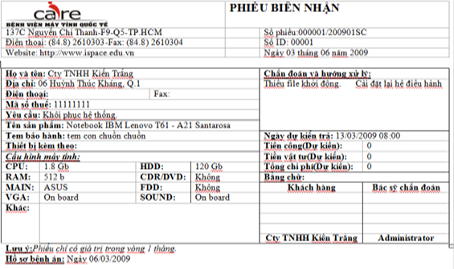
Hình 1- 2. Mẫu phiếu quy định Kiểm tra máy tính
1.4. Khởi động
- Khởi động máy tính để kiểm tra và xác thực các lỗi
- Chạy toàn bộ các chương trình có thông báo lỗi, và một số các chương trình độc lập khác.
1.5. Xác định lỗi phần cứng và phần mềm
- Lỗi phần cứng máy tính à Kiểm tra lỗi của các thiết bị phần cứng.
- Lỗi phần mềm máy tính à Kiểm tra lỗi của hệ điều hành, trình điều khiển, ứng dụng và virus.
1.6. Trợ giúp
- Sử dụng các tài liệu có liên quan: User Guide, User manual…
- Tìm kiếm sự giúp đỡ từ bạn bè, động nghiệp, cấp trên…
1.7. Thông báo
- Báo cáo cấp trên khi có sự cố phát sinh để có hướng giải quyết.
- Thông báo cho khách hàng khi có sự thay đôit hoặc phát sinh thêm.
1.8. Bàn giao máy
- Bật máy cho khách hàng kiểm tra
- Bàn giao các tài liệu, thiết bị (nếu có)
- Hướng dẫn, giải thích cho khách hàng và các vấn đề liên quan
- Ký nhận bàn giao với khách hàng.
2. Quy trình xử lý sự cố phần mềm
Hình 1- 3. Quy trình xử lý sự cố phần mềm
2.1. Tiếp nhận thông tin từ khách hàng
- Đặt các câu hỏi liên quan để tìm hiểu tình trạng máy.
+ Dấu hiệu xảy ra sự cố.
+ Thời gian xảy ra sự cố (Thỉnh thoảng, thường xuyên…).
+ Tình trạng xảy ra.
- Lưu ý: Tránh đặt các câu hỏi trực tiếp.
2.2. Kiểm tra, ghi nhận thông tin và cấu hình
- Xác định các chương trình được cài đặt trên máy tính; Thông tin về các phần mềm (Bản quyền, ứng dụng).
- Xác định các sữ liệu của khách hàng; Vị trí lưu trữ dữ liệu
- Xác định cấu hình của máy và các thiết bị đi kèm; Thông tin chi tiết về cấu hình và phụ kiện.
- Xác định tình trạng ban đầu của máy.
+ Tình trạng phần cứng.
+ Tình trạng phần mềm.
2.3. Khởi động và nhận diện sự cố máy tính
- Kiểm tra tổng quát máy tính.
+ Kiểm tra phần cứng.
+ Kiểm tra phần mềm.
- Ngắt ổ cứng khỏi máy và khởi động để kiểm tra các thiết bị phần cứng; Mục đích đảm bảo an toàn cho dữ liệu nếu có sự cố về phần cứng.
2.4. Sao lưu hệ thống trước khi thao tác
- Sao lưu dữ liệu: Thông tin người dùng, dữ liệu người dùng: Profile, Email, Data…
- Sao lưu trình điều khiển (Driver): Đối với máy bộ, nguyên chiếc hoặc thiết bị không phổ biến.
- Sao lưu hệ thống (GHOST). Tạo bản lưu trữ dự phòng
2.5. Kiểm tra sự cố Hệ điều hành
- Không khởi động. Mất tập tin khởi động.
- Không đăng nhập vào Window
+ Tài khoản bị Disable
+ Quên Password
+ Do virus thay đổi thông số hệ thống
- Window chạy chậm, hay xuất hiện lối.
+ Kiểm tra tình trạng do virus
+ Kiểm tra tài nguyện hệ thống (Phần cứng, phần mềm)
+ Kiểm tra tối ưu hóa hệ thống (Phần cứng, phần mềm)
2.6. Kiểm tra tính tương thích
- Cấu hình máy theo yêu cầu của Hệ điều hành và các chương trình. Mỗi Hệ điều hành đều có yêu cầu riêng với các chương trình chạy trên đó.
- Xung đột giữa Hệ điều hành và các ứng dụng. Đụng chạm giữa các File.dll của hệ thống và chương trình.
- Xung đột giữa các trình điều khiển. Xảy ra tranh chấp giữa trình điều khiển mới và trình điều khiển cũ khi tiến hành nâng cấp thiết bị (Không gỡ bỏ driver của thiết bị cũ).
- Xung đột giữa các chương trình ứng dụng. Đụng chạm giữa các File.dll giữa ứng dụng này với ứng dụng khác.
2.7. Ghi nhận và thông báo tình trạng máy, nêu giải pháp khắc phục cho khách hàng
- Tổng hợp thông tin và tìm ra tình trạng hiện tại của máy, nguyên nhân và cách khắc phục tối ưu.
+ Căn cứ vào thông tin do khách hàng cung cấp.
+ Căn cứ vào sự kiểm tra và xác định lỗi.
- Thông báo cho khách hàng các vấn đề liên quan
2.8. Tối ưu hóa hệ thống và chạy thử
- Tối ưu hóa phần cứng.
+ Nâng cấp phần cứng.
+ Hiệu chỉnh thông số kỹ thuật.
- Tối ưu hóa phần mềm.
+ Tối ưu hóa Hệ điều hành (Tắt các dịch vụ không cần thiết)
+ Sử dụng công cụ chống phân mảnh dữ liệu, công cụ dọn dẹp hệ thống.
+ Sử dụng các chương trình phòng, chống Virus.
- Chạy kiểm tra. Các yêu cầu của khách hàng (Cài đặt phần mềm, kiểm tra lỗi đã khắc phục).
2.9. Bàn giao - Khách hàng kiểm tra máy
- Bật máy cho khách hàng kiểm tra.
- Bàn giao các tài liệu , thiết bị (nếu có).
- Hướng dẫn, giải thích cho khách hàng các vấn đề liên quan.
+ Nguyên nhân các lỗi xảy ra.
+ Cách phòng tránh.
- Ký nhận bàn giao với khách hàng.
+ Dựa trên phiếu biên nhận.
+ Dựa trên các thỏa thuận phát sinh.
3. Phương pháp xử lý sự cố phần mềm
3.1. Quan sát thông báo lỗi
- Quan sát thật kỹ và ghi lại các thông báo lỗi.
- Sắp xếp logic các thông báo lỗi để biết sự liên quan giữa các sự cố.
3.2. Kinh nghiệm và khả năng suy đoán
- Dựa vào những kinh nghiệm đã có của mình để chuẩn đoán về sự cố.
- Dựa vào các tài liệu hướng dẫn để chuẩn đoán.
+ Dựa vào các phương pháp kiểm tra.
+ Dựa vào các nguyên tắc chuẩn đoán.
+ Dựa vào thực tế các thông báo cụ thể để đưa ra chuẩn đoán.
3.3. Dụng cụ hỗ trợ và thay thế
- Sử dụng các dụng cụ hỗ trợ chuẩn đoán sự cố.
- Sử dụng phần mềm kiểm tra sự cố máy tính
- Chuẩn bị sẵn các phầm mềm với các phiêm bản khác nhau.
- Sẵn sàng thay thế các phiêm bản khác của phần mềm.
3.4. Chia sẻ bạn bè, đồng nghiệp
- Chúng ta có thể chia sẻ với bạn bè, đồng nghiệp để có thể nhận được sự chia sẻ từ họ, trong những trường hợp mà sự cố ta chưa gặp phải bao giờ.
4. Nguyên tắc xử lý sự cố phần mềm
4.1. Đảm bảo sự cố không có liên quan đến PCMT
Dựa vào các nguyên tắc chuẩn đoán sự cố để kiểm tra và chắc chắn rằng.
+ Là sự cố phần mềm
+ Sự cố không liên quan đến phần cứng máy tính
4.2. Đảm bảo tính bảo mật và E-mail…
Cần tuân thủ các nguyên tắc trong quá trình điều trị cho máy.
+ Đảm bảo tuyệt đối các nguyên tắc về an toàn điện và an toàn dữ liệu.
+ Đảm bảo tính bảo mật của thông tin và dữ liệu của khách hàng.
4.3. Đảm bảo tính chính xác khi chuẩn đoán và điều trị
- Nhận diện chính xác các sự cố và điều trị hiệu quả các sự cố.
- Báo cáo ngay khi có phát sinh.
Ôn tập:
- Hãy nêu và giải thích quy trình xử lý sự cố phần mềm máy tính.
- Hãy nêu vai trò và tầm quan trọng của việc đảm bảo các nguyên tắc trong quá trình xử lý sự cố phần mềm máy tính.
Bài tập tình huống
- Khách hàng đưa máy đến sửa chữa với thông tin: “bật máy màn hình không lên”. Hãy đặt ra các câu hỏi giúp tìm ra tình trạng máy.
- Trưởng phòng nhân sự thông báo máy tính cá nhân (laptop) không hoạt động. Là nhân viên phòng kỹ thuật bạn sẽ xử lý thế nào?
Bài 2.
XỬ LÝ SỰ CỐ HỆ ĐIỀU HÀNH
1. Xử lý lỗi trên nền Hệ điều hành (HĐH) MS-DOS
MS-DOS (Microsoft Disk Operating System) là Hệ điều hành đơn nhiệm làm việc trong môi trường dòng lệnh (Comman-Line Interface)
1.1. Các lệnh căn bản MS-DOS
Các lệnh nội trú: Chứa trong file COMMAND.COM
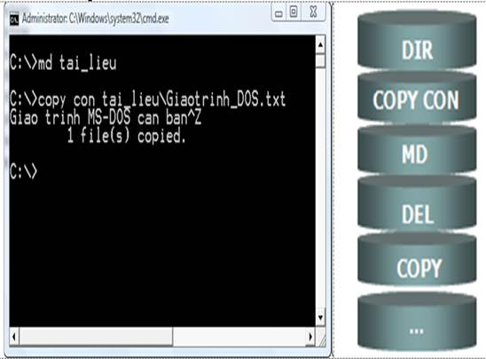
Hình 2-1. Các lệnh nội trú
ü Lệnh DIR là lệnh dùng để xem thư mục.
ü Lệnh COPY CON là lệnh sao chép tệp tin.
ü Lệnh MD là lệnh tạo thư mục.
ü Lệnh DEL là lệnh xóa tệp tin.
ü Lệnh COPY là lệnh sao chép thư mục.
ü … và một sô lệnh khác.
- Các lệnh ngoại trú: Là các tập lệnh ngoại trú có phần mở rộng là .EXE hay .COM hoặc .BAT.
|
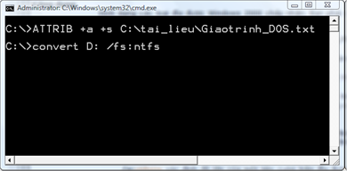 |
|
Hình 2- 2. Các lệnh ngoại trú
Lệnh TREE là lệnh xem cây thư mục.
Lệnh FORMAT là lệnh định dạng Ổ đĩa.
Lệnh CONVERT là lệnh chuyển đổi định dạng ổ đĩa.
Lệnh MOVE là lệnh di chuyển
…và một số lệnh khác.
1.2. Tập tin bat (Batch File)
Là một loại ngôn ngữ Script chứa một hay nhiều các chuỗi lệnh và được leu dưới phần mở rộng là .BAT.
Luôn được xem là một thành phần không thể thiếu của MS-DOS dùng để thi hành các lệnh của DOS và lưu lại cho những lần sau.
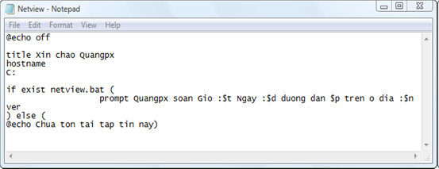
Hình 2 - 3. Minh họa ngôn ngữ Script trong DOS
1.3. Câu lệnh DOS thông dụng
1.3.1. Lệnh Shutdown: Tắt máy hoặc hẹn giờ tắt máy
Việc sử dụng phần mềm tắt máy tính là không cần thiết nếu như bạn biết thực hiện lệnh CMD trên Windows.
Ví dụ: cần tắt máy tính sau 10 phút à thực hiện lệnh CMD bằng cách nhấn Windows + R bật hộp thoại RUN gõ hoặc copy - paste dòng lệnh: "shutdown -s -t 3600"
Trong đó: shutdown: Tắt máy tính; s: viết tắt từ shutdown; t: viết tắt của time(thời gian); 3600: Thời gian hẹn giờ tắt máy được tính bằng giây (bạn có thể tăng giảm nó)
Nếu muốn tắt máy ta thay 3600 bằng 0, máy tính của bạn sẽ được tắt.
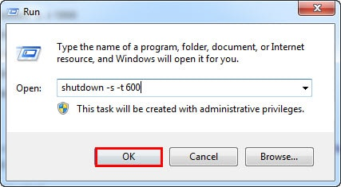
Hình 2 - 4. Hộp thoại Run - Thực hiện lệnh shutdown
Sau đó nhấn OK để thực hiện lệnh. Một hộp thoại mở ra thông báo máy tính của bạn sẽ tắt sau 10 phút.
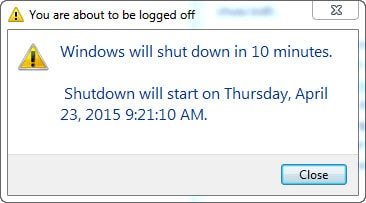
Hình 2 - 5. Hộp thoại logged off
Như vậy là chúng ta có thể thay thế việc sử dụng phần mềm hẹn giờ tắt máy bằng lệnh CMD này.
1.3.2. Lệnh Ipconfig: Tìm IP máy tính.
Nếu việc kiểm tra IP máy tính qua nhiều bước làm bạn mất thời gian bạn có thể thực hiện chúng trên Command Prompt nhanh chóng.
Đầu tiên ta mở Command Prompt bằng cách nhấn Windows + R sau đó đánh cmd rồi Enter.
Tại cửa sổ lệnh Command Prompt hiện ta bạn gõ "Ipconfig" hoặc chuột phải và dán chúng vào.
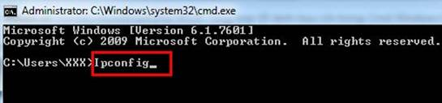
Hình 2 - 6. Thực hiện lệnh ipconfig
Sau khi gõ "Ipconfig" bạn nhấn Enter để xem địa chỉ IP máy của mình.
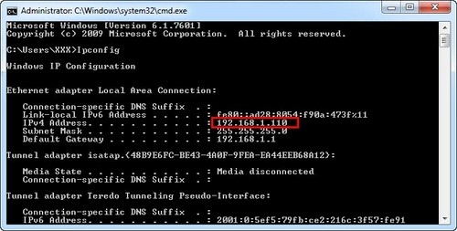
Hình 2 - 7. Địa chỉ IP máy tính
Lưu ý: Đây là địa chỉ IP máy trong mạng LAN.
1.3.3. Lệnh Ping: Kiểm tra kết nối mạng.
Không quá phức tạp và mất thời gian nếu bạn muốn kiểm tra kết nối mạng Windows cũng đã hỗ trợ bạn khi thực hiện lệnh "Ping diachitrangweb" trên Command Prompt. Ví dụ để kiểm tra kết nối mạng ta Ping với google.com.vn ta gõ vào Command Prompt "Ping goole.com.vn" rồi nhấn Enter.
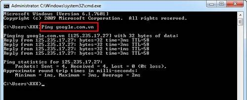
Hình 2 - 8. Lệnh kiểm tra kết nối mạng
Chú ý: Với cách này bạn cũng có thể kiểm tra kết nối với máy tính khác trong LAN. Khi thực hiện ta chit cần gõ Ping kèm theo địa chỉ IP máy đó.
1.3.4. Lệnh Ipconfig /flushdns: Xóa toàn bộ dữ liệu bộ nhớ DNS
Khi thay đổi DNS Server hiệu ứng có thể chưa thay đổi ngay lập tức chính vì vậy Windows sử dụng một bộ nhớ đệm để lưu lại các thay đổi của DNS để tiết kiệm thời gian truy cập những địa chỉ trước đó. Để đảm bảo Windows nhận địa chỉ từ một DNS Server mới thay vì sử dụng địa chỉ cũ trong bộ nhớ đệm (cache), bạn chỉ cần chạy lệnh ipconfig /flushdns sau khi thay đổi DNS Server của mình.
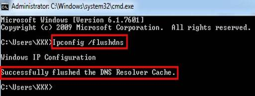
Hình 2 - 9. Xóa toàn bộ dữ liệu bộ nhớ DNS
Sau khi thực hiện lệnh máy báo thành công: Successfully...như hình trên.
1.3.5. Lệnh Sfc/Scannow: Quét các tệp tin hệ thống.
Trong Windows có tích hợp sẵn System Files Checker dùng để quét tất cả các tệp tin hệ thống đồng thời check luôn cách vấn đề hệ thống gặp phải và tự động sử chữa chúng. Vậy làm cách nào để sử dụng System Files Checker? rất đơn giản bạn chỉ cần mở cửa sổ lệnh Command Prompt và gõ "sfc /scannow"
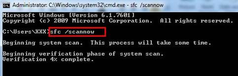
Hình 2 - 10. Quét các tệp tin hệ thống
Việc sử dụng lệnh sfc /scannow giúp thay thế được việc cài đặt những phần mềm tiện ích khác hơn nữa chúng được thực hiện khá nhanh chóng và đơn giản.
1.3.6. Lệnh Netstat: Liệt kê số liệu thống kê mạng khi sử dụng.
Lệnh Netstat giúp hiển thị tất cả các số liệu thống kê mạng khi được sử dụng với các tùy chọn khác nhau. Nếu bạn cần liệt kê thống kê mạng thì nó là một lệnh hữu ích.

Hình 2 - 11. Liệt kê số liệu thống kê mạng khi sử dụng
1.3.7. Lệnh Netstat -an: Liệt kê danh sách kết nối mạng, cổng mạng và địa chỉ IP đã kết nối.
Một trong những biến thể thú vị nhất của Netstat chính là Netstat -an, khi bạn thực hiện lệnh này nó sẽ hiển thị một danh sách tất cả các kết nối mạng đang mở trên máy tính cùng với các cổng đang sử dụng và địa chỉ IP đã kết nối.
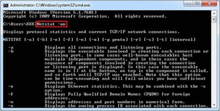
Hình 2 - 12. Liệt kê danh sách kết nối mạng, cổng mạng và địa chỉ IP đã kết nối
1.3.8. Lệnh Telnet: Lệnh kết nối với Telnet Servers
Khi cần kết nối với Telnet Servers bạn vẫn có thể thực hiên trực tiếp bằng lệnh mà không cần sử dụng phần mềm. Do Telnet Servers không được cài sẵn trên máy nên khi thực hiện sẽ báo lỗi như hình dưới.
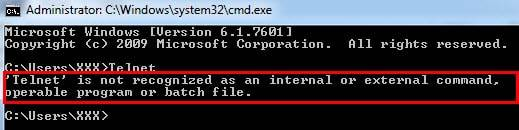
Hình 2 - 13. Lệnh kết nối với Telnet Servers
Cài Telnet Servers bằng cách vào Control Pannel chọn Program (1) chọn tiếp Turn Windows features on or of (2) kéo xuống tìm và chọn Telnet Servers (3) sau đó nhấn Ok (4) để bật Telnet Servers
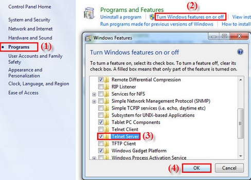
Hình 2 - 14. Cài Telnet Servers
Chú ý: Telnet Servers dùng khi đang kết nối trực tiếp với một thiết bị và nó yêu cầu bạn sử dụng Telnet để thiết lập, tránh dùng Telnet Servers khi không cần thiết.
1.3.9. Lệnh Cipher: Xóa bỏ dữ liệu vĩnh viễn
Như ta đã biết lệnh Cipher chủ yếu được sử dụng cho việc quản lý mã hóa, tuy nhiên bênh cạnh đó nó còn cho phép bạn xóa vĩnh viễn tệp tin khi bạn cần làm sạch ổ đĩa.
Ví dụ: muốn xóa Folder Image taimienphi trong ổ D ta thực hiện như sau:
cipher /w:d:Image taimienphi
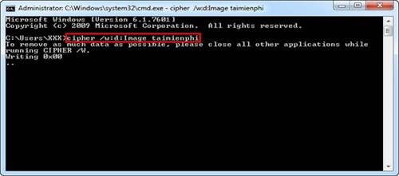
Hình 2- 15 Xóa bỏ dữ liệu vĩnh viễn
Chú ý: Do dữ liệu khi được xóa sẽ không thể phục hồi được do vậy bạn hãy cẩn trọng trong quá trình thực hiện, tránh sự nhầm lẫn.
1.4. Ứng dụng Norton Commander và Volkov Commander
- NC (Norton Commander) và VC (Volkov Commander) là phần mềm quản lý tập tin và thư mục.
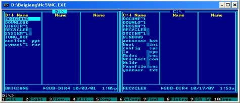
Hình 2- 16 Giao diện phần mềm quản lý tập tin và thư mục
2. Xử lý lỗi trên nền HĐH MS Windows
2.1 Quá trình khởi động của Windows
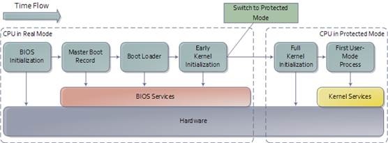
Hình 2- 17 Quá trình khởi động của Windows
2.1.1 Bấm nút nguồn:
Tất nhiên là phải bấm nguồn thì mới khởi động được, nhưng không cần bấm nút nguồn vẫn có thể khởi động 1 máy tính với tính năng “Wake on LAN”, bật nguồn qua mạng. Thực ra thì khi chưa bấm nút nguồn thì bo mạch chủ (mainboard) vẫn được cấp điện, để có năng lượng chờ hành động bấm nút nguồn. Khi bấm nguồn thì tín hiệu máy tính bắt đầu khởi động sẽ được truyền đi ngay lập tức.
2.1.2 BIOS (Basic Input/Output System): Hệ thống nhập xuất cơ bản.
Là chương trình chạy đầu tiên sau khi máy tính được ra lệnh khởi động, sau khi kiểm tra việc cấp điện của bộ nguồn, VGA Card (card màn hình) sẽ xuất những thông tin của quá trình khởi động tiếp theo.
BIOS tiếp tục thực hiện POST (Power-on Self-test) để kiểm tra thông số các phần cứng khác như CPU, bộ nhớ RAM, thiết bị lưu trữ, thiết bị mạng,… Lúc này nếu bạn muốn thay đổi các cài đặt của phần cứng thì BIOS cũng cho phép điều đó. Tùy hãng sản xuất mà màn hình sẽ hiện dòng chữ hướng dẫn bạn ấn phím nào để vào cài đặt BIOS (F2,DEL,…), cũng có máy không hiển thị gì, cứ lặng lẽ chạy tiếp.
Nếu quá trình POST kết thúc thành công (tức là không có thiết bị nào bị hỏng), thì BIOS sẽ tìm xem phải khởi động hệ điều hành từ thiết bị lưu trữ nào: ổ cứng (HDD), CD/DVD, USB… Bạn có thể quyết định khởi động hệ điều hành từ thiết bị nào bằng cách cài đặt trong BIOS.
2.1.3 Master Boot Record (MBR):
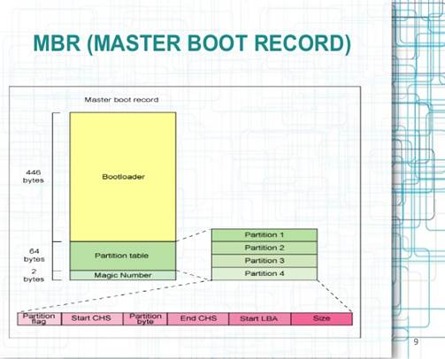
Hình 2 - 18. Mô hình Master Boot Record (MBR):
MBR ( Master Boot Record ) là sector đầu tiên của ổ cứng , nó không thuộc phân vùng nào cũng không phải là Boot Sector.
Boot Sector: chương trình khởi động hệ điều hành ( chỉ là 1 đoạn mã ngắn, gọi là mã khởi động Boot Code ) được đặt ở 1 sector , gọi là Boot Sector . Mỗi phân vùng trên ổ cứng đều có 1 boot sector được đặt ở đầu phân vùng
Boot Code: ở mỗi phân vùng là khác nhau và do mỗi Hệ Điều Hành sử dụng phân vùng tự cài đặt khác nhau, cho nên boot code này không thể quy định chung được
Nếu ta chọn khởi động hệ điều hành từ ổ cứng , BIOS sẽ tìm đến MBR nạp chương tình khởi động cho máy. Boot Code trong MBR sẽ xác định ổ cứng có chứa bao nhiêu phân vùng (Partition) , có bao nhiêu hệ điều hành được cài và chúng được đặt ở đâu . Phân vùng được kích hoạt (Active) , MBR sẽ nạp Boot Code của phân vùng đó để khởi động hệ điều hành đặt trên phân vùng đó . Bạn chỉ được kích hoạt (active) 1 phân vùng duy nhất.
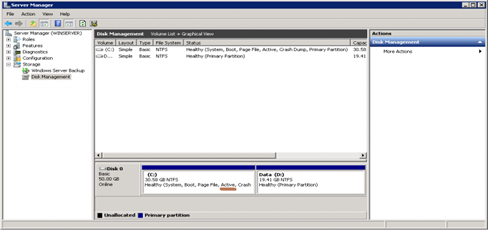
Hình 2 - 19. Giao diện quản lý đĩa cứng
- Thấy có vẻ phức tạp nhưng quá trình này cơ bản là BIOS biết được sẽ khởi động từ thiết bị nào, nó sẽ đọc MBR của thiết bị đó để định vị phân vùng được chỉ định ưu tiên khởi động hệ điều hành đã cài lên đó. Quá trình này có thể xem là định vị và khởi động boot loader, chương trình chịu trách nhiệm cho việc tìm và nạp nhân (kernel) của hệ điều hành.
2.1.4 Boot loader
- Có nhiều loại bootloader như GRUB và LILO (tiền thân của GRUB) trên Linux, trên Windows có NTLDR và BOOTMGR. Bootloader của Linux có thể khởi động cho cả Windows, nhưng bootloader của Windows không hỗ trợ khởi động Linux.
- Nhiều loại nhưng chúng đều có chung mục đích: cho phép bạn lựa chọn một trong các hệ điều hành có trên máy tính để khởi động, sau đó chúng sẽ nạp nhân (kernel) của hệ điều hành đó vào bộ nhớ và chuyển quyền điều khiển máy tính cho kernel này. Bạn nào sử dụng máy có nhiều hệ điều hành sẽ hiểu rõ giai đoạn này. Khi chúng ta mở máy lên, chương trình bootloader này cho ta thời gian để chọn hệ điều hành mình muốn sử dụng.
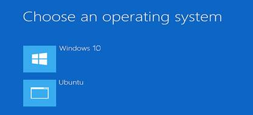
Hình 2 - 20. Giao diện chọn hệ điều hành khi khởi động
2.1.5 Hệ điều hành được nạp và hoàn thành quá trình khởi động:
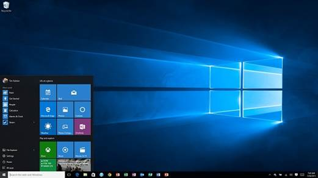
Hình 2 - 21. Giao diện hệ điều hành sau khi khởi động
- Sau khi nạp nhân (Kernel) và chuyển quyền điều khiển máy tính cho Kernel. Hệ điều hành tiếp tục quá trình khởi động của mình cho đến khi hoàn thành. Nếu quá trình này không bị lỗi màn hình đăng nhập sẽ được xuất hiện cho bạn đăng nhập, hoặc vào thẳng desktop sẵn sàng cho bạn sử dụng.
- Trên đây là cơ bản về quá trình khởi động một máy vi tính, rất nhiều tác vụ được thực hiện để đi tới màn hình desktop cho bạn sử dụng phải không? Cảm ơn các bạn đã theo dõi.
2.2 Sửa lỗi BOOTMGR is missing khi khởi động Windows
Lỗi BOOTMGR is missing là một trong những lỗi khá phổ biến, người dùng thường gặp phải trong quá trình khởi động Windows. Vậy làm sao để khắc phục được lỗi này. Mời các bạn cùng tham khảo bài viết dưới đây của Quản trị mạng.
2.2.1. BOOTMGR là gì?
BOOTMGR hay còn gọi là Windows Boot Manager, được dùng để kiểm soát quá trình khởi động của Windows. BOOTMGR giúp khởi chạy winload.exe khi bạn khởi động máy tính để load hệ điều hành Windows.
Lỗi BOOTMGR is missing chỉ xảy ra trên Windows Vista, Windows 7, Windows 8, 8.1 và Windows 10. Trên Windows XP không xảy ra lỗi này.
Khi xảy ra lỗi BOOTMGR is missing thường xuất hiện một số thông báo như:
"BOOTMGR is missing - Press any key to restart."
"BOOTMGR is missing - Press Ctrl + Alt + Del to restart."
"Couldn't find BOOTMGR."
2.2.2. Nguyên nhân gây ra lỗi BOOTMGR
Hình 2 - 22. Giao diện lỗi BOOTMGR
Có rất nhiều nguyên nhân gây ra lỗi BOOT MGR, chẳng hạn như các file khởi động lỗi, nhầm file, lỗi ổ cứng, lỗi nâng cấp hệ điều hành, lỗi BIOS quá hạn, khu vực ổ cứng bị lỗi, và lỗi dây cáp hỏng.
2.2.3. Khắc phục lỗi BOOTMGR is missing trên Windows
- Sử dụng Windows Startup để sửa lỗi Boot Volume:
Khởi động lại máy tính của bạn và nhấn phím F8 hoặc phím F12 để kích hoạt Boot Settings.
Trên màn hình tiếp theo bạn lựa chọn khởi động máy tính từ ổ đĩa hoặc ổ USB.
Sau khi quá trình khởi động kết thúc, trên màn hình sẽ hiển thị giao diện Install Windows. Tại đây bạn chọn Language, Time and currency và Keyboard rồi click chọn Next.
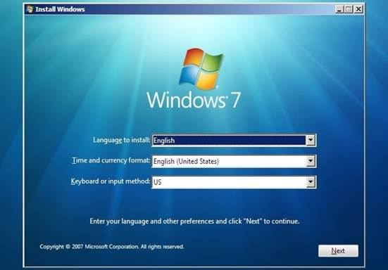
Hình 2 - 23. Giao diện Install Windows
Trên giao diện tiếp theo, chọn Repair your computer rồi chọn phiên bản hệ điều hành của bạn và click chọn tiếp Next.
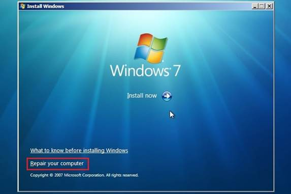
Hình 2 - 24. Giao diện Repair your computer
Windows 7: Trên cửa sổ System Recovery Options, chọn Startup Repair để tự động quét và sửa lỗi Windows.
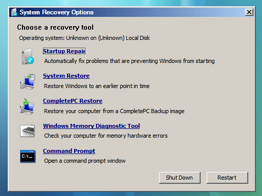
Hình 2 - 25. Giao diện System Recovery Options
Windows 8, 8.1 và Windows 10: Sau khi click chọn Repair your computer, chọn tiếp Troubelshoot rồi chọn Advanced options.
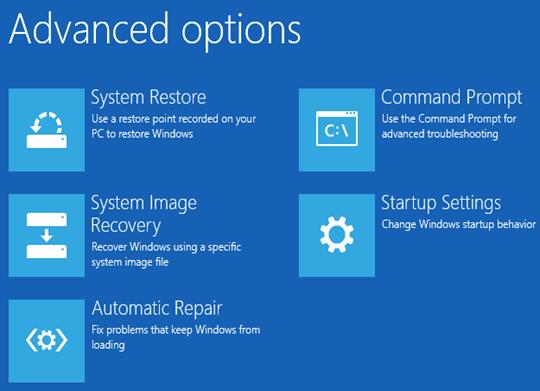
Hình 2 - 26. Giao diện Advanced options
Tiếp theo chọn Automatic Repair (Windows 8 và 8.1) hoặc Startup Repair (Windows 10) để bắt đầu sửa lỗi máy tính Windows của bạn.
Sau khi quá trình hoàn tất, bạn sẽ được yêu cầu khởi động lại máy tính Windows. Nhiệm vụ của bạn là khởi động lại máy tính là xong.
- Hiệu chình một phân vùng Boot Sector mới trên Windows 7, 8, 8.1 và Windows 10:
Nếu phân vùng "Boot Sector" bị sai hoặc bị lỗi, máy tính Windows của bạn sẽ khởi động không đúng và sẽ hiển thị lỗi BOOTMGR is missing trong suốt quá trình khởi động. Trong trường hợp này bạn có thể khắc phục lỗi bằng cách viết một phân vùng Boot Sector mới.
Trên Windows 7: Truy cập System Recovery Options sau đó chọn Command prompt.
Trên Windows 8, 8.1 và Windows 10: Từ cửa sổ Repair your computer, chọn Troubleshoot => Advanced options => Command Prompt.
Trên cửa sổ Command Prompt, bạn nhập bootrec /fixboot vào đó rồi nhấn Enter. Lúc này trên màn hình bạn sẽ nhìn thấy thông báo The operation completed successfully.
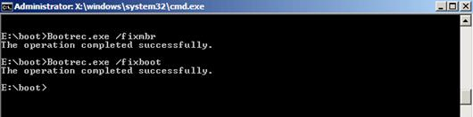
Hình 2 - 27. Màn hình thông báo lệnh Bootrec /fixboot
Tiếp theo khởi động lại máy tính của bạn bằng cách nhấn tổ hợp phím Ctrl + Alt + Del.
Ngoài ra nếu BCD (Boot Configuration Data) bị lỗi,... Windows cũng không thể khởi động. Lúc này trên màn hình cũng hiển thị thông báo lỗi BOOTMGR is missing.
- Restore lại máy tính Windows để sửa lỗi BOOTMGR Error:
Các file hệ thống Windows bị lỗi có thể gây ra nhiều lỗi khác nhau, một trong số đó là lỗi BOOTMGR is missing. Trong hầu hết các trường hợp khi hệ điều hành Windows bị lỗi sẽ hiển thị màn hình chết màu xanh.
Để khắc phục lỗi này, bạn có thể restore lại máy tính của mình từ một Image backup.
Lưu ý: Nếu không có Image backup không thể sử dụng phương pháp này.
Ngoài ra một lí do khác có thể là nguyên nhân gây ra lỗi BOOTMGR is missing là phân vùng hệ thống ổ đĩa cứng bị vô hiệu hóa. Trường hợp này bạn có thẻ sử dụng Partition Wizard Bootable CD Free Editon để khởi động lại máy tính của mình.
Tiếp theo chọn phân vùng, vào thẻ Partition chọn Modify chọn Activate.
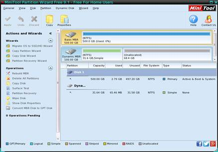
Hình 2 - 28. Giao diện phần mềm Partition Wizard Bootable CD Free Editon
Đôi khi trong một số trường hợp phiên bản BIOS quá cũ cũng có thể là nguyên nhân gây ra lỗi BOOTMGR is missing. Trong những trường hợp này bạn có thể nâng cấp phiên bản BIOS mới nhất để khắc phục lỗi.
2.3 Lỗi Windows Explorer liên tục khởi động lại và bị treo, đây là cách sửa lỗi
Không thể phủ nhận Windows Explorer là một phần quan trọng trên hệ điều hành Windows. Tuy nhiên dạo thời gian gần đây khá nhiều người dùng phản ánh lại rằng trong quá trình sử dụng máy tính Windows Explorer liên tục khởi động lại, khiến nhiều người dùng khó chịu. Thực tế thì có rất nhiều nguyên nhân gây lỗi. Một trong những nguyên nhân phổ biến là cài đặt ứng dụng của bên thứ 3 không tương thích, hoặc do driver card đồ họa, các chương trình, dịch vụ khởi chạy cùng hệ thống,…
2.3.1. Gỡ bỏ cài đặt các ứng mới cài đặt gần đây
Nếu đang phải đối mặt với lỗi Windows Explorer khởi động lại liên tục, giải pháp đầu tiên bạn có thể nghĩ đến là gỡ bỏ tận gốc cài đặt các chương trình mà bạn mới cài đặt trên hệ thống, sau đó kiểm tra xem lỗi còn hay không.
2.3.2. Tìm và vô hiệu hóa các chương trình hoặc dịch vụ khởi động cùng hệ thống bị lỗi
Có thể các mục khởi động cùng Windows không tương thích sẽ gây ra lỗi explorer.exe bị treo. Do đó bạn nên vô hiệu hóa các chương trình, dịch vụ (service) khởi động cùng hệ thống mà bạn đã thêm mới hoặc update (cập nhật) gần đây và kiểm tra xem lỗi còn hay không.
- Để vô hiệu hóa các chương trình khởi động cùng hệ thống:
Trên Windows 10, 8 và 8.1: Kích chuột phải vào nút Start, chọn Task Manager.
Lúc này trên màn hình xuất hiện cửa sổ Task Manager, tại đây bạn click chọn tab Startup rồi vô hiệu hóa các chương trình từ danh sách.
Trên các phiên bản Windows mới hơn: nhấn tổ hợp phím Windows + R để mở cửa sổ lệnh Run, sau đó nhập msconfig vào đó rồi nhấn Enter.
Sau đó click chọn Startup và vô hiệu hóa các chương trình khởi động cùng hệ thống.
- Để vô hiệu hóa các dịch vụ (service) khởi động cùng hệ thống:
Đầu tiên mở cửa sổ lệnh Run bằng cách nhấn tổ hợp phím Windows + R, sau đó nhập msconfig vào đó rồi nhấn Enter.
Trên cửa sổ Task Manager, click chọn tab Services.
Đánh tích chọn Hide all microsoft services.
Tiếp theo tiến hành vô hiệu hóa các dịch vụ (service) mà bạn mới thêm.
Sau khi thực hiện xong các bước, tiến hành khởi động lại máy tính của bạn và kiểm tra xem lỗi còn hay không.
2.3.3. Thử cập nhật driver card đồ họa
Trong một số trường hợp lỗi card đồ họa có thể là nguyên nhân gây ra lỗi Windows Explorer không hồi đáp hoặc một số lỗi khác. Do đó để khắc phục lỗi bạn có thể áp dụng giải pháp là cập nhật card đồ họa và kiểm tra xem lỗi còn hay không.
2.3.4. Sao chép Explorer.exe vào thư mục System 32
Nếu đã áp dụng cách trên mà vẫn không khắc phục được lỗi, bạn có thể thử áp dụng cách sao chép Explorer.exe vào thư mục System 32 và kiểm tra xem lỗi còn hay không.
Truy cập C:\Windows.
Tìm và sao chép explorer.exe.
Dán vào thư mục theo đường dẫn C:\Windows\System32.
Cuối cùng khởi động lại máy tính của bạn và kiểm tra xem lỗi “fixes windows explorer keeps restarting and crashing” còn xuất hiện hay không.
2.3.5. Chạy lệnh SFC
Một giải pháp khác để khắc phục lỗi là chạy lệnh SFC. Thực hiện theo các bước dưới đây:
Nhấn tổ hợp phím Windows + X để mở Power User Menu, sau đó click chọn Command Prompt (Admin).
Nhập sfc /scannow vào cửa sổ Command Prompt rồi nhấn Enter.
Chờ cho đến khi quá trình hoàn tất.
Cuối cùng kiểm tra xem lỗi còn hay không.
2.3.6. Tạo tài khoản người dùng mới
Ngoài ra bạn có thể thử tạo một user (người dùng) mới, sau đó thử xóa tài khoản cũ đi và kiểm tra xem lỗi còn hay không.
2.3.7. Quét virus trên hệ thống
Nếu máy tính của bạn bị virus tấn công, nó có thể gây ra một số lỗi trên hệ thống, trong đó có lỗi Explorer.exe. Trong trường hợp này bạn có thể sử dụng chương trình, phần mềm diệt virus để loại bỏ các chương trình độc hại cũng như virus ra khỏi hệ thống và để khắc phục lỗi Windows Explorer
2.4 Tắt Windows Update trên Windows 10
Windows 10 đã đến với tay người dùng, nhưng sau khi cài đặt Windows 10 hoàn tất thì tính năng Update vẫn còn đó. Thêm nữa, trên Windows 10, Microsoft không còn tích hợp tùy chọn tắt update hoàn toàn mà quá trình update (cập nhật) sẽ diễn ra 1 cách tự động, không thông báo cho người dùng.
Đối với phần lớn người dùng thì việc Windows Update sẽ làm chậm hệ thống, có thể gây ra lỗi không tương thích, khi cần tắt máy phải chờ Windows cập nhật rất lâu và bực mình... và bài viết dưới đây của Quản Trị Mạng sẽ hướng dẫn các bạn cách tắt tính năng tự động cập nhật trên Windows 10! Vì Windows 10 liên tục cập nhật, nếu cách 1 không được, bạn thử tiếp cách 2, cách 3... nhé, mình test lần 1, cách 1 là được, sau đó cập nhật thì phải dùng kết hợp cách 1 và 2.
2.4.1. Tắt update Windows 10 bằng Group Policy Editor
Để tắt tính năng tự động cập nhật trên Windows 10, bạn thực hiện theo các bước dưới đây:
Bước 1: Mở Group Policy Editor, nhấn phím Windows + R để mở cửa sổ lệnh Run, sau đó nhập gpedit.msc vào đó rồi nhấn Enter.
Bước 2: Trên cửa sổ Group Policy Editor bạn điều hướng theo key: Computer Configuration => Administrative Templates => Windows Components => Windows Update
Bước 3: Tìm Configure Automatic Update, kích đúp chuột vào đó và chọn Disabled, sau đó tiến hành lưu lại thay đổi là xong.
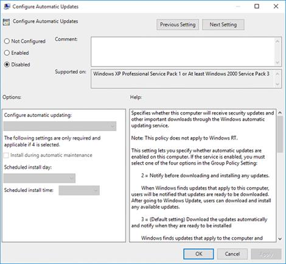
Hình 2 - 29. Giao diện Configure Automatic Update
2.4.2. Tắt update trên Win 10 bằng services.msc
Nếu cách 1 vẫn chưa chặn triệt để cập nhật trên Windows 10, bạn thử kết hợp thêm cách này:
Nhấn Windows+R để mở run > gõ services.msc > nhấn Enter hoặc vào qua đường dẫn:
Control Panel\All Control Panel Items\Administrative Tools
Tìm đến phần Windows Update (kéo xuống gần cuối cùng), nhấp đúp vào nó để hiện ra cửa sổ như dưới đây:
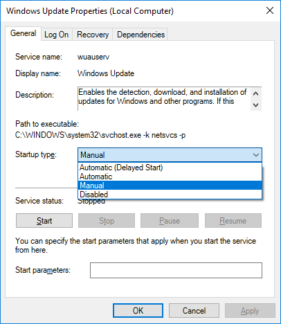
Hình 2 - 30. Giao diện Windows Update
Tại tab General tìm Startup type > nhấp vào mũi tên trong hộp và chọn Disabled.
OK để lưu thay đổi, khởi động lại máy và kiểm tra lại tính năng Windows Update.
Lưu ý: Nếu bạn làm theo cách này thì Windows Defender cũng không thể Update được nữa, sẽ khá nguy hiểm nếu máy tính của bạn không cài thêm phần mềm diệt virus cho Windows nào. Nếu chỉ muốn trì hoãn cập nhật Windows 10, chờ đến khi có bản cập nhật hoàn chỉnh, thì trong phần Startup Type bạn chọn Automatic (Delayed Start) nhé. Khi đó Windows 10 sẽ cho phép hoãn cập nhật 3 ngày một, cứ sau 3 ngày bạn lại chọn hoãn tiếp.
2.4.3. Chặn Windows 10 cập nhật theo hướng dẫn từ Microsoft
Bạn nhập regedit vào ô tìm kiếm, nhấn Enter để mở cửa số registry.
Copy và dán đường dẫn sau vào thanh địa chỉ ngay dưới menu File|Edit|View|Favorites|Help:
HKEY_LOCAL_MACHINE\Software\Policies\Microsoft\Windows\WindowsUpdate\AU

Hình 2 - 31. Giao diện Registry
Nhấp đúp vào NoAutoUpdate, trong Value data, bạn nhập 1 rồi nhấn OK như hình:
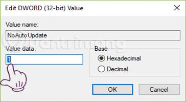
Hình 2 - 32. Giao diện Edit Registry
Sau khi hoàn thành giá trị của NoAutoUpdate sẽ hiện là 0x00000001(1). Nếu muốn để Windows 10 cập nhật tự động trở lại, bạn đổi giá trị Value data trong bước trên thành 0.
2.4.4. Tắt Windows Update trên Windows 10 bằng Administrative Tools
Ở giao diện Desktop, các bạn nhấn phím cửa sổ và gõ chữ update:
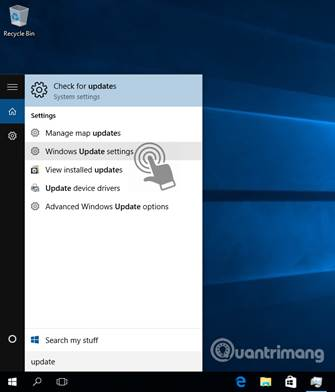
Hình 2 - 33.
Có khá nhiều tùy chọn ở đây, các bạn bấm Windows Update settings hoặc Advanced Windows Update options. Cửa sổ tiếp theo hiển thị, các bạn chọn chế độ Notify to schedule restart thay vì Automatic, bỏ dấu tích ở 2 ô bên dưới:
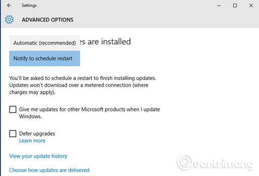
Hình 2 - 34. Giao diện Advanced option
Một tính năng nữa khá mới trong Windows 10 là hệ thống cho phép cập nhật thông qua các máy tính ngang hàng (p2p). Hiểu nôm na là như này: khi cập nhật thì một máy tính sẽ được coi là máy "chủ", còn các máy ngang hàng khác sẽ cập nhật qua máy "chủ" đó. Điều này sẽ giúp người dùng tiết kiệm được băng thông, và việc cập nhật cũng sẽ nhanh hơn so với việc tải trực tiếp từ Internet về. Và để tắt kiểu update này đi, các bạn bấm vào link Choose how updates are delivered: Chuyển chế độ On thành Off.
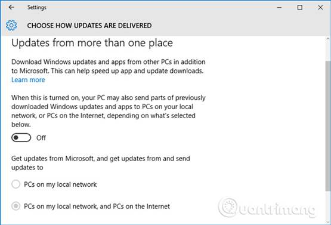
Hình 2 - 35. Giao diện Choose how updates are delivered
2.4.5. Thiết lập kết nối WiFi ở chế độ Metered connection để tạm hoãn tự động cập nhật trên Windows 10
Nếu như bạn muốn tắt hẳn tự động cập nhật Windows 10, bạn có thể tận dụng tính năng Metered Connection để trì hoãn tự động cập nhật.
Lưu ý: Tùy chọn này chỉ hoạt động với WiFi vì Windows 10 không thể xem xét bất kỳ loại Ethernet nào khác thành Metered Connection
Nếu kết nối Internet của bạn có giới hạn dữ liệu, tính năng này có thể trợ giúp rất nhiều vì bạn có thể cài đặt chúng vào thời điểm thích hợp.
Để bật tùy chọn Set as metered connection, hãy làm theo các bước sau:
1. Trên máy tính Windows 10, mở Start Menu.
2. Chuyển đến Settings.
3. Khi cửa sổ Settings mở ra, click vào Network & Internet.
4. Click vào Wi-Fi ở ngăn bên trái.
5. Bây giờ, hãy nhấp vào Manage known networks.
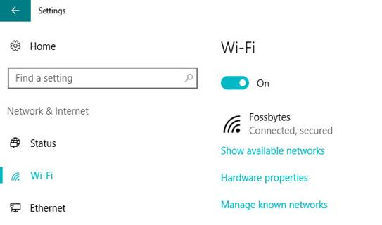
Hình 2 - 36. Giao diện kết nối wifi
6. Click vào tên kết nối không dây.
7. Bấm vào nút Properties. Bây giờ, cuộn xuống để tìm tiêu đề Metered Connections.
8. Sau đó bật nút Set as metered connection.
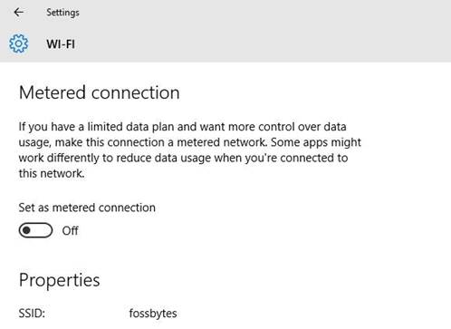
Hình 2 - 37. Giao diện kết nối Wifi
Bằng cách này, bạn có thể tạm dừng các bản cập nhật của Windows 10 một lúc trong trường hợp bạn đã hết lưu lượng sử dụng hàng tháng.
2.4.6. Bản vá Windows 10 Home cho phép bạn tắt cập nhật ứng dụng tự động
Tùy chọn này chỉ hoạt động cho bản cập nhật ứng dụng. Nếu muốn tiếp tục nhận bản cập nhật bảo mật và sửa lỗi Windows 10, bạn có thể sử dụng phương pháp này.
Trong Cumulative Update 5, Microsoft đã cho phép tắt cập nhật ứng dụng tự động. Nếu bạn không có bản vá này, hãy đi tới Settings > Update & Security > Windows Update và đảm bảo nhận được bản vá Windows mới nhất.
Sau đó, mở ứng dụng Store và nhấp vào nút Profile trong thanh công cụ. Ở đây bạn có thể tắt cập nhật tự động ứng dụng để vô hiệu hóa tự động cập nhật của Windows 10.
2.4.7. Tắt các bản cập nhật Windows 10 cụ thể
Trên website của Windows có một công cụ "show or hide updates" cho phép người dùng vô hiệu hóa hoặc ẩn bản cập nhật Windows 10 cụ thể. Bạn chỉ cần tải xuống công cụ này và cài đặt nó. Thực hiện theo các hướng dẫn và vô hiệu các cập nhật có vấn đề.
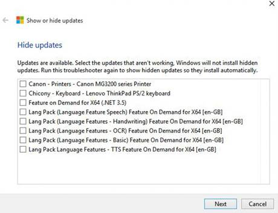
Hình 2 - 38. Giao diện hiển thị va ẩn update
2.5 Khởi động các chương trình cùng Windows
2.5.1. Thêm các mục vào thư mục Startup
Windows có chứa một thư mục có tên startup được sử dụng để khởi chạy bất kỳ các định dạng của các chương trình hoặc tập tin thực thi nào.
Bất kỳ mục tập tin, chương trình nào được thêm vào thư mục startup đều được thiết lập khởi chạy cùng Windows. Do đó nếu muốn khởi chạy bất kỳ chương trình, tài liệu nào hoặc tự động mở các trình duyệt yêu thích khi máy tính Windows khởi động, cách đơn giản nhất là bạn di chuyển shortcut của các chương trình đó vào thư mục Startup.
Cách nhanh nhất để truy cập thư mục startup là nhấn tổ hợp phím Windows + R để mở cửa sổ lệnh Run, sau đó nhập "shell:startup" vào cửa sổ Run rồi nhấn Enter. Lúc này trên màn hình xuất hiện cửa sổ thư mục Startup.
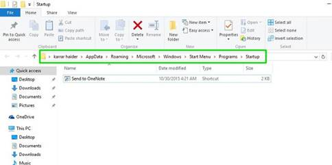
Hình 2 - 39. Cửa sổ thư mục Startup
Bước tiếp theo là sao chép các tập tin hoặc các tập tin thực thi chương trình vào thư mục Startup bằng cách nhấn tổ hợp phím Ctrl + C. Điều này để tạo bản sao của các tập tin có cùng kích thước với tập tin gốc.
Việc tạo shortcut thường có vẻ "ổn" hơn. Để tạo một shortcut, bạn kích chuột phải vào tập tin thực thi của chương trình, sau đó chọn "Create shortcut".
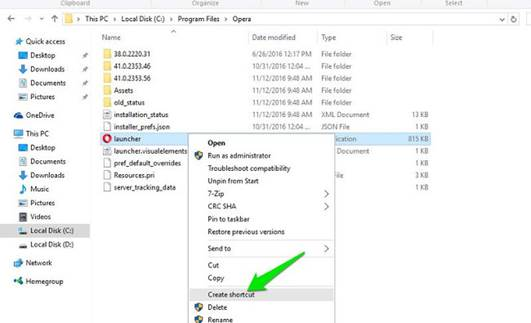
Hình 2 - 40.
Tiếp theo cắt và dán shortcut vào thư mục startup. Cách này có thể áp dụng cho tất cả các định dạng tập tin, thư mục, script hoặc các tập tin thực thi chương trình.
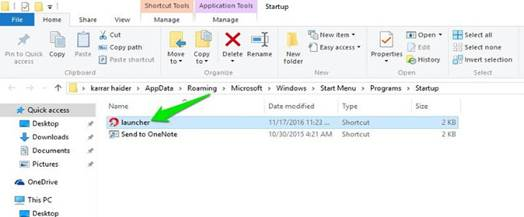
Hình 2 - 41.
Lưu ý:
Cách này chỉ áp dụng cho tài khoản user (người dùng) hiện tại. Nếu có nhiều tài khoản user (người dùng) và bạn muốn áp dụng các thiết lập tương tự cho tất cả user (người dùng), khi đó bạn sẽ phải di chuyển shortcut vào các thư mục startup khác.
Nhập câu lệnh dưới đây vào cửa sổ lệnh Run:
shell:common startup
2.5.2. Sử dụng Windows Registry
Ngoài cách trên bạn còn có thể tùy chỉnh danh sách các chương trình Startup Programs bằng Windows Registry.
Lưu ý: Registry Editor là công cụ khá mạnh và có ảnh hưởng đến hệ thống. Do đó bạn nên sao lưu Registry Editor để đề phòng trường hợp xấu xảy ra trong quá trình chỉnh sửa Registry Editor.
Nhấn tổ hợp phím Windows + R để mở cửa sổ lệnh Run, sau đó nhập regedit vào đó rồi nhấn Enter để mở cửa sổ Registry Editor.
Trên cửa sổ Registry Editor bạn điều hướng theo key: HKEY_CURRENT_USER\Software\Microsoft\Windows\CurrentVersion\Run
Tại đây tìm và kích chuột phải vào key Run, sau đó chọn New => String Value.
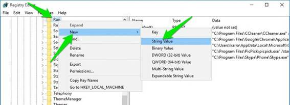
Hình 2 - 42
Lúc này ở khung bên phải, một chuỗi ký tự (string) sẽ được tạo. Nhiệm vụ của bạn là đặt tên cho chuỗi ký tự đó.
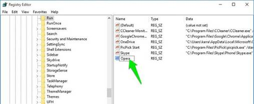
Hình 2 - 43
Bước tiếp theo bạn cần làm là nhập chính xác thư mục của chương trình hoặc tập tin mà bạn muốn khởi chạy cùng Windows thành string value.
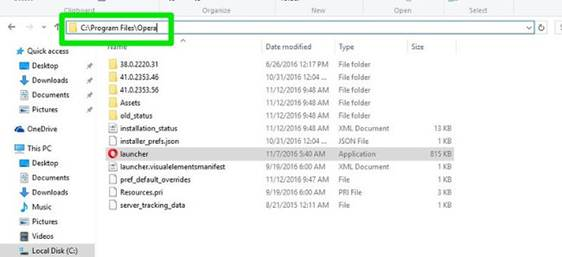
Hình 2 - 44
Truy cập chính xác vị trí của chương trình hoặc tập tin trên File Explorer và sao chép đường dẫn thư mục trên thanh địa chỉ.
Kích đúp chuột vào chuỗi ký tự (string) mới mà bạn đã tạo trên Registry, sau đó dán thư mục vào string value.
Tiếp theo thêm biểu tượng (\) và nhập chính xác tên tập tin thực thi của chương trình hoặc file, bao gồm cả tên đuôi mở rộng (nếu có sẵn).
Thêm dấu ngoặc kép vào đầu và cuối chuỗi ký tự để hoàn tất.
Chuỗi ký tự sẽ có dạng: “C:\Program Files\Opera\launcher”.
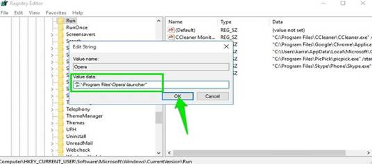
Hình 2 - 45
Cuối cùng đóng cửa sổ Registry lại và chương trình hoặc file mà bạn thêm sẽ khởi động cùng Windows.
2.6 Vô hiệu hóa các chương trình Startup
2.6.1. Sử dụng Startup Manager trên Windows
Windows tích hợp thêm Startup Manager trong danh sách tất cả các chương trình được thiết lập khởi động cùng Windows.
Trên Windows 8 và các phiên bản cao hơn, bạn có thể tìm thấy Startup Manager trên Task Manager.
Trên các phiên bản Windows cũ hơn, Startup Manager nằm trong tùy chọn "System configuration", bạn có thể truy cập bằng cách nhập "msconfig" vào cửa sổ lệnh Run.
Để truy cập Task Manager, bạn nhấn tổ hợp phím Ctrl + Shift + Esc. Trên cửa sổ Task Manager, bạn click chọn tab Startup, và bạn sẽ nhìn thấy tất cả các chương trình khởi động cùng Windows, bao gồm cả ứng dụng bạn đã thêm và các ứng dụng của bên thứ 3.
Rất đơn giản, chỉ cần kích chuột phải vào một chương trình bất kỳ mà bạn muốn vô hiệu hóa, sau đó chọn Disable.
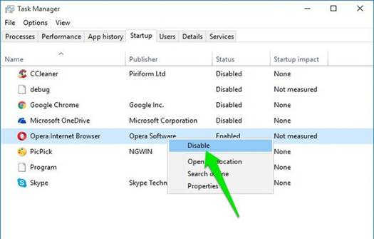
Hình 2 - 46 Giao diện Task Manager
Và chương trình hoặc tập tin đó sẽ ngừng khởi động cùng Windows.
2.6.2. Sử dụng ứng dụng Autoruns
Startup Manager được tích hợp trên Windows cho phép người dùng có thể vô hiệu hóa các chương trình khởi động cùng Windows. Tuy nhiên nếu muốn tùychỉnh nhiều hơn, bạn có thể nhờ đến sự hỗ trợ của ứng dụng thứ 3.
Ứng dụng thứ 3 mà Quản trị mạng muốn đề cập ở đây là Autoruns. Autoruns có thể thông báo cho bạn các chương trình hoặc tập tin được thiết lập khởi động cùng Windows.
Sau khi chạy Autorun, trên màn hình bạn sẽ nhìn thấy tất cả các chương trình khởi động cùng Windows và các tập tin cùng vị trí chính các của chương trình trên hệ thống hoặc trên Windows Registry.
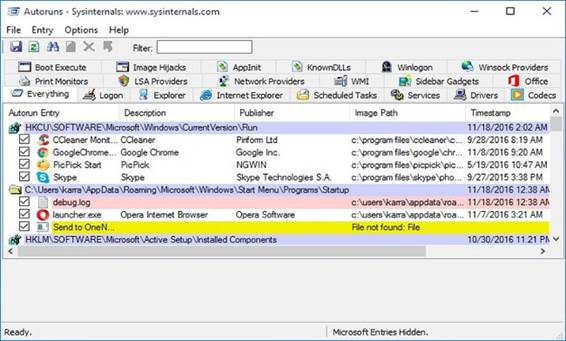
Hình 2- 47
Từ Menu Optinons, bạn có thể ẩn tất cả mục Microsoft và Windows để xem mục của các ứng dụng thứ 3 bằng cách đánh tích chọn các mục.
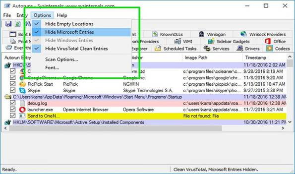
Hình 2 - 48
2.7 Sửa lỗi Full Disk 100% trên Windows
2.7.1. Xử lý phần Troubleshooting:
Các bạn vào Control Panel, gõ Troubleshooting trên ô tìm kiếm và chọn vào Items Troubleshooting.
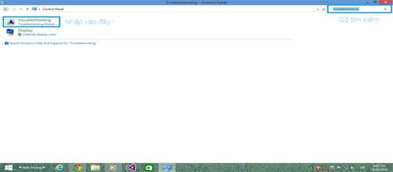
Hình 2 - 49. Giao diện Control Panel
Cửa sổ hiện ra, nhấn vào System and Security.
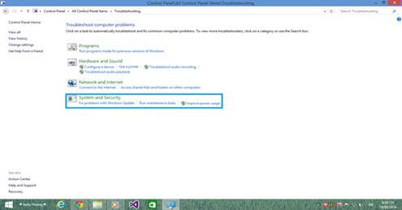
Hình 2 - 50. Giao diện System and Security
Cửa sổ mới hiện ra, chọn vào System Maintenance.
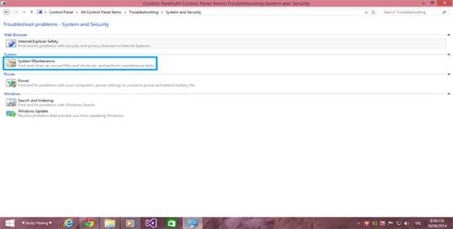
Hình 2 - 51. Giao diện System Maintenance
Thông báo hiện ra, bạn chọn Next.
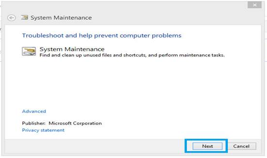
Hình 2 - 52.
Sau đó cứ để cho máy nó làm việc khi xuất hiện thông báo Systam Maintenance thì nhấn vào mục Try troubleshooting as an administrator.
Hình 2 - 53.
Và chờ cho nó chạy đến khi nào có chữ Close thì nhấp vào.
2.7.2. Tắt Maintenance:
Mở Action Center bằng cách click trái chuột vào lá cờ ở dưới Taskbar góc dưới bên phải, chọn Open Action Center.
Hình 2 - 54.
Tiếp theo click chuột vào mũi tên cho hướng lên như hình để hiện chi tiết hơn phần thiếp lập Maintenance, chọn Setting.
Hình 2 - 55. Giao diện Action Center
Sau đó, click vào Never check for solutions (not recommended)
Hình 2 - 56
Chọn OK.
2.7.3. Tắt Windows SmartScreen:
Cũng như tắt Maintenance, bạn vào Action Center, sau đó nhìn sang cột bên trái có mục Change Windows SmartScreen Settings, click chuột vào mục này
Hình 2 - 57.
Sau đó chọn Don’t do anything (turn off Windows SmartScreen)
Hình 2 - 58. Giao diện Windows SmartScreen
2.7.4. Tắt Service Super fetch:
Mở Task Manager (hoặc dùng tổ hợp phím tắt Ctrl + Shift + Esc). Chuyển qua tab Service, chọn Open Service. Cửa sổ Services hiện ra, tìm dịch vụ Super fetch (ấn S rồi tìm luôn cho tiện)
Hình 2 - 59.
Nhấp đôi chuột vào dịch vụ Super fetch, chọn Disable rồi OK -> Apply.
Hình 2 - 60. Dịch vụ Super fetch
2.7.5. Tắt Service Windows Search:
Vẫn ở Services, các bạn tìm Window Search (ấn W rồi tìm).

Hình 2 - 61
Rồi làm tương tự như cái Super fetch.
Hình 2- 62
Ấn OK -> Apply để lưu thay đổi.
Sau khi làm 5 cách trên các bạn khởi động lại máy tính, bật Task Manager kiểm tra xem còn bị Full 100% Disk không nhé.
Hình 2 - 63.
Lưu ý: Một số phần mềm hay hiện 100% Disk dù đã làm các bước vì phần mềm đó có thể là diệt viurs, lúc đó phần mềm quét Hệ thống nên 100% không đáng lo, đợi quét xong là hết...
2.7.6. Lỗi full Disk trên bản Windows 10 mới nhất (KB3201845):
Trước hết tại thanh tìm kiếm trên Windows, chúng ta gõ từ khóa command prompt, tiếp đến nhấp chuột phải command prompt chọn Run as admin, gõ vào WPR -cancel. Cuối cùng nhấn Enter là xong.
Hình 2- 64
2.8 Chuyển đổi Legacy BIOS sang UEFI trong Windows 10
Trong các phiên bản trước của Windows, bạn buộc phải cài đặt lại toàn bộ hệ điều hành nếu muốn chuyển đổi từ Legacy BIOS hoặc Master Boot Record (MBR) sang UEFI hoặc GUID Partition Table (GPT). Tuy nhiên, trong Windows 10, Microsoft đã giới thiệu một công cụ mới và vô cùng đơn giản có tên MBR2GPT, cho phép bạn chuyển đổi từ Legacy BIOS sang UEFI chỉ một cách dễ dàng bằng hai lệnh.
Dưới đây là cách để bạn có thể chuyển đổi từ Legacy BIOS sang UEFI trong Windows 10.
Hình 2 - 65. Giao diện BIOS
2.8.1 Những thông tin bạn cần nắm được
Mặc dù việc chuyển đổi từ Legacy BIOS sang UEFI trong Windows 10 rất dễ dàng, nhưng sẽ có một vài điều mà bạn nên biết và thực hiện trước khi bắt tay vào quá trình.
1. Sẽ không có hiện tượng thất thoát dữ liệu trong quá trình chuyển đổi từ Legacy BIOS sang UEFI. Tuy nhiên, để phòng ngừa, vui lòng sao lưu hệ thống của bạn trước khi tiến hành.
2. Bạn nên sử dụng phiên bản Windows 10 từ v1703 trở lên. Nếu bạn không chắc chắn về phiên bản Windows mà mình đang sử dụng là bao nhiêu, hãy nhấn Win + R, nhập từ khóa winver và nhấn Enter. Trên dòng thứ hai, bạn sẽ thấy phiên bản phiên bản 1703 hoặc cao hơn. Chẳng hạn, khi viết bài này, phiên bản Windows 10 đang sử dụng là v1809.
3. Ổ đĩa mà bạn đang cố gắng chuyển đổi không nên có nhiều hơn ba phân vùng. Nếu ổ đĩa của bạn có nhiều hơn ba phân vùng trên ổ đĩa cài đặt Windows 10, hãy hợp nhất hoặc xóa các phân vùng thừa.
Phân vùng để tạo ổ cứng thứ hai trên Windows
4. Nếu bạn đang sử dụng BitLocker để mã hóa hệ thống của mình, hãy giải mã ổ đĩa và tắt bảo vệ BitLocker trước khi bắt đầu quá trình chuyển đổi. Khi bảo vệ bằng BitLocker được bật, Windows 10 không thể chuyển đổi ổ đĩa của bạn từ Legacy BIOS sang UEFI.
5. Sau khi quá trình chuyển đổi hoàn tất, bạn có thể phải thay đổi cài đặt chương trình cơ sở của bo mạch chủ từ Legacy BIOS sang UEFI. Tùy thuộc vào nhà sản xuất bo mạch chủ của bạn mà quy trình chuyển đổi cũng sẽ có sự khác biệt. Hãy tìm và tham khảo hướng dẫn sử dụng bo mạch chủ từ nhà sản xuất để nắm được những thông tin cần thiết.
2.8.2 Kiểm tra xem bạn có đang sử dụng Legacy BIOS hay không
Điều cuối cùng mà bạn cần kiểm tra đó là xác định xem liệu bạn có đang sử dụng Legacy BIOS hay không, bởi nếu bạn đang sử dụng UEFI rồi thì việc tiến hành chuyển đổi là hoàn toàn vô giá trị.
Để kiểm tra, đầu tiên, bạn hãy tìm kiếm từ khóa “Create and format hard disk partitions” trong menu Start và nhấn Enter để mở công cụ quản lý đĩa tích hợp Disk Management. Bây giờ, nhấp chuột phải vào ổ đĩa mà bạn cài đặt Windows và chọn Properties.
Hình 2 - 66. Giao diện Disk Management
Trong cửa sổ Properties, bạn chuyển đến tab Volumes. Tại đây, nếu bạn thấy có Master Boot Record (MBR) nằm bên cạnh Partition style thì tức là bạn vẫn đang sử dụng Legacy BIOS.
2.8.3 Chuyển đổi Legacy BIOS sang UEFI
Sau khi bạn đã xác định được rằng hệ thống của mình vẫn đang sử dụng Legacy BIOS cũng như đã hoàn tất việc sao lưu hệ thống của mình như đã nói phía trên, bây giờ, bạn có thể bắt tay vào chuyển đổi từ Legacy BIOS sang UEFI.
1. Để bắt đầu quá trình chuyển đổi, bạn cần phải truy cập vào Command Prompt từ Windows start-up. Để làm được điều đó, hãy nhấn tổ hợp phím Win + X, click vào mục Shut down or sign out và giữ phím Shift đồng thời nhấp vào nút Restart để khởi động lại hệ thống của bạn vào chế độ Advanced Start-up.
Hình 2 - 67.
2. Tại màn hình Advanced Start-up, hãy điều hướng đến mục Troubleshoot -> Advanced Options, và chọn tùy chọn Command Prompt.
Hình 2 - 68.
3. Điều đầu tiên chúng ta cần làm là xác định rõ ổ đĩa mà chúng ta đang cố gắng chuyển đổi. Hãy nhập lệnh dưới đây và nhấn Enter.
mbr2gpt /validate
Nếu bạn thấy có xuất hiện thông báo Validation completed successfully (xác thực đã thành công), hãy chuyển sang bước tiếp theo.
Hình 2 - 69.
4. Sau khi đĩa cần chuyển đổi đã được xác định, hãy thực thi lệnh dưới đây: mbr2gpt /convert
Ngay sau khi lệnh được thực thi, Windows 10 sẽ bắt đầu quá trình chuyển đổi, tức là nó sẽ tự động thêm tất cả các tệp khởi động UEFI và các thành phần GPT cần thiết, sau đó cập nhật Boot Configuration Data (dữ liệu cấu hình khởi động).
Hình 2 - 70.
5. Bây giờ, hãy khởi động lại hệ thống của bạn, khởi chạy màn hình cài đặt hệ thống của bo mạch chủ và thay đổi nó từ Legacy BIOS sang UEFI. Quy trình thay đổi từ Legacy BIOS sang UEFI cụ thể ra sao sẽ tùy thuộc vào nhà sản xuất bo mạch chủ mà bạn đang sử dụng. Hãy tham khảo hướng dẫn sử dụng từ nhà sản xuất để thực hiện các bước sao cho chính xác.
6. Sau khi khởi động lại vào Windows 10, bạn có thể xác minh xem Legacy BIOS đã được sang UEFI hay chưa. Cũng giống như ở những bước đầu, hãy truy cập vào mục Properties của Disk Management, điều hướng đến tab Volumes. Tại đây, bạn sẽ thấy bảng phân vùng GUID (GPT) xuất hiện bên cạnh kiểu phân vùng của Google.
Trên đây là các bước để chuyển đổi Legacy BIOS sang UEFI trong Windows 10. Hãy chia sẻ suy nghĩ và kinh nghiệm của bạn về việc sử dụng phương pháp này để chuyển đổi Legacy BIOS sang UEFI trên hệ thống của bạn ở phần nhận xét bên dưới nhé!
3. Chuẩn đoán và xử lý sự cố HĐH
3.1. Quản trị tài khoản người dùng
- Hiện tượng Logon-off
- Lỗi do Virus.
- Một số Virus khiến máy của chúng ta không Logon được vào Windows.
- Nguyên nhân: Là do virus làm cho giá trị Userinit trong khóa …\Windows\System32 bị thay đổi.
- Giá trị mặc định của Userinit là: C:\WINDOWS\System32\Userinit.exe
- Lỗi do người dùng.
- Cách khắc phục:
- Khởi động máy với đĩa cài Windows 7.
- Lựa chọn ngôn ngữ rồi bấm Next
- Bấm chọn: Repair your computer
- Chọn phiên bản windows 7 -> bấm Next -> Bấm Startup Repair ->Bấm Finish -> Bấm Restart
- Quên Password và tài khoản bị Disable
- Sự cố quên Password là sự cố người dùng thường xuyên gặp phải.
- Tài khoản bị Disable cũng gây rất nhiều rắc rối cho người dùng.
- Khắc phục trường hợp quên Password và Disable Accont
- Cả 2 trường hợp trên đều có thể sử dụng đĩa Hiren’s Boot để xử lý.
Hình 2 - 71.
- Lựa chọn Account cần tiến hành thao tác.
- Chọn các Option mà chúng ta cần thao tác.
Hình 2 - 72.
3.2. Những lỗi thuộc về hệ thống
- Add or Remove Programs (Windows XP)
- Xuất hiện thông báo chương trình đã bị hạn chế quyền sử dụng.
- Không thấy các chương trình đã được cài đặt.
Hình 2 - 73.
- Khắc phục trường hợp Add or Remove Progtams không sử dụng được.
- Sử dụng GPO để khắc phục tình trạng trên.
Hình 2 - 74.
- Không thấy Control Panel (Windows 7): sử dụng GPO khắc phục
- Vào Start gõ gpedit.msc vào khung tìm kiếm
- Trong User Configuration → Administrative Templates→ Control Panel→ Click đúp Prohibit Access to the Control Panel → Click Not Configured → Click Apply
Hình 2 - 75.
- System Restore
- Cho phép sao lưu lại Registry và các tập tin hệ thống quan trọng một cách thường xuyên và tự động.
Hình 2 - 76.
- Khắc phục tình trạng không sử dụng được SR.
- Người dùng phải đăng nhập sang User có quyền Administrator.
- Dung lượng ổ cứng
- Quét virus nếu hệ thống bị lây nhiễm.
- Device
- Xung đột Driver dẫn đến hoạt động thiếu ổn định. Nguyên nhân thường là: Không gỡ bỏ trình điều khiển thiết bị cũ.
- Khắc phục xung đột Driver.
- Khi nâng cấp phần cứng nên gỡ bỏ đi những driver của các phần cứng cũ.
- Tiến hành Update, backup, khôi phục driver phù hợp.
- Services and Application
- Một số các services trong Windows không hoạt động được.
Khi chạy một số ứng dụng nào đó hiện thông báo lỗi.
- Nguyên nhân do các services bị ngưng hoạt động.
Hình 2 - 77.
- Khắc phục các Services bị ngưng hoạt động.
- Start Menu -> Run -> Services.msc.
- Tìm tới các Services bị ngưng hoạt động, click đúp và chọn Enable
Hình 2 - 78.
3.3. Qui trình, phương pháp và nguyên tắc xử lý sự cố Hệ điều hành
Xác định được lỗi nếu do không ổn định thì cần phải có thời gian kiểm tra và theo dõi chặt chẽ.
- Yêu cầu người sử dụng thực hiện lại từng bước để kiểm tra.
- Tách nhiều thao tác phức tạp thành các thao tác đơn giản và thử từng thao tác.
- Chú ý thông báo lỗi để hiểu thêm về chi tiết lỗi.
- Kiểm tra các vấn đề khác liên quan đến người sử dụng như: Profile của user hiện tại, quyền hạn của User trên máy và trên hệ thống mạng nếu có…
- Kiểm tra các chương trình của hệ điều hành trước, sau đó đến các chương trình phụ về tính xung đột giữa các chương trình với nhau.
- Cập nhật hoặc cài lại driver mới cho các thiết bị.
- Có thể cài đặt các phiên bản mới hơn để khắc phục sự cố.
- Cập nhật các file vá lỗi của chương trình.
- Quét virus nếu phát hiện dấu hiệu khả nghi.
- Cài lại hệ điều hành nếu hệ thống có quá nhiều lỗi hoặc lỗi không thể khắc phục dù đã thử nhiều cách khác nhau.
Nội dung ôn tập
- Vân dụng thành thạo các lệnh hệ thống MS-DOS xử lý sự cố hệ điều hành MS Windows.
- Thiết lập môi trường làm việc, cập nhập tính năng mới, bảo vệ hệ thống.
- Chuẩn đoán và khắc phục sự cố hệ điều hành MS Windows.
Bài tập tình huống
- Khi Shutdown, không thấy chọn lựa Hibernate. Làm sao để kích hoạt tính năng Hibernate?
- Máy tính đang dùng đột nhiên bị treo hoặc khởi động lại. Cho biết nguyên nhân và cách khắc phục?
- Máy tính bị mất Password, làm cách nào để có thể đăng nhập trở vào Windows.
- Tùy vào lỗi cụ thể sẽ có hướng giải quyết khác nhau, nhưng phải
- Bạn làm gì khi máy tính bỗng nhiên chạy chậm lại? Nêu tất cả các nguyên nhân có thể khiến máy tính hợt động chậm.
Bài 3.
XỬ LÝ SỰ CỐ PHẦN MỀM VĂN PHÒNG
Mục tiêu: Sau khi học xong chương này, người học có khả năng
- Trình bày được nguyên tắc hoạt động của những phần mềm văn phòng.
- Xác định được tính tương thích của phần mềm đối với hệ thống.
- Cài đặt các phần mềm văn phòng theo đúng yêu cầu sử dụng.
- Thiết lập các thông số làm việc cho ứng dụng văn phòng.
- Chuẩn đoán và xử lý được các lỗi liên quan đến cái đặt.
- Chuẩn đoán và xử lý được các lỗi thông dụng của phần mềm văn phòng.
- Xử lý được các lỗi liên quan đến những phần mềm văn phòng.
- Tính chính xác, tỉ mỉ, cẩn thận.
- Rèn luyện tinh thần tuân thủ kỷ luật trong công việc
Nội dung chính:
1. Các nhóm phần mềm, vai trò, chức năng của các nhóm, ứng dụng thực tiễn.
1.1. MS Office
- Là những phần mềm hỗ trợ giải quyết các công việc văn phòng một cách nhanh chóng, hiệu quả và chuyên nghiệp.
- Ứng dụng của MS-Office
- Dùng để soạn thảo văn bản, quản lý bảng tính, tạo file trình chiếu,…
- Một sô bộ phần mềm thông dụng
- MS-Office profesional 2003, 2007, 2010
- OpenOffice
- WordPerfect OFFICE X4
1.2. Phần mềm đồ họa
- Là những phần mềm có tính đột phá về phương diện thiết kế, tạo mẫu, xử lý ảnh… giúp cải thiện, nâng cao những tác phẩn nghệ thuật.
- Ứng dụng.
- Dùng để chỉnh sửa ảnh, vẽ logo, vẽ kiến trúc, làm phim hoạt hình,…
- Một số phần mềm thông dụng.
- Phần mềm xứ lý ảnh (Adobe Photoshop).
- Phần mềm thiết logo CorelDRAW
- Phần mềm thiết kế kiến trúc (AutoCAD).
1.3. Phần mềm Multimedia
- Là các phần mềm đa phương tiện
- Ứng dụng của phần mềm đa phương tiện
- Dùng để xem phim, nghe nhạc, xem hình ảnh, chỉnh sửa phim,…
- Một số phần mềm thông dụng
- Phần mềm Windows Media player
- Phần mềm Jetaudio
- Phần mềm Winnap
1.4. Phần mềm kế toán
- Giúp cho công việc của những người làm kế toán được chính xác
và nhanh chóng.
- Ứng dụng của phần mếm kế toán.
- Giúp thực hiện nghiệp vụ kế toán, lập tờ khai, báo cáo thuế,…
- Một số phần mềm kế toán thông dụng.
- Phần mềm Acsoft.
- Phần mềm kế toán Việt Nam
- Phần mềm P2D
- Phần mềm Hỗ trợ kê khai thuế.
1.5. Các phần mềm phổ dụng khác
- Tối ưu hóa hệ thống.
- Ứng dụng.
- Phòng chống Virus, Backup OS, Backup Driver, Backup hệ thống tránh những thay đổi không cần thiết, tối ưu hóa máy tính, bảo vệ dữ liệu,…
- Một số phần mềm thông dụng
- Phần mềm Anti-Virus
- Tiện ích Ghost
- Phần mềm Driver Genius
- Phần mềm Tune-Up
- Phần mềm Hide Folders
- Một số phần mềm khác
- Quản lý kho
- Quản lý khách sạn
- Điều khiển tự động…
2. Cài đặt, cấu hình và vận hành
2.1. MS Office
- Các bước cài đặt MS-Ofice 2010
Bước 1: Chạy File Setup từ bộ cài
Hình 3 - 1.
Bước 2: Nhập Key từ file Serian và chọn Continue

Hình 3 - 2.
Bước 3: Bảng điều khoản và điều kiện của Microsoft hiện lên bạn cần tick vào I accept the terms of this agreement để đồng ý rồi click vào Continue để tiếp tục.
Hình 3 - 3.
Bước 4: Click Install now để bắt đầu cài đặt
Hình 3- 4
Bước 5: Sau khi quá trình cài đặt kết thúc Click Close để kết thúc.
Hình 3 - 5
- Cấu hình thông số MS-Office 2010
MS-Word: Word Options àPage Setup
MS-Excel: Excel Options àFormat -> Cells àPage Setup
MS-Power point: PowerPoint Options àPage Setup àPrint
- Cấu hình OP-Office
OP-Writer: Tools -> Options à Format -> Page
OP-Calc: Tools -> Options àFormat -> Cells à Format -> Page
OP-Impress: Tools -> Options à Format -> Page
OP-Base: Tools -> Options
Hình 3 - 6
2.2. Các phần mềm phổ dụng khác
Tải phần mềm Foxit Reader
BƯỚC 1: Truy cập vào websitehttp://www.foxitsoftware.com (hoặc vào trang) www.Google.com.vn tìm từ khóa “Foxit reader”
BƯỚC 2: Chọn “Free Download” để tải phần mềm về máy tínhHoặc click vào link download trực tiếp để tải bộ cài đặt phần mềm về máy tính:
http://cdn01.foxitsoftware.com/pub/foxit/reader/desktop/win/4.x/4.1/enu/FoxitReader411_enu_Setup.exe.
BƯỚC 3: Sau khi tải phần mềm cài đặt về máy, bạn thực hiện việc cài đặt phần mềmvới các thao tác rất đơn giản.
Cài đặt phần mềm Foxit Reader
Bước 1. Click đúp vào tập tin cài đặt, màn hình sẽ hiện ra như sau
Hình 3 - 7
Bước 2. Nhấn “Next”
Hình 3 - 8.
Bước 3. Chọn “I accep the term in the License Agreement” và nhấn “Next”
Hình 3 - 9.
Bước 4. Chọn “I accept”
Hình 3 - 10.
Bước 5. Chọn “Default” và nhấn “Next”
Hình 3 - 11
Bước 6. Nhấn “Install”
Hình 3 - 12
Hoàn tất cài đặt
3. Những lỗi thường gặp khi sử dụng phần mềm văn phòng
3.1. Lỗi trong quá trình cài đặt, sử dụng
Sự cố khi cài đặt
- Cấu hình máy tính không phù hợp
- Xác định yêu cầu về phần cứng trước khi cài đặt phần mềm.
- Hệ điều hành không hỗ trợ
- Xác định yêu cầu về hệ điều hành.
- Xác định các gói cần cài trước khi cài đặt chương trình.
- Thiếu Driver VGA hoặc Driver Sound,…
- Cài đặt các Driver của các thiết bị trước khi cài phần mềm.
- Tranh chấp các Files .DLL với các chương trình cài đặt sẵn trên máy
- Xác định các Versison của các phần mềm càn cài đặt chung.
- Đảm bảo rằng các phần mềm có Versison mới luôn được cài đặt sau.
- Bộ đĩa cài đặt bị lỗi
- Sử dụng đĩa cẩn thận tránh trầy xước
- Luôn chuẩn bị một bộ đĩa tốt và đầy đủ.
Sự cố sử dụng
*Khi gõ văn bản trong MS-Word xảy ra lỗi như dưới
Nguyên nhân: Do người dùng đang thiết lập chức năng “Smart cut and paste”.
Khắc phục: Option -> Edit tại mục “Smart cut and paste” chọn Settings và bỏ chọn mục :Adjust sentence and word spacing automatically”.
*Khi gõ văn bản trong MS-Word xảy ra lỗi như hình dưới
Nguyên nhân: Chế độ kiểm tra lỗi chính tả đang được bật
Khắc phục: Vào Options → Spelling and Grammer →Spelling bỏ chọn các mục: Check spelling as you type
*Nhập ngày tháng năm bị lỗi

Hình 3 - 13.
Nguyên nhân: Do định thiết lập ngày tháng năm trên Windows và trong Excel không đồng bộ.
Khắc phục:
- Thiết lập trong Regional and language: Regional Options →Customize → Date và chỉ lại mục “ Short date format” thành “dd/mm/yyyy”.
- Thiết lập lại trong MS-Excel: Format Cells → Number → Custom và gõ vào mục Type “dd/mm/yyyy”.
*Không hiển thị kết quả mà chỉ hiển thị công thức hoặc hiển thị một con số thay vì ngày tháng năm.
Hình 3 - 14.
Khắc phục: MS-Office 2003, 2007, 2010: Vào File → Options → Advanced → Display options for this wordsheet bỏ mục chọn Show formulas in cells instead of their calculated resulte
- Sự cố liên quan đến bộ gõ
- Bộ gõ không phù hợp
- Kiểu gõ không phù hợp với Font chữ
- Font chữ bị lỗi
Khắc phục:
- Chọn bộ gõ phù hợp với hệ điều hành để cài
- Thiết lập lại kiểu gõ phù hợp với Font chữ.
- Cài lại các Font chữ bị lỗi
- Các lỗi về Font chữ
- Cấu hình ngôn ngữ trong Regional Language Options không phù hợp
*Thiếu Font chữ
Hình 3 - 15
Khắc phục:
- Chỉnh lại ngôn ngữ trong Regional Language Options
- Cài đặt, chọn font chữ thay thế phù hợp, hoặc chuyển đổi Font.
* Không khởi động được các ứng dụng MS-Office
Hình 3 - 16
Nguyên nhân:
- MS-Office ở một User khác với User chúng ta cài đặt.
- Một số Files chương trình bị lỗi
- Folder MSOCache bị xóa
Khắc phục:
- Dùng đĩa cài đặt và trỏ tới file chương trình yêu cầu để khắc phục.
- Không xóa thư mục MSOCache sau khi cài đặt.
- Chép đè Profile của User cài đặt lên Profile của User hiện tại
3.2. Lỗi trong quá trình In ấn
Hình 3- 17
*Tài liệu chỉ in được một trang duy nhất
Nguyên nhân:
- Do chúng ta hay ai đó đã thiết lập Print Area. Khắc phục:
- MS-Office 2003: Chọn File -> Print Area -> Clear Print Area.
- MS-Office 2007: Nhắp phím phải vào tài liệu và chọn Reset Print Area.
- MS-Office 2010: Chọn Page Layout -> Print Area -> Clear Print Area
*Tài liệu in được chia thành nhiều trang
Hình 3 - 18
Nguyên nhân: Do chúng ta hoặc ai đó đã Insert Page Break không đúng chỗ.
Khắc phục: Click phím phải chuột tại vị trí Page Break chọn Remove Page Break.
*Sự cố không tìm thấy máy in
Khắc phục:
- Kiểm tra lại dây kết nối giữa máy tính với máy in.
- Kiểm tra nguồn điện cấp cho máy in.
- Kiểm tra xem trong ứng dụng mình đang in tới máy in nào.
*Ứng dụng báo không có máy in
Khắc phục:
- Kết nối may in với máy tính
- Cài đặt Driver cho máy in.
Ôn tập
1. Hãy nêu vai trò, tầm quan trọng cà ứng dụng của các phần mềm ứng dụng trong bộ MS-Office.
2. Ngững nguyên nhân chủ yếu dẫn đến các sự cố: Không chạy được ứng dụng, không mở được file.
3. Hãy nêu những điểm cần lưu ý khi cài đặt ứng dụng.Nêu một số ứng dụng giúp chuyển đổi các files văn bản và bảng tính thành file PDF.
Bài tập tình huống
1. Cấu hình cho các tài liệu Word lưu trữ vào thư mục “Word” nằm bên trong thư mục My Documents.
2. Thiết lập ngắt trang và vùng cần in cho tài liệu Excel.
3. Tạo một Slide Master và Layout cho tập tin trình chiếu MS-PP.
4. Taph một Template riwwng cho mình trên MS-PP.
5. Hãy tư vấn cho khách hàng mua một bộ máy tính dùng cho việc thiết kế đò họa với chương trình Photoshop CS 4.
Bài 4.
XỬ LÝ SỰ CỐ SỬ DỤNG INTERNET
Mục tiêu: Sau khi học xong bài này, người học có khả năng
- Trình bày được nguyên tắc hoạt động của hệ thống internet.
- Rèn luyện kỹ năng tìm kiếm thông tin trên internet
- Xử lý được các lỗi liên quan đến internet.
- Tính chính xác, tỉ mỉ, cẩn thận.
- Rèn luyện tinh thần tuân thủ kỷ luật trong công việc
Nội dung chính:
1. Xử lý sự cố cơ bản về kết nối
1.1. Lỗi do không kết nối vào mạng
Trong quá trình kết nối mạng quả thực có rất nhiều vấn đề phát sinh, tuy nhiên làm thế nào để vượt qua được chúng? Đó chính là những gì chúng tôi muốn giới thiệu cho các bạn trong phần này - Một số mẹo khắc phục sự số kết nối mạng Windows.
Đây là vấn đề rất hay gặp phải khi thiết lập một máy tính mới hoặc nâng cấp phiên bản Windows mới của một máy tính cũ. Hiện tượng không có kết nối có thể xuất phát từ nhiều nguyên nhân, do đó chúng ta hãy đi xem xét một số vấn đề tiềm ẩn và giải pháp khắc phục chúng.
Những vấn đề sau khi nâng cấp Windows : Việc cài đặt một phiên bản hệ điều hành Windows mới trên một máy tính nào đó có thể phá vỡ kết nối mạng. Bạn có thể bắt gặp nhiều vấn đề khác nhau, những vấn đề này phụ thuộc vào việc bạn nâng cấp hay thực hiện một cài đặt mới hoàn toàn.
Nếu nâng cấp máy tính từ hệ điều hành Windows XP lên Windows 7, rất có thể bạn sẽ phải cài đặt lại driver cho phần cứng mạng; vấn đề này hay xảy ra đối với kết nối Wi-Fi. Phương pháp tốt nhất để giải quyết vấn đề này là download driver mới từ website của nhà sản xuất hệ thống hoặc bo mạch chủ trước khi thực hiện nâng cấp hệ điều hành. Một cách khác là bạn có thể tìm kiếm trong CD đi kèm với bo mạch chủ hoặc hệ thống của bạn driver phù hợp.
IPv6 và IPv4: Chúng ta có thể gặp vấn đề kỳ lạ này khi cài đặt hệ thống mới. IPv4 (hay IP version 4) chính là hệ thống định địa chỉ giao thức Internet được sử dụng phổ biến hiện nay. Trong khi đó IPv6 là phiên bản kế tiếp của kiểu định địa chỉ này và vấn đề ở đây là nó chưa phổ biến.
Có rất nhiều trường hợp gặp phải là bạn có một số máy tính chỉ sử dụng IPv4. Trong khi đó Windows 7 có thể thực thi cả IPv6 và IPv4. Nếu đơn giản cho rằng một máy tính có thể chạy cả hai giao thức IPv6 và IPv4 sẽ có thể kết nối với hệ thống chỉ sử dụng IPv4 là hoàn toàn sai lầm. Máy tính đang sử dụng cả hai giao thức sẽ không dễ dàng kết nối với máy tính đang sử dụng IPv4. Để khắc phục vấn đề này, bạn cần nâng cấp hệ thống để chúng có thể sử dụng cả hai giao thức IPv6 và IPv4.
Laptop thất bại khi kết nối : Khoảng 90%, vấn đề này xảy ra do phần cứng Wi-Fi của laptop chưa được kích hoạt.
Nhiều laptop có nút bật và tắt chức năng Wi-Fi để tiết kiệm pin cho máy tính rất dễ quan sát. Tuy nhiên trong một số model lại sử dụng phần mềm để thực hiện chức năng này.
Nếu không thể kết nối, thông thường bộ khắc phục sự cố của Windows, Windows network troubleshooter, sẽ được khởi chạy và bạn có thể thực hiện theo các nhắc nhở của nó. Nếu chương trình này bảo cho biết rằng phần cứng không dây của laptop bị tắt, bạn cần phải tìm ra cách bật nó trở lại như thế nào. Phương pháp thực hiện cụ thể đối với mỗi laptop rất khác nhau do đó chúng tôi sẽ không chỉ ra ở đây. Tiện ích của Windows này có thể tắt hoặc bật phần cứng không dây nếu laptop sử dụng phần mềm để thực hiện công việc này.10% còn lại là không thể kết nối với mạng chạy dây. Nguyên nhân ở đây có thể là do rất nhiều laptop đã bị vô hiệu hóa tính năng kết nối mạng chạy dây này. Nếu rơi vào trường hợp như vậy, chúng ta phải tự kích hoạt chức năng mạng chạy dây trong giao diện quản lý nguồn của Windows, trong applet 'System and Security&apos.
Disable Local Area Connection: Nguyên nhân ở đây là do máy tính bị khóa tính năng kêt nối mạng. Trong trường hợp xảy ra tình trạng này chúng ta phải Enable lại tính năng này bằng cách vào thư mục Networking Connections của bạn (hoặc trên biểu tượng kết nối tren khay hệ thống của bạn) và chọn Enable từ menu chuột phải.
1.2. Các lỗi do thiết bị mạng
Card mạng (NIC): Nguyên nhân ở đây có thể do chưa có trình điều khiển Driver của thiết bị, trong trường hợp này ta có thể tìm kiếm Driver và cài đặt cho nó. Nếu trong trường hợp NIC của chúng ta bị hư hỏng phải thay thế Card NIC khác.
Modem: Trong trường hợp này ta có thể kiểm tra lại các thông số của Modem và Reset lại chúng. Nếu trong trường hợp do modem bị hư hỏng ta phải thay thế modem mới.
Nếu trong trường hợp nguyên nhân là do hệ thống Cable tín hiệu, ta có thể kiểm tra và thay thế bằng dây Cable tín hiệu khác.
2. Xử lý sự cố liên quan trình duyệt Web
2.1. Lỗi truy cập vào Website
Đang duyệt web bình thường, bỗng nhiên trình duyệt web lại xuất hiện 1 thông báo với những thông tin rắc rối và bạn không thể duyệt web như bình thường nữa. Dưới đây là những thông báo lỗi mà bạn thường gặp nhất khi truy cập vào 1 trang web và cách thức để giải quyết vấn đề nếu chúng xảy ra.
*404: Not Found
Hình 4.1.
- Lỗi 404 Not Found hiện ra bên trong cửa sổ trình duyệt Internet trong quá trình bạn lướt web. Thông báo lỗi 404 Not Found thường được thiết kế riêng trong từng website, mỗi một trang web sẽ có 1 hình thức thông báo khác nhau cho lỗi này, tuy nhiên thường gặp nhất sẽ là những thông báo có nội dung như: "404 Error", "Page cannot be displayed", "Internet Explorer cannot display the webpage", "404: Not Found", "The page cannot be found", "Error 404: NOT FOUND", "HTTP 404 - File not found", "Not Found"…
Nguyên nhân: Lỗi 404 Not Found xuất hiện khi trang web bạn truy cập không thể tìm thấy trên server.
Khắc phục:
1. Nhấp chuột vào nút refresh/reload trên cửa sổ trình duyệt hay gõ lại địa chỉ URL trên thanh địa chỉ. Lỗi 404 Not Found xuất hiện ngay cả khi không có vấn đề gì thực sự xảy ra, nên thực hiện các công việc trên để load lại trang web có thể khắc phục được lỗi.
2. Kiểm tra địa chỉ URL: Đôi khi có khả năng lỗi 404 Not Found xuất hiện vì địa chỉ URL bị gõ sai hay đường link bạn nhấp chuột vào dẫn đến một địa chỉ sai. Kiểm tra lại thật kỹ để đảm bảo rằng không có sai sót nào trong đường dẫn (chẳng hạn như 1 ký tự trắng thừa...)
3. Lùi một mức địa chỉ URL cho đến khi bạn thấy cái gì đó. Chẳng hạn, nếu địa chỉ của website là www.trangweb.com/a/b/c.htm xuất hiện lỗi 404 Not Found, hãy thử truy cập www.trangweb.com/a/b/. Nếu vẫn xuất hiện lỗi trên, hãy thử www.trangweb.com/a/. Việc này giúp bạn tìm kiếm hay ít nhất giúp bạn xác nhận địa chỉ trên còn tồn tại hay không.
4. Truy cập trang web http://downforeveryoneorjustme.com, điền địa chỉ trang web xuất hiện lỗi 404: Not Found vào công cụ tìm kiếm này, và nó sẽ nói cho bạn biết hoặc website không còn tồn tại (nghĩa là lỗi 404: Not Found xảy ra thật) hay vấn đề ở phía bạn (do đường truyền hoặc do 1 lý do nào đó).
*500: Internal Server Error
Tương tự như lỗi 404: Not Found, lỗi 500: Internal Server hiện ra trong cửa sổ trình duyệt trong quá trình duyệt web. Thông báo "500
Internal Server Error" có thể được thiết kế bởi từng website. Tuy nhiên, những nội dung thông báo chính vẫn sẽ chứa đụng các thông tin sau: "500: Internal Server Error", "HTTP Error 500 - Internal Server Error", "500 Error"...
Hình 4.2
Nguyên nhân: Lỗi 500 Internal Server báo hiệu có gì sai sót ở server của website hoặc server không thể xác định vấn đề chính xác là gì.
Khắc phục: 500 Internal Server là lỗi ở phía server, không phải tại máy tính hay đường truyền Internet của bạn. Dù vậy có vài điều bạn có thể làm:
1. Nhấp chuột vào nút refresh/reload trên cửa sổ trình duyệt hay gõ lại địa chỉ URL. Bởi vì lỗi 500 Internet Server Error thường mang tính chất tạm thời, nên tiến hành load trang lui lại nhiều lần có thể khắc phục được.
2. Nếu bạn không thể đợi hay bạn có thể giúp, hãy thử liên lạc với webmaster (người chủ) của trang web đó nếu biết được email liên lạc của họ.
*403: Forbidden
Như trên, lỗi 403 Forbidden hiện ra trong cửa sổ trình duyệt và cũng thường được thiết bởi từng website.
Hình 4.3
Nguyên nhân: Do chúng ta không có quyền truy cập vào trang này, vì lý do bảo mật hoặc khác. Nói chung là người quản lý trang Web này không muốn cho chúng ta truy cập vào trang này của họ. có thể nói chung là nó bị khóa. Người ngoài không bị truy cập.
Khắc phục:
1. Lý do phổ biến nhất là do sai địa chỉ URL. Hãy kiểm tra địa chỉ
URL và chắc chắn là bạn đúng.
2. Nếu bạn chắc trang web bạn truy cập là đúng, thì lỗi 403
Forbidden có thể là nhầm lẫn. hãy thử liên lạc với webmaster hoặc các trang web khác để thông báo vấn đề.
3. Ngoài ra, có thể bạn đang cố gắng vào 1 trang web mà quyền truy cập chỉ dành cho những ai có thẩm quyền. Trong trường hợp này, không còn cách nào khác là đành phải truy cập vào trang web khác.
*503 Service Unavailable
Hình 4.4
Tương tự như lỗi 500 ở trên, lỗi 503 là lỗi tạm thời xảy ra khi trang web ngừng hoạt động hay server để chứa trang web đang có vấn đề tạm thời. Khi gặp lỗi này, cách duy nhất của bạn là đợi 1 thời gian rồi quay lại trang web này hoặc chờ cho đến khi trang web và server hoạt động lại bình thường.
*408 Request Timeout
Nguyên nhân: Lỗi 408 Request Timeout xảy ra khi yêu cầu bạn gửi đến server của trang web mất 1 thời gian quá lâu để nhận được hồi đáp, nghĩa là trang web bạn yêu cầu không thể tải xuống trình duyệt web hiện tại thì lỗi này sẽ xuất hiện. Nói cách khác, kết nối của bạn đến website sẽ bị “time out”. Lỗi thường xảy ra khi tốc độ kết nối Internet của bạn quá chậm hay bị chiếm phần nhiều tốc độ bởi 1 công việc khác.
Khắc phục:
1. Cách khắc phục đơn giản nhất là thử reload lại trang web bằng cách nhấn Refresh trên cửa sổ trình duyệt cho đến khi trang web được load thành công.
2. Vấn đề có thể xảy ra với kết nối Internet của bạn. Để chắc chắn, hãy thử truy cập vào 1 trang web khác để kiểm tra xem tốc độ Internet có ổn định hay không. Nếu tốc độ truy cập vào các trang web khác vẫn đạt tốc độ bình thường, có thể lỗi phát sinh do phía website và server cung cấp.
3. Mặt khác, nếu tất cả các trang web đều truy cập rất chậm, vấn đề là do đường kết nối Internet của bạn. Hãy kiểm tra lại có phần mềm nào đang tự động update hay download hay không. (các chương trình này sẽ chiếm hết đường truyền Internet khiến việc truy cập bị ảnh hưởng).
4. Ngoài ra, lỗi 408 Request Timeout thường xảy ra đối với các trang web có lượng truy cập lớn, khiến việc truy cập của bạn sẽ bị cản trở và ảnh hưởng. Trong trường hợp này, hãy kiên nhẫn đợi chờ những người khác sẽ rời trang web để nhường chỗ cho bạn ghé thăm.
2.2. Lỗi liên quan đến add-ons,…
Add-on thường mang lại hiệu quả trong sử dụng, tuy nhiên đôi khi chúng lại làm lỗi trình duyệt của bạn một cách ngoài mong đợi. Điều này có thể xảy ra nếu add-on nào đó được tạo cho một phiên bản trình duyệt trước hoặc có một lỗi chương trình.
Đây là những gì bạn có thể thực hiện nếu gặp phải vấn đề này:
- Vô hiệu hóa nó: Nếu một add-on nào đó gây ra các vấn đề mang tính lặp đi lặp lại, hãy vô hiệu hóa nó bằng Add-on Manager.
Trước khi bạn vô hiệu hóa một add-on trình duyệt, cần phải lưu ý rằng một số trang web hoặc bản thân trình duyệt cũng có thể hiển thị không đúng cách nếu add-on nào đó bị vô hiệu hóa. Chúng tôi khuyên các bạn chỉ nên vô hiệu hóa các add-on nào nếu luôn làm lỗi Internet Explorer.
Sau đây là cách vô hiệu hóa một Add-on
- Mở trình duyệt bằng cách lích nút Start.
- Kích Toos sau đó kích Manage Add ons.
- Trong phần Show, kích All add-ons.
- Kích Add-on muốn vô hiệu hóa, sau đó kích Disable.
- Lặp lại cho mỗi add-on khác, khi kết thúc kích OK
- Báo cáo. Khi được nhắc nhở, bạn nên báo cáo vấn đề với nhà cung cấp trình duyệt. Báo cáo này hoàn toàn mang tính nặc danh và không yêu cầu những vấn đề phức tạp nào. Các báo cáo này sẽ được nhà cung cấp trình duyệt sử dụng để cải thiện các sản phẩm của họ và khuyến khích các công ty khác nâng cấp và cải thiện các sản phẩm của họ.
2.3. Lỗi bảo mật trình duyệt
Vấn đề bảo mật ứng dụng Web không phải là một vấn đề mới. Thực tế là phần lớn các vấn đề đã được hiểu rõ trong nhiều thập kỷ qua. Tuy nhiên do nhiều lý do, khá nhiều dự án phát triển phần mềm vẫn còn mắc phải những lỗ hổng này và đe dọa không chỉ đến độ an toàn cho khách hàng, mà còn ảnh hưởng chung đến an toàn của hệ thống Internet. Do tính chất phức tạp của ứng dụng, hiện nay không có một giải pháp tuyệt đối cho vấn đề này. Tuy nhiên các giải pháp sau được đề nghị để giảm thiểu các rủi ro liên quan đến bảo mật của ứng dụng web:
- Các tiêu chí về bảo mật phải được đặt ra ngay từ lúc thiết kế ứng dụng nhằm phát triển các module bảo vệ ngay từ giai đoạn đầu của quá trình phát triển ứng dụng.
- Một văn bản chính thức thiết lập chính sách bảo mật ứng dụng nên được xây dựng nhằm cung cấp một chuẩn tối thiểu về bảo mật cho toàn ứng dụng.
- Thường xuyên cập nhật kiến thức bảo mật cho lập trình viên.
- Sử dụng dịch vụ đánh giá bảo mật của một công ty ngoài để kiểm tra tính bảo mật của ứng dụng.
- Sử dụng các công cụ dò và phát hiện lỗi của ứng dụng (Các công cụ proxy dùng cho mục đích đánh giá bảo mật ứng dụng web: Paros Proxy: http://www.parosproxy.org, Webscarab: http://www.owasp.org, Proximitron: http://www.proximitron.info)
- Cập nhật các phần mềm máy chủ web với các phiên bản vá lỗi bảo mật mới nhất.
- Sử dụng các thiết bị tường lửa ứng dụng web để bảo vệ ứng dụng ở mức ngoại vi.
3. Giới thiệu tổng quan về các phần mềm tường lửa (Firewall)
*Firewall là gì?
- Firewall là một kỹ thuật được tích hợp vào hệ thống mạng để chống sư truy cập trái phép, nhằm bảo vệ các nguồn thông tin nội bộ và hạn chế sự xâm nhập không mong muốn vào hệ thống.
- Để bảo vệ dữ liệu bên trong khi kết nối Internet người tha thường dùng firewall. Firewall có cách nào đó để cho phép người dùng hợp lệ đi qua và chặn lại những người dùng không hợp lệ.
*Chức năng của Firewall
- Chức năng chính của firewall là kiểm soát luồng thông tin giữa Intranet và Internet. Thiết lập cơ chế điều khiển dòng thông tin giữa mạng bên trong (Intranet) và mạng Internet.
- Cho phép hoặc cấm những dịch vụ truy cập ra ngoài hoặc vào trong.
- Theo doi luồng dữ liệu mạng giữa Internet và Intranet.
- Kiểm soát địa chỉ truy nhập, cấm địa chỉ truy nhập.
- Kiểm soát ngời sử dụng và việc truy cập của người sử dụng. KIểm soát nội dung thông tin lưu chuyển trên mạng.
3.1. Giới thiệu về các phần mềm tường lửa (Firewall) thông dụng như: Windows Firewall, Zone Alarm, …
*Windows Firewall
Windows XP, Vista và 7 bao gồm một firewall, gọi là Windows Firewall, được kích hoạt theo mặc định, và được tích hợp sẵn khi cài đặt Windows. Hãy cùng kiểm tra firewall của bạn bằng cách: Người dùng XP nên kích vào Start → Control Panel, sau đó kích vào đường link Switch to Classic View trước khi kích đúp vào icon của Windows Firewall: kiểm tra xem nút On đã được kích hoạt hay chưa.
Người dùng Windows Vista hoặc Windows 7 sẽ phải kích vào Start → Control Panel → System and Security (hoặc Security trong Windows Vista). Sau đó, tìm dòng Windows Firewall và kích vào nó (trong Vista) hoặc kích vào Check firewall status (đối với Windows 7).
Hình 4.5
*Zone Alarm
- Là một trong những giải pháp bảo mật hữu hiệu với hệ thống Firewall tốt nhất thế giới có chức năng ngăn chặn Hacker, Virus, Worm và nhiều nguy cơ khác.
- Kết hợp với firewall mạnh mẽ cùng các công cụ chống virus, lọc Web, bảo vệ sự riêng tư,…có thể coi đây là phần mềm hiệu quả nhất trong tất cả các gói phần mềm bảo vệ máy tính.
Hình 4.6
Tính năng của Zone Alarm:
- Phân tích và đưa ra cảnh báo nếu phát hiện file download có chứa virus.
- Theo dõi các chương trình đáng ngờ đồng thời ngăn chặn mối nguy hại mới tấn công máy tính.
- Khóa các trang Web lừa đảo và cảnh báo nếu trang Web có nguy hại.
- Ngăn chặn Hacker và virus lây nhiễm, cho phép máy tính Online ẩn.
- Lọc các Email có nguy cơ lây nhiễm Virus, Spyware, Trojan,
Worm, Bots và Rootkits.
- Lọc và khóa các Website, phòng chát không phù hợp, giới hạn thời gian online.
3.2. Thiết lập các chức năng có bản liên quan đến các phần mềm tường lửa (Firewall)
*Windows firewall
- Thực hiện những bước sau đây để cấu hình Firewall trong Windows 7
Trước tiên chúng ta phải đăng nhập máy tính với quyền Administrative:.Start > Control Panel > System and Security.
Hình 4.7
Tiếp theo chúng ta sẽ thấy đường Link “Windows Firewall”, kích vào đường link này để cấu hình Firewall.
Hình 4.8
Có rất nhiều lựa chọn ở bên trái bảng:
- Change notification settings
- Turn Windows Firewall on or off
- Restore defaults
- Advanced settings
Hình 4.9
Bên phải bảng, chúng ta có thể thấy 2 đường link cài đặt firewall:
- Home or Work (Private) networks
- Public networks
Hình 4.10
Bên trái bảng, chọn Change notification settings để điều chỉnh cài đặt firewall.
Windows firewall được để mặc định cho cả Private và Public network. Chúng ta có thể tắt chế độ mặc định của firewall tạo đây.
Hình 4.11
Để cài đặt default hoặc recommended, chúng ta có thể kích vào User recommended settings hoặc Restore default.
Hình 4.12
Chọn Restore default và click Yes khi có thông báo xác nhận.
Hình 4.13
Tuy nhiên, nếu là một chuyên gia, chúng ta cũng có thể sử dụng Advance Setting để cấu hình firewall đối với luồng thông tin inbound và outbound tùy thuộc vào nhu cầu của mình.
*Thiết lập cơ bản Zone Alarm
Hình 4.14
Các chức năng chính
- Bảo vệ bằng tường lửa - Firewall
- Kiểm soát các chương trình trên máy
- Bảo vệ hệ thống thư điện tử
- Bảo vệ tính riêng tư
- Bảo vệ bằng tường lửa firewall
Firewall bảo vệ máy tính tránh khỏi những trao đổi thông tin có nguy cơ gây hại chp máy tính. Zone Alarm chia các máy tính có thể giao tiếp với máy tính của chúng ta qua hệ thống mạng thành 3 vùng để bảo vệ:
- Internet Zone: Vùng đành cho những máy tính mà ta không biết rõ nguồn gốc, xuất xứ.
- Truster Zone: Vùng chia sẻ tài nguyên với những máy tính được tin cậy.
Hai vùng này ta có thể xét ở ba mức độ khác nhau:
High: Ở mức này, máy tính sẽ được dấu đi khi duyệt Web đồng thời nó cũng không cho phép chia sẻ tài nguyên với những máy khác. Nếu muốn lựa chọn thêm một số yêu cầu bảo vệ thì nhấn vào nút Custom và khai báo.
Medium: Máy tính có thể được thấy trên mạng, có thể chia sẻ tài nguyên. Click Custom để thêm vào một sô lựa chọn.
Low: Tắt đi chức anwng tường lửa. Đây là mức bảo vệ thập nhất.
Lưu ý: Nếu chúng ta bỏa vệ càng cao tì chúng ta phải thường xuyên trả lời và xác nhận các cảnh báo của Zone Alarm đồng thời sẽ có thể không truy cập được một số Website.
- Blocked Zone: Vùng bị khóa đối với những máy tính có nguy cơ nguy hiểm.
Nếu có kinh nghiệp về mạng thì có thể chọn hter Zones, chọn nut Add & remove để khóa hoặc mở khóa cho từng Website hay địa chỉ IP của một máy nào đó.
- Program Control
Cho phép thiêt lập các thông số nhằm kiểm soát việc thực thi chương trình trên máy tính nhằm tránh sự xâm nhập trái phép từ các Hacker hoặc tránh dò rỉ thông tin từ một chương trình bí ẩn nào đó.
Medium: Zone Alarm Pro khuyến cáo nên chọn mức Med trong vài ngày đầu tiên sử dụng, để cho Zone Alarm đọc và đề xuất phương án cho phù hợp.
High: Ta sẽ chọn mức High sau khi đã sử dụng các chương trình có truy cập vào Internet ít nhất 1 lần.
Lưu ý: Ta nên bật chế độ Automatic Lock nếu máy tính của ta luôn được kết nối trực tuyến với Internet (VD: sử dụng ADSL), khi ta rời máy trong một thời gian thì Zone Alarm sẽ tự động bật chế độ kiểm soát truy cập vào Internet.
- Email Protection
Mục máy nhằm bảo vệ an toàn cho hệ thống thư điện tử. Ta thiết lập thông số cho hai mục:
Outbound MailSafe protection: Dò tìm các hoạt động gửi Mail tự động, gửi hàng loạt theo kiểu Virus để ngăn sự ơhas hoại.
Inbound MailSafe protection: Bảo vệ an toàn máy tính theo cách không cho mở các tập tin đính kèm Email nếu chưa được phép.
Ngoài ra ta cũng có thể khai báo thêm một số thông số nếu bấm nhầm vào nút Advanced.
Số Email được gửi một lần
Số người nhận trong một Email
Đối chiếu với danh sách người gửi
- Privacy:
Các thiết lập cho mục Privacy nhằm bảo vệ nhẵng thông tin riêng tư có thể bị rò rỉ khi duyệt Internet đồng thời hạn chế các quảng cáo khi duyệt Web. Ta có thể thiết lập thông số cho 3 mục sau:
Cookie Control: Quản lý việc cho lưu các cookie vào máy hay không.
Ad Blocking: Quản lý việc cho phép hiện các Banner quảng cáo, cửa sổ Popup, hình động...
Mobile Code Control: Quản lý việc cho phép chạy các ngôn ngữ Scrips, các đối tượng những như Java applete, activeX, v.v... trên các Website hay không.
Ghi chú: Mở tính năng này lên có thể làm một số Website không thể thực hiện đúng và không chạy được.
4. Xử lý sự cố cơ bản liên quan đến các phần mềm tường lửa (Firewall)
4.1. Sự cố cơ bản về Windows Firewall
Như chúng ta đã biết, mục đích của firewall là chặn các giao tiếp đến các máy tính khác. Nhưng không may là đôi khi nó lại chặn cả các giao tiếp mà bạn muốn. Bài này sẽ giúp giải quyết các rắc rối đó.
Lần đầu tiên kết nối với một hệ thống mạng mới, Windows sẽ yêu cầu chúng ta chọn một trong 3 loại cấu hình: Gia đình (Home), Nơi làm việc (Work) hay công cộng (Public). Lựa chọn này không chỉ ảnh hưởng đến các thiết lập mạng mà còn tác động đến việc Windows phản hồi với các yêu cầu giao tiếp trong network.
Hình 4.15
Khi một loại hình Network (Home, Work hay Public) đã được xác định, những điều chỉnh tương ứng cho Firewall sẽ được áp dụng. Chúng ta có thể tùy chỉnh sửa firewall cho các dạng Network này, thậm chí tạo thêm các dạng network của riêng mình.
Nếu chúng ta không nhớ mình đã chọn loại network nào cho kết nối của mình, chúng ta có thể xem trực tiếp bằng cách vào Start > Control Panel > System and Security > Windows Firewall, hoặc đơn giản hơn là sử dụng chức năng tìm kiếm của Windows với từ khóa “Windows Firewall”. Tại đây, chúng ta có thể kiểm tra xem mình đang kết nối với Network nào, cũng như tùy chỉnh nào đang được áp dụng cho kết nối này. Nếu máy tính đang đăng nhập vào một Domain, chúng ta cũng có thể xem các điều chỉnh này tại Domain networks.
Hình 4.16
Cần lưu ý rằng, theo các thiết lập mặc định của Firewall, không có sự khác biệt gì giữa Home network và Work network. Cả hai đều được Firewall xem như một mạng riêng tư và chính trị vì thế mà tính bảo mật bị giảm đi. Nếu sử dụng Wifi tại nơi làm việc, chúng ta nên cân nhắc chọn cấu hình “Public” để tăng tính bảo mật cho mình.
Cho phép hoặc cấm các chương trình tương tác với nhau thông qua việc chỉnh Network group của Windows Firewall.
Như đã nói, firewall quản lý việc truyền tải dữ liệu mạng có quyền ngăn không cho các chương trình tương tác với nhau. Về mặc định, Windows 7 firewall ngăn chặn việc nhận dữ liệu vào và cho phép chuyển sữ liệu đi. Tuy nhiên, chúng ta hoàn toàn có thể thay đổi việc này.
Một trong các cách đơn giản nhất để làm việc này là vào Start và gõ “Allow programs”, sau đó chọn “Allow a program through Windows firewall”. Một danh sách các ứng dụng được cho phép, cũng như bị chặn, sẽ được mở ra. Chúng ta có thể đánh dấu chọn vào các ứng dụng mà chúng ta muốn Firewall cho phép ứng dụng tương tác với nhau. Nếu ứng dụng đó chưa nằm trang danh sách, nhấp vào :Allow another program” để thêm nó vào danh sách. Khi cần thay đổi, bấm vào nút “Change settings button”.
Hình 4.17
Như hình trên, chúng ta có thể điều chỉnh khác nhau cho từng loại kết nối. Điển hình như Dropbox được cài đặt mặc định chỉ cho phép các giao tiếp mạng khi đang kết nối trong môi trường Home hoặc Work netwwork, và ngăn chặn mọi tương tác khi chúng ta đang ở môi trường Public network. Điều này càng cho thấy tầm quan trọng của việc lựa chọn loại hình netwwork như đã nói.
Cho phép ứng dụng tự động thêm “rules” cho Firewall
Như đã nói về Dropbox ở trên, một số chương trình có thể tự thêm chính nó vào danh sách Allowed hoặc denied. Một cách tổng quát, các chương trình này luôn hỏi ý kiến người sử dụng trước khi thay đổi một hành vi mặc định nào đó của Windows 7 firewall, chẳng hạn như cho phép việc nhận dữ liệu từ mạng bên ngoài. Vì vậy khi cài đặt một chương trình mới và được yêu cầu hco phép chương trình đó có thực hiện các giao tiếp mạng, bạn cần kiểm tra thật kỹ để tránh cho máy tính khỏi các rủi ro bởi các phần mềm nguy hại bên ngoài.

Hình 4.18
Ngoài ra cũng có thể bật/tắt việc Windows thông báo mỗi khi ứng dụng nào đó bị chặn kết nối bởi Windows firewall đang được mở, chúng ta nhấp vào “Change nitifications settings”, nếu muốn được thông báo mỗi khi có thay đổi, đánh dấu chọn vào “Notify me when windows firewall blocks a new program”.
Hình 4.19
4.2. Sự cố không kết nối được Internet do phần mềm Firewall chặn (Deny) các giao thức kết nối.
Như chúng ta đã biết, mục đích của Firewall là chặn các giao tiếp đến các máy tính khác. Nhưng không may là đôi khi nó lại chặn cả các giao tiếp mà bạn muốn. Bài này sẽ giúp bạn giải quyết các rắc rối đó.
Để xử lý các vấn đề firewall tạo ra, bạn cần biết về thuật ngữ cổng (ports), bởi vì chúng sẽ được đề cập tới rất nhiều ở dưới đây. Cổng là một số mà một chương trình trên một máy tính sử dụng để nhận biết một chương trình trên một máy tính khác khi nó đang cố gắng giao tiếp. So sánh một cách hình tượng, máy tính của bạn là một căn phòng, firewall là một bức tường lớn trên đó có nhiều cổng được đánh số, mỗi chương trình sẽ ứng với một cổng và chỉ được phép qua cổng khi firewall mở cổng đó.
Các bước thực hiện mở cổng trong ICF:
1. Kích Start, kích Control Panel, kích Network and Internet
Connection sau đó kích Network Connections.
2. Nếu bạn có một kết nối dial-up Internet, bên dưới Dial-up, kích vào kết nối bạn sử dụng cho nối với Internet. Nếu bạn có kết nối qua cable modem hay digital subscriber line (DSL), bên dưới LAN or High- Speed Internet, kích vào kết nối bạn sử dụng nối tới Internet.
3. Bên dưới Network Tasks, kích Change settings of this
connection. Chọn 1 kết nối
4. Trên tab Advanced, chắc chắn rằng bạn đã chọn hộp kiểm Protect my computer and network by limiting or preventing access to this computer from the Internet.
5. Kích Settings.
6. Trên tab Services, kích Add. Trên tab Services, kích Add
7. Trong Description of service, gõ tên của dịch vụ mà bạn muốn mở cổng. Ví dụ: Windows Messenger file transfer. Nên chọn cái tên nào có ý nghĩa giúp bạn dễ dàng nhớ được dịch vụ và số cổng. Bạn có thể sử dụng bất kì cái tên nào bạn muốn.
8. Trong ô Name or IP address of the computer hosting this service on your network, gõ 127.0.0.1.
9. Trong ô External Port number for this service và Internal Port number for this service, đánh số cổng (cùng một số cho cả hai ô). Để tìm số cổng, nhìn vào danh sách ở trên, kiểm tra tài liệu đi kèm chương trình hay như các cách đã giới thiệu với bạn.
10. Chọn TCP hoặc UDP, sau đó kích OK. Điền vào thiết lập dịch vụ Service Settings
11. Lặp lại các bước trên cho những cổng mà bạn cần mở.
Bài 5.
EMAIL VÀ XỬ LÝ SỰ CỐ EMAIL
Mục tiêu: Sau khi học xong, người học có khả năng
- Trình bày được nguyên tắc hoạt động của hệ thống Email.
- Rèn luyện kỹ năng sử dụng email, bao gồm Webmail và mail chuyên dụng.
- Xử lý được các lỗi thông dụng khi gửi nhận Mail bằng Mail Client.
- Cấu hình được cho các Mail Client gửi nhận được Mail.
- Đồng bộ hóa được dữ liệu giữa các Mail Client
- Backup và Restore được các dữ liệu Email.
- Tính chính xác, tỉ mỉ, cẩn thận.
- Rèn luyện tinh thần tuân thủ kỷ luật trong công việc
Nội dung chính:
1. Sao lưu và phục hồi Contact, Mailbox
1.1. Hê ̣điều hành còn hoạt động
*Sao lưu và phục hồi Mailbox
Trong bài này, chúng ta sẽ tạo File backup của Inbox trong Microsoft Outlook. Thủ tục này có thể áp dụng cho cả Microsoft Outlook 2003 và 2007, chỉ có một chút khác biệt về giao diện.
Đầu tiên, mở Microsoft Outlook. Vào menu File chọn Import and Export.
Hình 5.1
Hình 5.2
Phần Import and Export Wizard sẽ được khởi chạy. Chọn Export to a file và nhấn Next.
Trong cửa sổ Export to a File bạn có thể chọn loại file backup tạo ra. Đối với người dùng thông thường, chúng tôi khuyên bạn nên dùng định dạng Personal Folder File (.pst). Sau khi đã lựa chọn định dạng cho file, nhấn Next.
Hình 5.3
Trong cửa sổ Export Personal Folders, bạn có thể chọn các thư mục muốn backup. Bạn nên chọn toàn bộ mailbox và chọn lựa chọn Include subfolders. Với các lựa chọn này, bạn có thể backup toàn bộ thư, địa chỉ liên lạc, lịch biểu, nhiệm vụ và ghi nhớ trong email.
Hình 5.4
Sau đó nhấn Next, bạn sẽ được hỏi đường dẫn của file được lưu trữ. Kích vào Browse để chọn vị trí đặt file backup. Sau đó kích Finish.
Hình 5.5
Cửa sổ Create Microsoft Personal Folders sẽ được mở. Tùy theo phiên bản Outlook đang sử dụng bạn sẽ thấy các tùy chọn khác nhau như tùy chọn mã hóa hay mật khẩu bảo vệ. Bạn có thể thiết lập mức độ mã hóa và bảo mật như ý muốn cho file backup của mình bằng mật khẩu. Khi đã hoàn thành, nhấn OK.
Microsoft Office Outlook sẽ khởi tạo file backup. Bạn có thể phải chờ vài phút hoặc hơn tùy thuộc vào dung lượng Inbox.
Ngoài ra còn một cách khác để backup mà không phải mất thời gian đó là chỉ cần lưu lại file outlook.pst của Outlook, và nhớ là bạn hãy copy lại file đó vào vị trí an toàn chứ không phải di chuyển cả file đó.
Đầu tiên hãy đóng Outlook lại sau đó vào C:\Documents and Settings\[username]\Local Settings\Application Data\Microsoft\Outlook\ (vị trí file outlook.pst khi cài đặt mặc định, username là tên người dùng hiện thời) và copy file outlook.pst vào vị trí an toàn (thay đổi tên file nếu bạn muốn nhưng không được thay đổi phần đuôi mở rộng).
Để khôi phục lại, bạn chỉ cần sử dụng công cụ import trong Outlook hoặc copy file backup đó trở về vị trí như trên (nhớ đổi lại tên là outlook.pst nếu bạn đã đổi tên).
*Sao lưu và phục hồi Contact
- Nhấn vào biểu tượng Address để mở của sổ quản lý địa chỉ Email.
Chọn File -> Export -> Address Book (WAB)
Sau đó chọn vị trí và đặt tên sau đó nhấn Save để lưu.
Phục hồi địa chỉ email
- Nhấn vào Address để mở cửa sổ quản lý địa chỉ Email, chọn File
-> Import -> Address Book (WAB) -> chọn tên của Address Book đã lưu và nhấn Open.
1.2. Không có hoặc hệ điều hành bị lỗi
Sử dụng các tiện ích hiren Boot
1.3. Thay đổi đường dẫn mặc định
Chúng ta đã biết cách đổi data file outlook express sang ổ đĩa khác.Tuy nhiên hiện tại có rất nhiều công ty đang xài mail bằng microsoft outlook vì tính năng tuyệt vời cũng như là bảo mật của nó.Tuy nhiên việc đổi mặc định data chứa mail là hơi khó khăn bài viết sau đây sẽ hướng dẫn các bạn làm điều này.Hãy cẩn thận copy mail của bạn ra dự phòng tránh tình huống xấu xảy ra trong quá trình làm và bạn phải cẩn thận làm theo từng chi tiết dưới đây nhé.
Nói thêm đây củng là 1 cách sao lưu hiệu quả khi hệ điều hành có vấn đề và nhiều vấn đề khác khi đo ta cài mới lại hệ điều hành và Office mới, ta chỉ cần trỏ đường dẫn lại cho outlook là sử dụng được ngay data của mình.
B1: Đóng MS Outlook, copy cái link này
“C:\Documents and Settings\%USERNAME%\Local Settings\Application Data\Microsoft” paste vào Run: nhấn Enter rồi tìm cái folder “Outlook”, cut nó đi chỗ nào muốn chuyển tới. Vi dụ: D:\MAIL
B2: Mở MS Outlook lên, nó sẽ báo lỗi kô tìm thấy file Outlook.pst, rồi nó sẽ hiện lên hộp thoại yêu cầu trỏ đường dẫn đến file Outlook.pst, bây giờ trỏ đường dẫn đến file outlook.pst đã move. Vi dụ: D:\MAIL\Outlook\Outlook.pst. Nhấn OK, MS Outlook sẽ bị restart.
B3: Mở lại MS Outlook. Tuy bây giờ nó đã chuyển qua sử dụng file Outlook.pst ở D:\MAIL\Outlook nhưng file Archive thì nó vẫn nằm ở “C:\Document and Setting\..”, nên cần phải vào menu Tools -> Option-> Tab Other -> AutoArchive -> Move đường dẫn file Archive.pst vàoD:\MAIL\outlook. Cuối cùng cho hiện lại “contact list” bằng cách vào check vào Otpion “Show this folder as email address” trong Mục Contacts -> Chọn lại lên file “Contacts” -> Properties. ( với %USERNAME% là tên account trên máy bạn đang dùng.)
1.4. Đồng bộ Email
Bước 1:
Mở Microsoft Outlook 2010 lên, trên thanh Menu chọn Tools ->Account Setting…
Hình 5.6
Xuất hiện cửa sổ Email Accounts
Bước 2: Chọn New để thêm địa chỉ Email
Hình 5.6
Bước 3: Trên cửa sổ Auto Account Setup, check vào Manully configure server… (phía dưới cửa sổ). Click Next
Hình 5.7
Bước 4: Choose E-mail Service
Chọn Internet E-mail, click Next để tiếp tục
Hình 5.8
Bước 5: Internet E-mail Settings
+ Điền thông tin cá nhân, thông tin của Email vào các mụ để trống.
+ Chọn loại giao thức kết nối với server mail (Thường sử dụng
POP3).
+ Lưu ý phần User Name phải trùng với Wmail Address.
Hình 5.9
Bước 6: Sau khi điền đầy đủ thông tin, ta nhấn vào More Settings (góc dưới bên phải cửa sổ Internet E-mail Settings) xuất hiện cửa sổ. Tại Tab Outgoing Server, check vào My outgoing server (SMTP) requires authentication.
Hình 5.10
Tại Tab Advanced, lưu ý phần leave a copy of messages on the server (mục này cho phép lưu lại một bản copy trên server, sử dụng chức năng này nếu muốn cài đặt email trên nhiều máy hoặc muốn sử dụng Webmail).
+ Remove from server after x days: Cho phép xóa Email trên server ngay từ khi outlook download mail về.
+ Remove from server when…”Delete Items”: Xóa email trên server khi xóa trên Outlook
Sau đó nhấn Close để kết thúc quá trình cài đặt
Hình 5.11
Bước 7: Kiểm tra cài đặt
Tại mục Internet Email Setting (bước 5), chọn Test Account
Settings, Nếu thấy Status Completed thì quá trình cài đặt thành công
Hình 5.12
Nhấn Close, nhấn Finish để hoàn thành và bắt đầu sử dụng.
2. Xử lý các sự cố liên quan
2.1. Không nhận hoặc gửi được Email
Trước tiên, kiểm tra với người gửi để chắc chắn rằng họ đã thực sự gửi thư và không gặp phải sự cố nào với máy chủ thư của họ. Nếu không có vấn đề gì từ phía người gửi, có thể một trong những sự cố sau đã xảy ra:
*Email không được đề địa chỉ đúng.
Có thể người gửi không có địa chỉ email đúng của bạn. Hoặc đôi khi họ nhập sai chính tả trong địa chỉ email, nhưng hóa ra địa chỉ không đúng đó lại là địa chỉ email đúng của người khác. Nếu điều này xảy ra, email dự định được gửi cho bạn sẽ được người khác nhận được.
Nếu bạn là một người sử dụng Yahoo! Mail quốc tế, người gửi có lẽ đã sử dụng miền yahoo.com chuẩn thay vì sử dụng địa chỉ thích hợp của bạn (ví dụ như, yahoo.co.uk hoặc yahoo.com.vn).
*Thư bị gửi chậm.
Hầu hết các thư được gửi trong vòng một vài phút. Tuy nhiên đôi khi các thư có thể bị trì hoãn trong khi gửi do sự cố với máy chủ thư của người gửi, đường truyền Internet quá tải hoặc sự cố định tuyến. (Đôi khi, sự trì hoãn có thể kéo dài trong một vài giờ hoặc lâu hơn).
*Địa chỉ của người gửi bị chặn.
Tính năng Địa chỉ bị Chặn này của Yahoo! Mail cho phép bạn tạo một danh sách các địa chỉ mà bạn không muốn nhận email gửi từ các địa chỉ này. Thư gửi đến từ một trong những người gửi này sẽ không bị chuyển trả ngược lại nhưng bị hủy bỏ. Kiểm tra danh sách Địa chỉ bị Chặn của bạn bằng cách nhấp vào menu Trợ giúp thả xuống ở góc trên cùng bên trái, chọn Tùy chọn. Phía dưới mục "Thư rác," nhấp Địa chỉ bị chặn. Bạn sẽ thấy một danh sách những địa chỉ bạn đã chặn.
*Bạn đã kích hoạt tính năng chuyển tiếp thư
Kiểm tra xem bạn có đặt chế độ chuyển tiếp thư cho địa chỉ email khác không. nhấp vào menu Trợ giúp thả xuống ở góc trên cùng bên trái, chọn Tùy chọn. Bên dưới mục "Quản lý," nhấp Truy cập POP và Chuyển tiếp. Nếu có một dấu trong hộp bên cạnh mục "Chuyển tiếp" thì bạn đang chuyển tiếp thư sang một địa chỉ khác. Nhấp để gỡ bỏ dấu đánh dấu đó.
*Bạn đã thiết lập bộ lọc.
Có thể bạn đã thiết lập bộ lọc mà khiến cho thư được chuyển đến thư mục Thư rác hoặc một thư mục khác trong tài khoản Yahoo! Mail của bạn. Để kiểm tra, nhấp vào menu Trợ giúp thả xuống ở góc trên bên phải và chọn Tùy chọn. Bên dưới mục "Quản lý," nhấp Bộ lọc. Nếu có các bộ lọc khác được liệt kê, bạn phải chắc chắn các bộ lọc không được thiết lập để chặn nhận thư từ người gửi này.
Lưu ý: Thư trong thư mục Thùng rác có thể bị xóa bất cứ lúc nào. Kiểm tra bộ lọc của bạn để chắc chắn rằng tất cả thư của bạn không bị chuyển thẳng tới thư mục thùng rác.
*Khả năng khác.
Thỉnh thoảng, sự gián đoạn đường truyền email qua Internet khiến cho thư của bạn không được gửi. Điều này rất hiếm, nhưng có xảy ra. Thật tiếc là ngoài việc chờ đợi, không còn cách nào khác để biết được liệu thư đã bị trì hoãn hay bị ngăn không cho gửi. Nếu người gửi có thể gửi lại, hãy yêu cầu họ gửi lại thư.
Dù là nguyên nhân nào, cách tốt nhất là đề nghị người gửi lại thư. Đồng thời, nhớ kiểm tra hộp thư xem bạn đã nhận được hay chưa.
2.2. Nhận Email nhưng không gửi được và ngược lại
Có thể có một vài nguyên do khiến chúng ta không thể nhận được thư gửi cho mình. Trước tiên, bạn cần đảm bảo rằng người gửi đã gửi thư đến đúng địa chỉ. Chỉ cần nhập sai một chữ cái trong địa chỉ email cũng có thể khiến cho thư được gửi đến không đúng người nhận. Ngoài ra, cần đảm bảo rằng họ có thể gửi thư thành công cho những người khác. Nếu bạn vẫn không thể nhận thư, có thể có một số nguyên nhân khác đã xảy ra.
Địa chỉ của người gửi có thể nằm trong Danh sách địa chỉ bị chặn. Tính năng Địa chỉ bị chặn trong Yahoo! Mail cho phép bạn tạo danh sách các địa chỉ mà bạn không muốn nhận thư. Thư gửi từ những người này sẽ không thể đến được hoặc bị gửi trả về, hoặc đơn giản là bị xóa đi. Đây là lý do phổ biến nhất khiến cho thư không thể đến được với bạn. Để kiểm tra danh sách Địa chỉ bị chặn, làm theo các bước sau:
*Tìm Địa chỉ bị chặn:
1. Ở góc trên bên trái trang, nhấp Tùy chọn | Tùy chọn Mail.
2. Nhấp vào Địa chỉ bị chặn.
3. Lướt qua danh sách Địa chỉ bị chặn để tìm địa chỉ của người gửi.
*Xóa địa chỉ bị chặn:
1. Ở góc trên bên trái trang, nhấp Tùy chọn | Tùy chọn Mail.
2. Nhấp vào Địa chỉ bị chặn.
3. Tìm địa chỉ email bị chặn trong Địa chỉ bị chặn và chọn địa chỉ này.
4. Nhấp vào biểu tượng thùng rác ở bên phải.
5. Nhấp vào Lưu vào góc phải phía trên để lưu thay đổi.
Email này có thể đã được lọc. Nếu bạn thiết lập bộ lọc, email của bạn có thể đã được chuyển đến thư mục khác thay vì Hộp thư đến. Thậm chí nó có thể được chuyển đến thư mục Thùng rác. Sau đây là cách xem bộ lọc:
*Xem bộ lọc:
1. Ở góc trên bên trái trang, nhấp Tùy chọn | Tùy chọn Mail.
2. Nhấp vào Bộ lọc.
3. Kiểm tra bộ lọc bằng cách nhấp vào tên bộ lọc trong cột giữa và xem thiết lập ở bên phải.
4. Nếu bạn tìm thấy bộ lọc gây ra sự cố, bạn có thể thay đổi các trường ở bên phải hoặc xóa bộ lọc bằng cách nhấp vào biểu tượng thùng rác phía trên cột giữa.
5. Nhấp vào Lưu vào góc phải phía trên để lưu thay đổi.
Xin lưu ý: Các thư trong thư mục Thùng rác có thể bị hệ thống xóa bất kỳ lúc nào. Vì vậy, bạn không nên để bất kỳ email nào trong thư mục Thùng rác trừ khi bạn muốn xóa chúng. Sau khi các thư này được xóa sạch khỏi Thùng rác, chúng sẽ biến mất vĩnh viễn và không thể khôi phục được nữa.
*Email có thể được chuyển vào thư mục Thư rác và bị xóa.
Bạn nên kiểm tra thư mục Thư rác để tìm những thư này. Ngoài ra, bạn cũng nên kiểm tra thiết lập thư mục Thư rác để đảm bảo rằng thư trong thư mục này không bị xóa ngay. Nếu thư mục Thư rác được đặt chế độ xóa thư ngay, bạn nên đổi sang một thiết lập khác:
1. Ở góc trên bên trái trang, nhấp Tùy chọn | Tùy chọn Mail.
2. Nhấp vào Chung ở cột bên trái.
3. Trong phần "Bảo vệ thư rác" chọn tùy chọn từ menu Xóa sạch thư mục Thư rác: Mỗi tuần một lần, Hai tuần một lần hoặc Mỗi tháng một lần.
4. Nhấp vào Lưu vào góc phải phía trên để lưu thay đổi.
*Email có thể được chuyển tiếp.
Nếu bạn đã chuyển tiếp thư, thư này có thể đã được chuyển đến địa chỉ email khác. Cách kiểm tra như sau:
1. Ở góc trên bên trái trang, nhấp Tùy chọn | Tùy chọn Mail.
2. Nhấp vào Chuyển tiếp ở cột bên trái.
3. Nếu bạn sử dụng tính năng chuyển tiếp tự động và muốn ngừng tính năng này, bỏ chọn nút radio cạnh Chuyển tiếp Yahoo! Mail đến một địa chỉ email khác.
4. Nhấp vào Lưu vào góc phải phía trên để lưu thay đổi.
*Email có thể bị chậm.
Email thường được chuyển trong vài phút, nhưng đôi khi nó cũng có thể bị chậm trong quá trình chuyển thư.
Vấn đề này thường là do máy chủ thư của người gửi, lưu lượng Internet quá dày hoặc sự cố định tuyến.
2.3. Các vấn đề về backup và restore
Cơ sở dữ liệu Outlook bị lỗi có thể làm gây nguy hiểm cho danh sách liên lạc email hay các email được lưu trữ của bạn. Điều này là vì chúng ta thiết kế hoạch buckup đa dạng.
Chúng ta lo sợ khi bị mất các email quan trọng. Nếu vậy, hãy bắt đầu với một trong hai tiện ích backup miễn phí được thiết kế cho email: Amic Email Backup, tiện ích có thể copy “mọi thứ” - như sổ địa chỉ, các thiết lập tài khoản, các rule thư tín - vào một file nén riêng; hoặc Mailstore Home, một tiện ích có thể sao lưu các Email của chúng ta vào một lưu trữ có khả năng tìm kiếm và backup vào đĩa CD hay DVD.
Amic hỗ trợ E-mail client như Outlook, Outlook Express và Eudora còn Mailstore Home làm việc với Windows mail, Outlook, Outlook Express, Thunderbird, và Seamonkey.
Rõ ràng trừ khi chúng ta để các đĩa này trong một địa điểm an toàn hoặc upload file lưu trữ lên web, bằng không bất kỳ kiểu backup nào đi chăng nữa cũng vẫn có những lỗ hổng và các thảm họa cục bộ khác. Đó là một trong những lý do mà chúng ta cần quan tâm đến việc định tuyến email thông qua Gmail thông qua Gmail IMAP, đây là một cách làm hiệu quả trong việc giao tạo lưu trữ trên web bằng cách đồng bộ hóa giữa các máy chủ của Google với máy tính của chúng ta.
Bắt đầu bằng cách đăng ký một tài khoản miễn phí Gmail, sau đó kích hoạt IMAP và thực hiện theo các hướng dẫn cấu hình cho Mail client của chúng ta. Tiếp đó chúng ta có thể cầu hình Email để chuyển tiếp tất cả thư vào tài khoản Gmail. Hoặc thiết lập Mail Fetcher của Gmail để lấy các thư từ máy chủ POP3 ISP. Gmail tặng cho chúng ta hơn
6G không gian lưu trữ các thư và file đính kèm cùng với việc lọc Spam tuyệt vời theo thỏa thuận. Khi bạn đã thiết lập xong mọi thứ thì các bản copy email của bạn sẽ luôn có trong tài khoản Gmail của chính chúng ta.
2.4. Cập nhập lỗi bảo mật của chương trình gửi/nhận Email
Công ty bảo mật Symantec vừa đưa ra cảnh báo về việc xuất hiện của một con virus đời mới mang tên Yamanner, chuyên tấn công vào một lỗ hổng bảo mật chưa được vá xuất hiện trên mọi phiên bản Yahoo Mail từ trước đến nay.
Lỗi bảo mật này xuất hiện trong cơ chế điều hành các mã lệnh JavaScript, tạo điều kiện cho kẻ tấn công dùng một chương trình mã độc nào đó xâm nhập vào hộp thư của người dùng mà con virus Yamanner là một thí dụ điển hình
Yahoo cũng đã công nhận về sự tồn tại của lỗi bảo mật này và cho biết rằng các kỹ sư của Yahoo đang gấp rút thực hiện bản vá lỗi và nó sẽ được tự động cập nhật ngay khi hoàn tất mà người dùng không cần phải “sờ tay” vào. Symantec và Yahoo đều khuyến cáo người dùng cập nhật mới ngay lập tức cho các công cụ bảo mật đang hiện diện trong khi chờ đợi bản vá ra đời.
Con Yamanner có tốc độ lây lan khá nhanh với hàng trăm ngàn máy bị lây nhiễm, nhưng mức độ nguy hiểm của nó cũng chỉ ở mức trung bình vì xác xuất có thể xâm nhập thành công vào lỗ hổng bảo mật đang tồn tại trong Yahoo Mail của Yamanner cũng chưa cao.
Symantec cho biết rằng con Yamanner có thể hoạt động được tốt trong rất các môi trường Windows hiện nay. Ngoài việc cố gắng xâm nhập vào Yahoo Mail, Yamanner cũng chưa gây ra thêm tác hại gì.
Bài 6.
AN TOÀN HỆ THỐNG MÁY TÍNH
Mục tiêu: Sau khi học xong bài này, người học có khả năng
- Trình bày được tầm quan trọng của việc an toàn thông tin trên hệ thống máy tính.
- Xác định rõ các hiểm họa đối với máy tính.
- Nhận diện được điểm yếu của hệ thống.
- Biết vận dụng các phương pháp bảo vệ máy tính.
- Thành thạo trong thao tác thiết lập bảo vệ hệ thống máy tính.
- Xử lý được các lỗi liên quan việc bảo mật hệ thống máy tính.
- Vận dụng hiệu quả phương pháp phòng tránh và quét Virus.
- Tính chính xác, tỉ mỉ, cẩn thận.
- Rèn luyện tinh thần tuân thủ kỷ luật trong công việc.
Nội dung chính:
1. Giới thiệu về an toàn
1.1. Khái niệm, mục đích, vai trò và ý nghĩa
a. Khái niệm:
An toàn hệ thống là một khái niệm và dựa trên một số tiêu chuẩn an toàn. Ứng dụng các tiêu chuẩn an toàn này để loại trừ hoặc giảm bớt các rủi ro.
b. Mục đích, vai trò, ý nghĩa
Mục đích:
- Đảm bảo tính tin cậy (Confidentiality) - Không được truy cập trái phép.
- Đảm bảo tính nguyên vẹn (Integrity) - Thông tin không thể bị sửa đổi.
- Đảm bảo tính sẵn sàng (Availability) - Thông tin luôn sẵn sàng.
- Đảm bảo tính không thể từ chối (Non-Repudiation) - Giá trị về pháp lý.
Vai trò: Đảm bảo tính chính xác và kịp thời trong quản lý thông tin.
Ý nghĩa: Cung cấp các thông tin có giá trị thực sự, đúng đắn.
1.2. Phạm vi an toàn (LAN, Internet)
Hiện nay các biện pháp tấn công ngày càng tinh vi, sự đe dọa tới độ an toàn thông tin có thể đến từ nhiều hướng, theo nhiều cách.
- Local
- LAN
- Internet

Hình 6.1. Mô hình bảo mật
2. Các hiểm họa
2.1. Dữ liệu (bị đánh cắp, hư,…)
- Dữ liệu bị đánh cắp, hư hỏng.
- Thông tin trong hệ thống bị thay thế, lấy hoặc sửa đổi làm sai lệch nội dung (Thông tin bị xáo trộn).
2.2. Lộ thông tin.
- Khi bảo mật của Hệ điều hành, phần mềm bảo mật khác bị lỗi hay hư hỏng.
- Thông tin, dữ liệu trong hệ thống bị người không được quyền truy nhập tìm cách sử dụng (Thông tin bị rò rỉ).
2.3. Gián tiếp tấn công
- Phần mềm gián điệp Trojan,…Virus sẽ gián tiếp tấn công vào hệ thống của chúng ta.
3. Điểm yếu hệ thống
3.1. Lỗ hổng bảo mật (Autoplay, Password Administrator, Sticky Key…)
- Các lỗ hổng đều gây ra các nguy cơ về ngưng trệ dịch vụ, chiếm quyền điều khiển hoặc cho phép truy nhập bất hợp pháp.
- Lỗ hổng cho phép thực hiện các cuộc tấn công kiểu DOS.
- DOS là hình thức tấn công sử dụng các giao thức ở tầng Internet trong bộ giao thức TCP/IP để làm ngưng trệ hệ thống.
- Các lỗ hổng cho phép người dử dụng nội bộ có thể chiếm được quyền cao hơn (leo thang đặc quyền).
- Các lỗ hổng đe dọa tính toàn ven của dữ liệu và bảo mật của hệ thống.
- Nguyên nhân chủ yếu do sự chử quan hoặc không kiểm soát được cấu hình mạng.
3.2. Thói quen sử dụng máy tính
- Chủ quan dựa vào những nhận thức cá nhân.
- Không có kế hoạch xứ lý rủi ro.
- Không sử dụng phần mềm và các giải pháp phòng chống Phishing (Lấy cắp thông tin cá nhân) và các Pharming (Chiếm đoạt các URL hợp pháp).
- Không cập nhập các bản vá lỗi bảo mật, đặc biệt là các bản vá của hệ thống IM, Email.
- Những thiết lập mặc định không được thay đổi.
3.3. Tính năng phần mềm
- Tất cả các phần mềm đều có những lỗ hổng (điểm yếu) nhất định ngay cả Hệ điều hành, những lỗ hổng này có thể dẫn đến mất an toàn cho hệ thống.
4. Phương pháp bảo vệ hệ thống
4.1. Cập nhập và cài đặt bản vá lỗi
- Thường xuyên cập nhập và cài đặt các bản vá lỗi của hệ thống và ứng dụng.
4.2. Bảo vệ dữ liệu
- Sử dụng tường lửa (Firewall) dùng để kiểm soát các truy cập đến các tài nguyên, ngăn chạn các truy caaph bất hợp pháp.
4.3. Bảo vệ máy tính (Antivirus, Firewall,…)
- Phòng ngừa virus.
- Sử dụng các chương trình phòng chống Virus.
- Giải pháp phát hiện và ngăn chặn xâm nhập.
- Các giải pháp khác.
- Mạng riêng ảo (VPN).
- Mã hóa các dữ liệu trên đường truyền.
- Kiểm soát truy cập Web (Web Filtering, URL Filtering)
5. Tìm hiểu nâng cao Virus máy tính
5.1. Phương thức nhâṇ diện và phân loaị virus
- Là những virus mà mã thực thi đã được biên dịch hoàn chỉnh (Compiled Virus) hay đoạn mã (Maliciuos) mục đích gây tổn hại đến tính bí mật, tính toàn vẹn hoặc tính sẵn sàng của hệ thống.
- Virus Boot.
- Virus File.
- Virus Macro.
- Trojan Horse.
- Sâu Internet - Worm
5.2. Cài đặt, cấu hình và vận hành chương trình chống Virus tối ưu
*Cài đặt:
Tùy vào từng chường trình diệt Vius khác nhau, mà có những cách thức cài đặt khác nhau.
Một sô chương trình diệt Virus:
- Kapersky Antivirus
- Bkav Antivirus
- CMC
- AGV
*Cấu hình:
- Tự động quét khi có dữ liệu vào/ra.
- Lập lịch quét định kỳ.
- Thiết lập tính năng tự động cập nhập.
- Thiết lập tính năng ngăn chặn các Web khả nghi khi lướt Web.
5.3. Phương pháp phòng tránh và quét virus hiệu quả
- Kiểm soát các ứng dụng người dùng.
- Sử dụng các chương trình phòng tránh Virus, công cụ bảo vệ như Firewall
- Không truy cập vào những trang Web lạ.
- Không mở File đính kèm trong Email không rõ địa chỉ.
- Không trao đổi sữ liệu với các thiết bị lưu trữ khả nghi có Virus.
5.4. Xử lý các sự cố thông dụng
*Các lỗi thường gặp do virus W32.Mixa.Worm (Mixa_I.exe) gây ra.
Khóa chức năng: Task manager, Folder Opition, Registry, Msconfig.
Hậu quả: - Lây lan nhanh qua USB, Mạng nội bộ (LAN).
- Không thể Logon vào Windows.
Hình 6.2
Các biện pháp khắc phục:
- Xác định 4 File trong ổ đĩa C: C:\Windows\System32\Systemio.exe; C:\Windows\Mixa.exe; C:\Mixa_I.exe; C:\Autorun.inf
Hình 6.3
- Gỡ bỏ các thuộc tính chỉ đọc, hệ thống, thuộc tính ẩn.
Tiến hành xóa các file theo cú pháp:
1. Attrib -s -h -r C:\Windows\System32\Systemio.exe
2. Del C:\Windows\System32\Systemio.exe
3. Del C:\Windows\Mixa.exe
4. Attrib -s -h -r C:\Mixa_I.exe
5. Del C:\Mixa_I.exe
6. Attrib -s -h -r C:\Autorun.inf
7. Del C:\Autorun.inf
Hình 6.4
Ôn tập:
- Hiểu tầm quan trọng của an toàn hệ thống.
- Xác định rõ các hiểm họa đối với máy tính.
- Nhận diện điểm yếu của hệ thống.
- Vân dụng các phương pháp bảo vệ máy tính.
- Vận dụng hiệu quả phương pháp phòng tránh và quét Virus.
Bài tập tình huống:
- Hiện nay có rất nhiều giải pháp bảo mật, mỗi giải pháp tập trung vào một đối tượng cụ thể. Hãy nêu những giải pháp mà bạn biết?
- Tại sao có thể xâm nhập vào hệ thống.
- Một kịch bản xâm nhập sẽ xảy ra như thế nào?
Bước 1: do thám từ bên ngoài.
Bước 2: do thám từ bên trong.
Bước 3: Khai thác.
Bước 4: Vào hệ thống, cài đặt phần mềm có chứa trojan hoặc tạo tài khoản riêng để xâm nhập cho lần sau, xóa toàn bộ dấu vết ban đầu.
Bước 5: Lấy thông tin
Bài 7.
TỐI ƯU HÓA HỆ THỐNG MÁY TÍNH
Mục tiêu: Sau khi học xong bài này, người học có khả năng
- Trình bày được tầm quan trọng của việc tối ưu hóa hệ thống máy tính.
- Thành thạo trong thao tác tối ưu hóa hệ thống máy tính.
- Xử lý được các lỗi liên quan đến tối ưu hóa hệ thống máy tính.
- Tính chính xác, tỉ mỉ, cẩn thận.
- Rèn luyện tinh thần tuân thủ kỷ luật trong công việc.
Nội dung chính:
1. Các tiện ích máy tính
1.1. Tiện ích sao lưu phục hồi
Tiện ích sao lưu và khôi phục tích hợp trong các phiên bản trước của Windows được người dùng sử dụng ít hơn so với việc sử dụng các ứng dụng của bên thứ ba. Hôm nay chúng ta cùng tìm hiểu tính năng sao lưu và khôi phục tích hợp trong Windows 7 và có thể sẽ là lựa chọn tốt nhất cho người dùng.
*Thiết lập sao lưu
Để thiết lập một bản sao lưu trong Windows 7, bạn mở My Computer lên, rồi kích chuột phải vào phân vùng ổ C của bạn và chọn Properties. Sau đó bấm vào tab Tools và nhấn vào nút Back up now.
Hình 7.1
Trong khung Back up or restore your files bạn nhấp vào liên kết Set up backup.
Hình 7.2
Windows sẽ tìm kiếm một ổ đĩa thích hợp để lưu trữ các bản sao lưu hoặc bạn cũng có thể chọn một vị trí trên mạng để sao lưu. Nếu bạn sao lưu vào một vị trí mạng (Save on a network…) bạn sẽ cần mật khẩu để chia sẻ.
Hình 7.3
Bạn có thể thiết lập cho Windows chọn những gì cần sao lưu hoặc bạn có thể chọn các tập tin và thư mục cụ thể cần sao lưu, điều này hoàn toàn phụ thuộc vào nhu cầu của bạn, ở đây tôi chọn sao lưu vào ổ F gắn ngoài. Sau khi chọn vị trí sao lưu xong, bạn bấm nút Next.
Lưu ý: Nếu bạn cho Windows chọn nó sẽ không sao lưu Program
Files, và bất cứ điều gì với định dạng hệ thống tập tin FAT.
Hình 7.4
Sang cửa sổ mới, trong khung What do you want to back up? Bạn kích vào tuỳ chọn Let me choose, để chọn các tập tin và thư mục cụ thể cần sao lưu dự phòng. Ngoài ra bạn có thể chọn tùy chọn để tạo ra một hình ảnh của ổ đĩa của bạn (Include a system image of drives).
Hình 7.5
Sau khi chọn xong, bạn bấm nút Next, bây giờ bạn sẽ xem lại những công việc cần sao lưu đã chính xác chưa và chắc chắn rằng tất cả mọi thứ đã hoàn tất.
Hình 7.6
Tại đây bạn cũng có thể lên lịch trình sao lưu theo ngày và giờ cần thực hiện bằng cách bấm vào liên kết Change schedule.

Hinh 7.7
Sau đó bấm nút OK để áp dụng lịch sao lưu, trở lại cửa sổ đầu bạn bấm nút Save settings and run backup để tiến hành lưu các thiết lập sao lưu và quá trình Backup sẽ được thực hiện theo yêu cầu của bạn.
Hình 7.8
Trong khi sao lưu, bạn có thể bấm nút View Details để xem chi tiết những gì đang được sao lưu trong suốt quá trình thực hiện.
Hình 7.9
Khi backup được hoàn tất, bạn sẽ thấy hai tập tin sao lưu và thư mục hình ảnh nếu bạn chọn sao lưu cả hai. Nếu bạn sao lưu dữ liệu khoảng 20 GB thì mất khoảng 15 phút bao gồm cả hệ thống hình ảnh đến 11GB.
Hình 7.10
Nhấp đúp chuột vào tập tin sao lưu và có thể khôi phục tập tin (Restore my files from this backup) hoặc quản lý kích thước của thư mục sao lưu (Manager space used by this backup).
Hình 7.11
*Khôi phục các tập tin sao lưu
Nếu bạn cần phải khôi phục lại một tập tin từ gói dữ liệu đã sao lưu trước đó thì bạn bấm nút Restore my file trong cửa sổ Backup and Restore Center.
Hình 7.12
Bây giờ bạn có thể duyệt hoặc tìm kiếm các bản sao lưu gần đây nhất cho một tập tin hoặc thư mục bị mất của bạn bằng cách bấm nút Browse for folders.
Hình 7.13
Sau đó, bạn có thể khôi phục chúng trở về vị trí ban đầu (In the original location) hoặc chọn một địa điểm khác (In the following location) sau đó nhấp vào nút Restore.
Hình 7.14
Tiến trình phục hồi sẽ khác nhau tùy thuộc vào kích thước của dữ liệu và vị trí khôi phục lại dữ liệu mà bạn chọn.
Hình 7.15
1.2. Tiện ích văn phòng
*Vietkey full
Tiện ích hỗ trợ về font, ngoài những font đã dược tích hợp sẵn trong Windows. Sau khi cài đặt vietkey chúng ta sẽ có được thêm những font cần thiết cho công việc văn phòng.
*Adobe Reader, foxit reader
Đây là tiện ích giúp chúng ta có thể hiển thị những file có đuôi mỏ rộng PDF
*Unikey
Bộ gõ tiếng việt dành cho văn phòng
* Một số tiện ích khác: Nghe nhạc, xem phim, …
1.3. Tiện ích Internet
Internet - điểm đến để tìm kiếm thông tin: Đặc biệt, họ sử dụng các công cụ tìm kiếm như là cánh cổng của tri thức và các trang tìm kiếm hiện nay đang trở thành nơi được những người sử dụng Internet truy cập nhiều nhất. Các chuyên gia tiếp thị cần phải nhận ra rằng Internet bây giờ đã và đang trở thành sân chơi hữu ích, thiết thực của đông đảo người tiêu dùng. Và bởi vậy, nếu muốn sản phẩm của mình được nhiều người biết đến, họ không thể đứng ngoài sân chơi lý tưởng này.
Internet - điều kỳ vọng của khách hàng: Internet không chỉ là nơi tập trung các nguồn thông tin khác nhau về mọi loại hình sản phẩm, dịch vụ, mà nó còn đang được kỳ vọng là nơi mà các khách hàng có thể nghiên cứu về các sản phẩm cũng như thực hiện việc mua bán một cách đơn giản nhất, tốn ít thời gian nhất. Điều này đặc biệt hiệu quả đối với các khách hàng trẻ tuổi.
Tại nhiều nước trên thế giới, chứng "nghiền" Internet đang ngày càng phổ biến, đặc biệt là trong giới trẻ. Khi các thành viên này trở thành người quản lý gia đình và doanh nghiệp, chắc chắn họ sẽ mong đợi sự hiện diện của các sản phẩm/dịch vụ của công ty mình trên Internet.
Qua Internet, các doanh nghiệp có thể nắm bắt được nhiều thông tin về khách hàng: Là một công cụ thu thập thông tin, Internet đóng vai trò vô cùng hiệu quả trong việc cung cấp thông tin về hoạt động của khách hàng. Mỗi khi có người ghé thăm một trang web, chắc chắn họ đã để lại một số "dấu vết" trên trang web đó: họ đã kích vào mục nào, họ đã mua bán món hàng gì... và hàng loạt các thông tin khác. Khi gắn kết phương thức nhận biết khách hàng, ví dụ như các công cụ truy nhập, các chuyên gia tiếp thị có thể biết được khách hàng quay trở lại trang web của mình như thế nào. Việc nắm bắt được các hành vi và sở thích của khách hàng sẽ giúp bạn kịp thời đáp ứng nhu cầu của khách hàng, và nếu làm được việc này, bạn sẽ có thể biến họ trở thành những khách hàng "ruột" của mình.
Internet giúp bạn dễ dàng tiếp thị đến đúng đối tượng mục tiêu: Cách làm hiệu quả nhất đối với các chuyên gia tiếp thị là nhắm vào những ai đang quan tâm đến những thứ mà họ chào bán. Tuy nhiên, việc này không hề dễ dàng thực hiện chút nào. Người ta có thể đang ném tiền qua cửa sổ khi các clip quảng cáo trên truyền hình không chuyển tải được thông điệp cần thiết đến khách hàng mục tiêu chỉ vì người tiêu dung đang ngày càng trở nên bội thực với hằng hà sa số các quảng cáo. Trong khi đó, Internet lại là công cụ tiện lợi nhất để truyền tải thông tin với tốc độ nhanh nhất đến không chỉ một vài chục người, vài trăm người, mà là hàng triệu triệu người trong thế giới rộng mở không còn cách biệt bởi biên giới địa lý này.
Internet là công cụ hữu hiệu kích thích tâm lý mua hàng tùy hứng: Bất kể khách hàng có thích sản phẩm hay không, Internet đã tỏ ra là công cụ rất tốt để thúc đẩy các trường hợp tiêu dùng mang tính tùy hứng. Sự tiến bộ của công nghệ cao có thể giúp các ông chủ doanh nghiệp dễ dàng làm được việc này. Chỉ cần đưa ra các gợi ý về sản phẩm dựa trên việc nghiên cứu thái độ, tâm lý của khách hàng, các nhà sản xuất hoặc cung cấp dịch vụ đã có thể tổ chức tốt các giao dịch trực tuyến. Tâm lý thích mua trước trả sau, thích mua nhiều để được giảm giá... của người tiêu dùng trong các giao dịch trực tuyến chính là điều mà các công ty kinh doanh mạng quan tâm, khai thác triệt để. Tuy nhiên, việc nhiều khách hàng trở thành con nợ trong thời gian dài cần có sự kiểm soát vì nếu khách hàng nợ quá nhiều sẽ tác động tiêu cực đến hoạt động của cácnhà tiếp thị trực tuyến.
- Internet cho phép nhà sản xuất chào bán các sản phẩm và dịch vụ theo yêu cầu cá nhân của khách hàng: Trong thời đại bùng nổ của Internet, các nhà sản xuất hay cung cấp dịch vụ có thể phát triển lượng khách hàng trung thành khi chất lượng sản phẩm và dịch vụ đưa ra thỏa mãn được nhu cầu cá nhân của từng khách hàng. Điều này cho phép các chuyên gia marketing trực tuyến thực thi các chiến lược tiếp thị theo yêu cầu của khách hàng mà theo đó, khách hàng có thể được thoải mái, tự do lựa chọn sản phẩm hay dịch vụ mà họ yêu thích. Bản chất tương tác của Internet cho phép nhà sản xuất tạo ra sản phẩm cho riêng bạn, giúp cho việc lựa chọn mua sắm của bạn trở nên dễ dàng.
Internet mở ra cơ hội giao dịch trực tuyến tiện lợi nhất, linh động nhất cho khách hàng: Internet là một đại lộ thông tin, một siêu thị khổng lồ, nơi mà người tiêu dùng có thể ghé thăm hay mua sắm tuỳ thích. Internet cho phép khách hàng xem sản phẩm mẫu trên mạng, từ cây kim sợi chỉ cho đến xe hơi, biệt thự... Nhờ đó, khách hàng có thể đưa ra quyết định ngay lập tức sau khi xem quảng cáo. Trước khi có Internet, công cụ quảng cáo phổ biến nhất đối với người tiêu dùng là gọi điện để mua hàng thông qua các kênh quảng cáo trên truyền hình hoặc báo chí. Tuy nhiên, việc chuyển khách hàng từ trạng thái không vận động (ví dụ như ngồi xem tivi) sang trạng thái vận động (ví dụ khi nhấc máy điện thoại lên và quay số) là không hiệu quả so với việc họ có thể nhấp chuột trực tiếp lên các mẩu quảng cáo để từ đó đưa ra quyết định của mình.
Internet truyền cảm giác về một nhà cung cấp dịch vụ hoàn hảo, toàn diện.
Internet dễ dàng biến các nhà phân phối và đại lý trở thành nhà cung cấp sản phẩm hay dịch vụ với chất lượng hoàn hảo, toàn diện. Không như các nhà cung cấp sản phẩm, dịch vụ truyền thống, các trang web bán hàng trực tuyến tạo cho người tiêu dùng cảm giác tốt đẹp về nhà cung cấp. Thông quan trang web, người tiêu dùng dễ có cảm giác rằng, các cửa hàng kinh doanh trên mạng có một "cơ ngơi" hiện đại với nhiều chủng loại sản phẩm. Điều này có thể được thực hiện bằng cách đưa thông tin về sản phẩm và dịch vụ của công ty lên trang web, tuy nhiên, phía sau đôi khi "nhà sản xuất" lại là một đối tác kinh doanh truyền thống khác. Chỉ cần có sự thỏa thuận, sắp đặt về thời gian giao nhận hang hóa, phương tiện vận chuyển sản phẩm..., bạn đã có thể cung cấp hàng hóa đến khách hàng có nhu cầu. Với cách sắp đặt như vậy, khách hàng sẽ cảm thấy như mình đang làm ăn trực tiếp với các nhà cung cấp cùng các dịch vụ hoàn hảo của họ, trong khi thực chất sản phẩm và dịch vụ lại được lấy từ các nguồn khác.
Internet cho phép người tiêu dùng sử dụng sản phẩm, dịch vụ với chi phí thấp, giá thành hạ, chất lượng dịch vụ tố: Công nghệ Internet đang thay thế các phương thức cung cấp sản phẩm và dịch vụ truyền thống cũng như trong việc nắm bắt các thông tin về nhu cầu của khách hàng. Người ta dễ dàng thấy được khả năng tiết kiệm chi phí trong việc cung cấp các sản phẩm và dịch vụ dưới dạng số hóa (ví dụ như âm nhạc, ấn phẩm, thiết kế đồ họa...), trong đó, chi phí sản xuất và vận chuyển bị loại ra khỏi giá thành sản phẩm. Người bán hàng cũng được hưởng lợi thông qua việc khuyến khích khách hàng thu thập thông tin về sản phẩm trên mạng trước khi có giao dịch trực tiếp. Điều này giúp nhà sản xuất tiết kiệm thời gian trong việc giải thích các thông tin sơ lược về công ty và sản phẩm để có thể dành nhiều thời gian hơn cho việc nắm bắt và giải quyết các vấn đề quan tâm của khách hàng. Như đã phân tích ở trên, Internet có thể cho phép giảm thiểu chi phí vận hành và quản lý đồng thời cung cấp các giá trị tốt hơn cho khách hàng.
Internet hiện diện khắp nơi trên thế giới: Internet là kênh truyền thông và phân phối cho phép khách hàng tiềm năng trên toàn cầu truy cập tới các sản phẩm và dịch vụ của công ty. Thông qua trang web, các nhà kinh doanh ở khắp nơi trên thế giới có thể mở rộng thị trường mục tiêu ra gấp nhiều lần. Nếu như trước đây khi chưa có thương mại điện tử, các giao dịch quốc tế diễn ra phức tạp với chi phí khá tốn kém thì ngày nay, Internet đã kết nối tất cả mọi người với nhau thành một cộng đồng kinh doanh không biên giới quốc gia . Cho dù việc lập nên trang web không bảo đảm cho việc kinh doanh mang tính chất toàn cầu (còn cần tiến hành nhiều việc khác để trang web có tính thương mại toàn cầu), Internet vẫn được coi là một bước nhảy vọt trong việc kinh doanh mang tầm cỡ toàn cầu.
1.4. Tiện ích thông dụng khác:
* PowerShell
Hình 7.16
Trong các phiên bản trước, người dùng đã khá quen thuộc với chức năng Command Prompt (CMD) - một chương trình chạy trên nền Windows cho phép bạn thực hiện các dòng lệnh như trong DOS. Nay với Windows 7, PowerShell chính là sự thay thế cho CMD. Với PS, ngay cả những người dùng PC thông thường nhất đến các quản trị viên chắc hẳn đều cảm thấy sự vượt trội về hiệu năng mà tiện ích nhỏ bé này mang lại. Vì không có giao diện đồ họa (GUI) như các ứng dụng khác của Windows nên bước đầu bạn sẽ thấy hơi khó để dùng PS, tuy nhiên một khi đã “quen tay”, PS sẽ xứng đáng được tin dùng trong việc chạy các ứng dụng thông thường, quản lý dữ liệu, chạy các câu lệnh hệ thống và phi hệ thống. Để chạy PS trên Windows 7, bạn vào Start / Run rồi gõ vào đó powershell. Bạn hoàn toàn cỏ thể download PS để chạy trên Windows XP.
*SnippingTool
Hình 7.17
Nhu cầu về một tiện ích chụp ảnh màn hình (Screen Capture) tích hợp sẵn luôn là một mong muốn chính đáng của người dùng Windows. Tuy nhiên, phải đến phiên bản Windows 7, Microsoft mới làm thỏa lòng mong mỏi đó của tất cả mọi người bằng chức năng SnippingTool (ST). Với ST, bạn dễ dàng chụp lại tất cả những gì có trên desktop hoặc chỉ là một phần cụ thể bạn định sẵn hay thậm chí chụp lại với những khung hình rất “độc” được bạn thiết kế bằng chuột. Sự ra đời của ST là sự thay thế cần thiết và có thể đánh dấu chấm hết cho các ứng dụng cùng loại của hãng thứ ba.
*Windows Easy Transfer
Hình 7.18
Tiện ích này cho phép người dùng chuyển các dữ liệu, các cấu hình từ một PC cũ sang một PC mới một cách có hệ thống và đầy đủ. Với WET, bạn dễ dàng sao chép lại các thông tin về cấu hình người dùng (user accounts), tài liệu, âm nhạc, hình ảnh, thư điện tử…sang máy tính mới mà vẫn bảo đảm dữ liệu vẫn còn trong cả hai máy (cũ và mới). Ứng dụng giúp bạn cảm thấy dễ dàng hơn khi liệt kê những file để người dùng quyết định có sao chép hay không. Khi xong việc, WET cũng đưa ra bản bảo cáo chi tiết về những tập tin đã được xử lý hoàn chỉnh và không thể xử lý.
*Biometric Device Management
Đây là một tính năng rất đặc biệt mà chỉ có thể thấy ở Windows 7, cho phép người dùng đăng nhập vào máy tính cá nhân của mình bằng dấu vân tay. Để sử dụng tính năng này, bạn hãy click đúp vào biểu tượng BDM trong Control Panel. Ở một mức độ nâng cao hơn, người dùng hoàn toàn có thể thiết lập cho thiết bị ghi dấu vân tay, bật/tắt chế độ nhận dạng BDM hoặc sử dụng thêm các phần mềm cùng loại chuyên sâu hơn của các hãng thứ ba. Dẫu sao đây cũng là một sự bổ sung làm cho Windows 7 trở nên thực sự đặc biệt so với những người anh em của nó.
*Action Center
Hình 7.19
Cho dù là một người sử dụng thành thạo máy tính thì chắc hẳn bạn cũng không dám nhận là đã biết hết về những gì xảy ra với nó. Và Microsoft dường như đã giúp người dùng Windows 7 có thể tự trang bị thêm những kiến thức quý báu khi cho ra đời tính năng Action Center. Với AC, bạn dễ dàng xem được những cảnh báo lỗi hay gặp khi dùng Windows, đồng thời là giải pháp khắc phục mà nhà sản xuất khuyến cáo. Các lỗi được “nạp” vào AC rất phong phú với đủ các nội dung như: vấn đề User Access Control của Windows 7, các vấn đề về bảo mật, backup và khôi phục dữ liệu, và virus…Action Center có biểu tượng nằm trên khay hệ thống ở desktop trên PC của bạn.
*Credentical Manager
Hình 7.20
Được phát triển từ người tiền nhiệm Windows Credentical trên phiên bản Vista, Credentical Manager (CM) về cơ bản vẫn là một tiện ích giúp bạn quản lý các thông tin tài khoản (tên người dùng và mật khẩu) để đăng nhập trên các máy tính, dịch vụ web hay email. Bên cạnh đó, CM còn giúp bạn làm được nhiều việc hơn nữa. Từ nay với phiên bản cho Windows 7, người dùng có thể sao lưu và hồi phục, thậm chí là đổi lại mật khẩu truy cập một dịch vụ mạng đã định. Để sử dụng được Credentical Manager, bạn click đúp vào biểu tượng của nó trong Control Panel. Chắc chắn CM sẽ khiến bạn không phải dùng thêm bất kỳ sản phẩm cùng loại của hãng nào khác.
*ClearType Text Tunner
Nếu bạn thấy khó khăn trong việc đọc các đoạn văn dài dòng vì vấn đề font chữ hay có vấn đề với màn hình thì với CTT, mọi khó khăn ấy dường như bị xóa bỏ. ClearType có vai trò cải thiện sự hiển thị font, giúp chúng trông mềm mại hơn và không còn bị răng cưa hay đứt đoạn. Ngoài ra, người dùng có thể tùy chỉnh chế độ đổ bóng màu (color shading) để có thể đọc văn bản tốt hơn trên các loại màn hình LCD và CRT. Để sử dụngClearType, bạn vào Control Panel, chọn mục [I]Appearance and Personalization và click đúp lên biểu tượng cùng tên.[/I]
*System Repair Dics Tool
Hình 7.21
Lỗi là điều không tránh khỏi khi dùng máy tính nói chung hay bất cứ hệ điều hành nào nói riêng. Một giải pháp tối ưu nhất mà đa số người dùng thường làm khi mà tình trạng trở nên tồi tệ là khôi phục lại trạng thái ban đầu (restore). Người dùng chắc đã quá quen thuộc với tiện ích System Restore trên các bản Windows cũ. Tuy nhiên, rất ít người sử dụng SR vì sự không tối ưu của nó, mà chuyển qua dùng Ghost. Tuy nhiên, với công cụ System Repair của phiên bản 7, người dùng hoàn toàn có thể tự tạo cho mình những chiếc đĩa hệ thống an toàn và sẵn sàng sử dụng chúng để khôi phục lại chiếc PC của mình trở về lúc an toàn nhất. Việc làm này chưa bao giờ dễ dàng đến thế trên Windows 7. Những chiếc đĩa hệ thống “thành quả” này sẽ giúp bạn sửa chữa, phục hồi lại hệ điều hành, cũng như giúp bạn chuẩn đoán hệ thống, tiện ích Command Prompt đi kèm để “vào” DOS…
*Backup Ultility
Hình 7.22
Tất cả chúng ta đều rất “ức chế” nếu bị mất dữ liệu vì bất kỳ lý do gì, do vậy việc sao lưu (backup) dữ liệu thường xuyên là luôn cần thiết. Nếu đang sử dụng Windows 7, tại sao bạn lại phải mất thời gian tìm kiếm những phần mềm tương tự mà không dùng ngay tiện ích đã được Microsoft tặng kèm này. Chức năng Backup đã xuất hiện ở một số phiên bản Win trước, tuy nhiên chỉ đến bản 7, nó mới thực sự trở nên đáng dùng. Để chạy tiện ích này, bạn hãy vào Control Panel, chọn System and Sercurity, chọn tiếp Backup and Restore, cuối cùng là chọn Start a backup. Nếu là lần đầu làm công việc này, bạn cũng không nên quá “cuống” vì Windows sẽ hướng dẫn cụ thể để bạn làm quen.
*Problem Steps Recorder
Hình 7.23
Có lẽ bạn đã quá quen thuộc với những đoạn phim hay clip dạy tin học (tôi xin chỉ nói về vấn đề này) được chia sẻ trên mạng? Và sau một hồi tìm kiếm bạn cũng không lạ gì phần mềm mà tác giả đã dùng để ghi
sao ta lại phải mất quá nhiều thời gian để tìm hiểu cách sử dụng một phần mềm quay phim màn hình rối rắm mà không một lần thử sử dụng PSR? Một tiện ích tuyệt vời của Windows 7, vừa nhỏ gọn lại hết sức dễ dùng. Với PSR, bạn hoàn toàn có thể ghi lại sự di chuyển của con trỏ chuột trên desktop, cũng như những tác động chuột và bàn phím. Kết thúc quá trình ghi hình, PSR sẽ lưu lại thành định dạng file MHTML và người dùng sử dụng trình duyệt Internet Explorer để xem. Để chạy PSR, trong khung tìm kiếm Win 7, bạn gõ vào psr.exe
2. Tổng quan về tối ưu hóa BIOS
2.1. Mục đích, vai trò và ý nghĩa
BIOS thực ra là một tập hợp các chương trình nhỏ được tự động nạp và giữ nguyên điều khiển khi máy tính mới bật lên.
- Kiểm tra các thành phần của máy tính khi mới khởi động. Quá trình này gọi là POST-Power Of Selt Test. POST kiểm tra các thiết bị bộ nhớ, bo mạch chính, card màn hình, các ổ đĩa, bàn phím, chuột…xem chúng có sẵn sàng làm việc không?
- Chuyển giao điều kiện cho hệ điều hành. Sau quá trình POST tìm cung mồi thiết bị khởi động (lần lượt theo trình tự được quy định trong CMOS có thể là đĩa mềm, đĩa cứng, CD, card mạng…). Nếu thấy, nó sẽ nạp cung mồi vào biij nhớ, đến lượt cung mồi tìm hệ điều hành trên thiết bị nhớ để nạp và trao quyền điều khiển cho hệ điều hành.
- Sau khi hệ điều hành được nạp, BIOS làm việc với bộ xử lý (Command.com) để giúp các chương trình phần mềm truy xuất các thiết bị của máy tính.
2.2. Tác động, sự ảnh hưởng và tầm quan trọng của việc tối ưu
- Giúp máy tính tăng độ bền và hoạt động ổn định.
- Giúp máy tính hoạt động nhanh và hiệu quả hơn.
- Giúp máy tính nhân diện được các thiết bị mới.
3. Quy trình tối ưu hóa BIOS
3.1. Xác định vấn đề cần tối ưu
Có một số phiên bản BIOS tính tương thích không cao, cũng có thể một vài thiết bị nào đấy mới được đưa vào nâng cấp, nên khi nắp vào máy nó sẽ khiến BIOS “không hiểu”. Trong xu thế các thiết bị sử dụng với máy tính được cải tiến không ngừng, nhà sản xuất mainboard bắt buộc phải thường xuyên nâng cấp phiên bản BIOS để hệ thống hoạt động “trơn tru”.
Thường thì các hãng sản xuất mainboard cập nhập đều đặn các phiên bản BIOS của họ lên trang web của hãng. Như vậy, nếu không hài lòng với BIOS đang có, người sử dụng có thể download và thực hiện nâng cấp (tất nhiên là phải chọn đúng BIOS dùng cho loại main mà máy tính đó đang sử dụng. nếu không nguy cơ bo mạch chủ hỏng là khá cao). Thao tác này khá đơn giản tất cả chỉ bao gồm 2 tập tin, một tập tin thực thi thường có tên dạng Flash.exe và một tập tin dữ liệu (ROM data) dạng nhị phân. Nhiệm vụ của người dùng là chép 2 tập tin này vào một đĩa mềm (tốt nhất là đĩa có thể khỏi động được), khởi động máy tính từ đĩa này rồi từ dấu nhác của DOS thực hiện câu lệnh: Flash. Người dùng sẽ được nhắc khẳng định việc cập nhật BIOS và chú ý không được tắt máy hay khởi động lại trong quá trình cập nhật.
Có một số Mainboard cho phép cập nhật BIOS từ đĩa mềm ngay trong chương trình Setup CMOS. Chỉ việc chọn chức năng cập nhật BIOS (bằng một phím chức năng) rồi được yêu cầu nhét đĩa mềm có chứa tập tin ROM Data vào là xong.
3.2. Tinh chỉnh BIOS để máy tính khởi động nhanh hơn
Điều mà tất cả mọi người dùng máy tính đều muốn là máy tính của họ có thể khởi động nhanh hơn. Từ trước đến nay, không có ai trong ngành máy tính nói rằng họ thích phải chờ đợi đến 2 phút từ khi nhấn nút nguồn mở máy đến khi thực sự dùng được máy.
Dĩ nhiên, bạn có thể điều chỉnh Windows để khởi động nhanh hơn. Thí dụ, bạn có thể nâng cấp thêm RAM, bỏ bớt các chương trình trong mục khởi động (startup), và tối ưu hóa Registry. Nhưng chúng ta hãy xét đến mặt khác của vấn đề: đó là hệ thống nhập/xuất cơ bản, hay còn gọi là BIOS (Basic Input/Output System). Phần nằm trên bo mạch chính của máy tính này kiểm soát những gì xảy ra từ khi bạn nhấn nút mở máy tính. Chỉ cần thực hiện vài thay đổi đơn giản là bạn có thể làm máy tính của mình khởi động nhanh hơn một chút, thậm chí nhanh hơn đáng kể.
Trước khi bắt đầu, xin cảnh báo vài điều.
Trước hết, việc “vọc” BIOS có thể gây ra hậu quả không lường (ngoài ý muốn). Nếu bạn không rành về công nghệ, có thể bạn nên tránh can thiệp đến BIOS. Dù bạn không có ý gây tổn hại cho máy, những thay đổi sai thiết lập có thể làm máy tính không khởi động đúng cách.
Thứ hai, trước khi thay đổi một thiết lập nào đó, hãy ghi nhớ hiện trạng của thiết lập để bạn có thể phục hồi nó nếu cần. Vì không có cách nào dễ dàng để chụp lại màn hình BIOS, bạn nên chụp bằng máy ảnh hoặc ghi chú thiết lập này lên giấy.
Sau cùng, khó mà tiên đoán phải theo đường nào sau khi điều chỉnh. Trình đơn và thiết lập BIOS khác nhau giữa máy tính này với máy tính khác. Vài trong số các phương án được liệt kê dưới đây có thể không áp dụng được trên máy của bạn, và máy của bạn có thể có các cách khác ngoài những cách sau.
*Cập nhật BIOS
Nếu máy tính của bạn đã xuất xưởng hơn 1 năm, có nhiều khả năng bạn có thể tìm được bản cập nhật BIOS cho máy của bạn. Các nhà sản xuất bo mạch chính thường phát hành bản cập nhật để giải quyết các trục trặc, cập nhật tính năng, và cải thiện hiệu năng của máy.
Để tìm hiểu có bản cập nhật cho máy không, hãy bắt đầu với trang hỗ trợ của hãng bán máy - đặc biệt là nếu bạn mua máy tính từ một hãng như Dell hay HP. Nếu phần mềm hệ thống (firmware) BIOS được liệt kê trong danh sách tải xuống cho máy của bạn, thì ắt hẳn hãng bán máy đã cho thử nghiệm và công nhận phần mềm này rồi. Hoặc, nếu bạn biết được thương hiệu và số mẫu mã của bo mạch chính của máy bạn, bạn có thể xem trang web của hãng sản xuất để tìm bản cập nhật.
Dù làm theo cách nào, hãy nhớ theo hướng dẫn cài đặt đúng theo từng chữ. Quá trình “flashing” (có nghĩa là cập nhật) một hệ BIOS thường xảy ra suôn sẻ, nhưng nếu bạn thực hiện không đúng cách (hoặc nếu bạn có cài đặt sai bản cập nhật), bạn có thể làm hư máy tính của mình. Hãy thực hiện quá trình cài đặt cẩn thận.
Hình 7.24 Màn hình BIOS cho phép bạn nhanh chóng cấu hình cách máy tính của bạn khởi động.
*Truy xuất BIOS
Đôi khi việc vào BIOS (thường được gọi là Setup) có thể là một thách đố. Trên hầu hết các máy tính, một màn hình khởi động được hiển thị khi bạn bật máy, hãy tìm dòng chữ cho biết phải nhấn phím nào để vào Setup. Thường đó là phím F1, F2, F12, hay phím Delete. Bạn có thể có được chỉ vài giây để nhấn vào phím tương ứng trước khi màn hình khởi động biến mất - và thỉnh thoảng bạn làm không kịp. Nếu không thấy có màn hình khởi động, hay nếu màn hình khởi động hiển thị quá nhanh và bạn không đọc kịp, hãy thử nhấn nhanh một vài phím nói trên với hy vọng sẽ tìm được đúng phím. Làm như thế bạn sẽ có thể vào BIOS. Nếu làm tất cả mọi cách mà không được, hãy tham khảo sách hướng dẫn.
*Đưa ổ đĩa cứng lên đầu
Hệ BIOS của máy bạn quản lý thứ tự ưu tiên cho các bộ phận khởi động của máy: ổ đĩa cứng, ổ đĩa quang, thiết bị USB… Đôi khi bạn muốn khởi động từ CD hay bút lưu trữ, nhưng thường nhất là bạn muốn ổ đĩa cứng khởi động trước. (Xét cho cùng thì đó là nơi Windows thường trú.) Nếu ổ đĩa cứng không được xếp ưu tiên, bạn sẽ phải chịu bị chậm trong khi hệ thống kiểm tra xem có các ổ đĩa khởi động khác.
Để thay đổi thứ tự khởi động, hãy chọn trình đơn khởi động (Boot) của BIOS, tìm mục thứ tự ưu tiên khởi động (Boot priority order) (hay mục tương tự). Tìm ổ đĩa cứng trong danh sách (có thể với tên khó hiểu như ‘IDE0’ hay ‘WD 1600BEVS-22RST0’), và theo hướng dẫn liệt kê để đưa ổ đĩa cứng lên đầu.
Hình 7.24
Thiết lập cho máy tính của bạn chọn ổ đĩa cứng chính lên đầu, giảm đáng kể thời gian khởi động
*Tắt tính năng POST
Trước đây, các máy tính phải thực hiện thao tác tự kiểm tra khi bật máy (POST - power-on self test) khá lâu. Hiện giờ vẫn còn vài loại máy tính thực hiện thao tác này, dù không còn cần thiết. Nếu máy tính của bạn phải chạy kiểm tra bộ nhớ hay gì đó tương tự, hãy vào BIOS và tìm mục ‘power-on self test’, ‘startup diagnostic’ (chẩn đoán khởi động), hay mục tương tự và vô hiệu hóa mục đó.
Cách khác là tìm kiểu tùy chọn ‘Fast Boot’ hay ‘Quick Boot’ (khởi động nhanh); kích hoạt tùy chọn này, máy sẽ bỏ qua thao tác kiểm tra khởi động và đi thẳng vào quá trình khởi động Windows.
*Vô hiệu hóa phần cứng không cần thiết
Không phải người dùng nào cũng thích cổng 1394 (còn gọi là cổng FireWire) hay cổng chuột PS/2 tích hợp sẵn. Nếu bo mạch chính của bạn có phần cứng mà bạn không sử dụng, hãy xem BIOS có cho phép bạn vô hiệu hóa chúng hay không. Làm như thế bạn sẽ có thể tiết kiệm được 1 đến 2 giây thời gian khởi động, nhưng cũng giúp tăng tốc.
*Lưu và khởi động lại
Khi bạn đã thực hiện vài hay tất cả các thay đổi, tìm trình đơn thoát (Exit), rồi chọn Exit Saving Changes (thoát có lưu thay đổi) hay tương tự như vậy. Thao tác này sẽ lưu các thay đổi đã thực hiện và khởi động lại máy tính.
3.3. Kiểm tra sự hoạt động của hệ thống sau khi hiệu chỉnh
Sau khi điều chỉnh các thành phần trong BIOS, bạn bấm phím F10 và chọn Yes ở thông báo hiện ra để lưu lại các thiết lập vừa thực hiện. Nếu máy không khởi động được hoặc hoạt động khác thường, chúng ta truy cập lại BIOS và lần lượt chọn các dòng lệnh có chữ Default (hoặc Load) để khôi phục lại các thiết lập mặc định của nhà sản xuất, trong trường hợp vẫn không được thì lúc này chúng ta phải tháo pin CMOS và đợi khoảng 30 phút rồi lắp trở lại như vậy mọi thiết lập sẽ trở về mặc định.
3.4. Giải pháp khắc phục sự cố BIOS
- Quên Password CMOS
- Thiết lập jumper Clear CMOS để xóa password CMOS.
- Tháo pin CMOS, đợi một lúc rùi gắn vào lại.
- Nhấn nút Reset CMOS trên mainboard (nếu có).
- Dùng password mặc định của nhà sản xuất BIOS.
- Sử dụng phần mềm xóa password CMOS.
- Mất điện trong khi nâng cấp BIOS
- Tiến hành nâng cấp lại
- Thay chip BIOS mới
- Thông báo lỗi CMOS trong quá trình POST
- Thiết lập lại BIOS
- Thay pin CMOS
- Âm thanh beep khi khởi động máy
- Tiến hành kiểm tra RAM, CPU, mainboard, VGA onboard…
- Thiết lập lại BIOS một cách tối ưu nhất.
4. Nâng cập BIOS
4.1. Môi trường và những thiết bị phục vụ cho việc nâng cấp
- Các trường hợp cần nâng cấp BIOS
- Bios bị lỗi
- Cấn gắn thêm các phần cứng mà BIOS hiện tại không hỗ trợ
- Các nguyên tắc cần biết khi nâng cấp BIOS
- Đảm bảo BIOS Version nâng cấp mới hơn BIOS hiện hành
- Đảm bảo trong khi nâng cấp không có sự cố về điện
- Các bước thực hiện việc nâng cấp BIOS
- Kiểm tra bios Version hiện hành
- Tải BIOS Version mới từ trang web của nhà cung cấp thiết bị
- Tải phần mềm nâng cấp BIOS
Cập nhật (update) BIOS _phần đầu Nâng cấp BIOS luôn luôn bị mọi người coi là thao tác khá phức tạp và nguy hiểm vì do việc nâng cấp không thành sẽ dẫn tới việc hỏng luôn mainboard hay card màn hình.
Tuy nhiên bạn chỉ cần thao tác theo các bước một cách chính xác thì việc nâng cấp BIOS không đến nỗi đáng sợ như các bạn thường nghĩ đâu. Sau đây mình sẽ giới thiệu cho các bạn một số bước cơ bản để tự nâng cấp BIOS cho mainboard và card màn hình. Tài liệu này được đúc kết từ kinh nghiệm bản thân và sưu tầm từ các nguồn khác để phong phú hơn cho bài viết.
Nâng cấp BIOS cho Mainboard
1. Bước thứ nhất, phải có được phần mềm cập nhật thích hợp với mainboard. BIOS mainboard trên thị trường hiện nay phần lớn là BIOS của công ty AWARD, một số ít main board sử dung BIOS của công ty AMI và của công ty PHOENIX. Các loại BIOS đều có phần mềm mới chuyên dùng dành cho nó, hơn nữa cũng giống như các phần mềm ứng dụng khác nó luôn luôn có các phiên bản mới ra đời. Để chắc chắn, các bạn lên các web sites của hãng sản xuất để tải về phiên bản mới nhất hoặc vào trang ưww.mydrivers.comđể tìm cho thích hợp.
Đối với BIOS AWARD mà nói thì phần mềm để cập nhật BIOS tương ứng là awdflash.exe, đối với BIOS AMI thì phần mềm tương ứng là amiflash.exe. Tuy vậy, có một số hãng còn yêu cầu sử dụng phần mềm cập nhật chuyên dụng được cung cấp theo mainboard, tuyệt đối không được dùng lẫn lộn với nhau.
2. Bước thứ hai, tìm file BIOS phiên bản mới nhất sử dụng cho mainboard. Nói chung các hãng sản xuất mainboard lớn đều định kỳ tung ra các file BIOS phiên bản mới dùng để giải quyết các vấn đề tương thích của mainboard trong ứng dụng thực tế nhằm thích ứng với các hệ điều hành và các phần cứng mới. Các file BIOS là một file dữ liệu có đuôi là *.bin. Các bạn nên tải về các file này ở trang chủ của các hãng sản xuất mainboard, không nên tùy tiện tải về ở các trang khác, lỡ xảy ra vấn đề gì thì hối hận cũng đã muộn
Lưu ý, khi tải các file này phải tải đúng phiên bản, số serial, đúng kiểu mainboard. Khi chép không được nhầm lẫn.
3. Bước thứ ba, làm một đĩa chuyên dùng để nâng cấp. Nâng cấp BIOS phải được thực hiện trong trạng thái DOS thực ( real DOS ) bởi vì khi khởi động Windows sẽ có 1 số chương trình khởi động và ứng dụng liên quan. Nâng cấp BIOS trong môi trường này một mặt sẽ xảy ra trường hợp lỡ như bộ nhớ trong không đủ, mặt khác sẽ do sự can thiệp của các phần cứng đưa đến việc nâng cấp thất bại.
Vì thế, phương pháp tốt nhất là dùng một đĩa mềm khởi động ở chế độ DOS. Chú ý đĩa mềm này nhất định phải là đĩa mềm khởi động sạch, không có 2 file autoexec.abt và config.sys ( nếu có cũng được nhưng phải là nội dung trống ). Sau khi làm cho đĩa mềm này khởi động được bằng lệnh format A: /S thì copy file nhị phân chứa nội dung BIOS mới và file dùng để tác động vào BIOS ( VD : awdflash.exe ) vào đĩa mềm. Như vậy là đã làm xong đĩa chuyên dùng để nâng cấp BIOS. Lưu ý, phải kiểm tra đĩa mềm này không bị lỗi vật lý để tránh phiền phức về sau.
4. Bước thứ tư, cài đặt flash ROM ở trạng thái có thể ghi vào. Trên một số mainboard có 1 cái jump dùng để cài đặt trạng thái read only/write của BIOS. Điều này chủ yếu là nhằm phòng ngừa sự phá hoại của virus CIH. Do đó trước khi nâng cấp BIOS, bạn phải cài đặt cho cái jump này về vị trí write. Ngoài ra trên một số main board thì tính năng này được thiết lập bằng thông số trong chương trình BIOS.
Tiếp theo, bạn vào trong giao diện cài đặt BIOS, mục chọn CMOS Chipset Feature Setup cài đạt 2 thông số System Bios Cacheable và Video Cacheable là Disabled để quá trình cập nhật BIOS không gặp trở ngại.
5. Bước thứ năm: tiến hành nâng cấp BIOS.
Trên thực tế, thời gian cần thiết để nâng cấp BIOS khoảng 40 giây nhưng thời gian này có tầm quan trọng rất lớn, hỏng main board không phải là chuyện nhỏ và đa phần đều rơi vào trong thời khắc quan trọng này. Các bạn lần đầu tiên nâng cấp BIOS nhất định phải hiểu rõ các bước dưới đây. Ở đây mình tạm lấy Award BIOS làm ví dụ cụ thể.
a) Dùng đĩa chuyên dùng đã tạo để khởi động máy tính ở trạng thái DOS thực. Cũng có bạn muốn khởi động từ đĩa cứng nhưng tôi không khuyến khích vì biết đâu trên đĩa cứng đã nhiễm virus.
b) Chạy chương trình awdflash.exe trên đĩa mềm. Chương trình sẽ kiểm tra và hiển thị version hiện thời của BIOS và các thông tin liên quan. Trong phần File name to Program bạn đưa vào tên của file nhị phân cần cập nhật version mới cho BIOS, Enter xác nhận.
c) Chương trình sẽ hỏi bạn có cần lưu lại BIOS cũ không, lời khuyên của tôi dành cho các bạn là nên lưu lại cho an toàn vì biết đâu chúng ta sẽ gặp sự cố đáng tiếc trong quá trình thực hiện. Sau khi gõ vào
Y để xác nhận lưu file BIOS cũ, đặt một tên mới cho file ( nên đặt tên trùng với version của BIOS cũ cho dễ nhớ ). Lúc này, chương trình sẽ lưu file vào đĩa mềm, bạn hãy kiên nhẫn chờ cho quá trình hoàn tất rồi mới thực hiện tiếp.
d) Sau khi hoàn tất việc lưu BIOS cũ, chương trình yêu cầu bạn xác nhận xem bạn có thật sự muốn đổi mới BIOS hiện tại hay không. Sau khi xác nhận Y công việc nâng cấp BIOS chính thức bắt đầu. Đây có thể là khoảng thời gian kinh khủng nhất. Lúc này bạn phải ngồi cầu nguyện cho đừng bị cúp điện vì nếu như vậy thì BIOS của bạn sẽ bị hỏng hoàn toàn. Nếu có điều kiện thì bạn nên trang bị UPS nhằm hạn chế rủi ro trong thời khắc này.
Trong quá trình nâng cấp BIOS, chúng ta có thể nhìn thấy 1 dãy đường tiến độ nhấp nháy không ngừng và kéo dài ra phía sau. Đấy là thanh hiển thị quá trình và tốc độ việc nâng cấp.
e) Khoảng 30 giây thì quá trình nâng cấp BIOS sẽ hoàn thành, rất nhanh phải không các bạn. Tiếp theo chương trình sẽ yêu cầu bạn chọn F1 để khởi động lại máy tính hay F10 để quay trở về DOS. Đến đây bạn nên chọn F1 để khởi động lại máy tính.
f) Đến đây, nếu máy tính khởi động bình thường thì bạn được quyền thở phào nhẹ nhõm, công việc đã hoàn tất. Bạn lưu ý ngày và version của BIOS khi khởi động, nếu đã có thay đổi là xong. Bạn vào giao diện setup CMOS để cài đặt lại các thông số là được.
6. Bước thứ sáu: thiết lập lại trạng thái Read Only cho BIOS. Đây là quá trình nên làm để công cụ không còn đường phá hoại BIOS được. Các bạn đừng quên bước này để khỏi phải hối hận về sau. Trên đây là các bước cơ bản để nâng cấp BIOS cho mainboard. Tuy nhiên đây cũng là một thao tác nâng cấp cực kỳ nguy hiểm, nếu không cẩn thận sẽ gây nên hậu quả khó lường. Do đó bạn nên thêm vào một số tham số liên quan cần thiết để khi cập nhật BIOS thất bại, chỉ cần không hỏng cụm dẫn đường Boot Block trong BIOS là có thể áp dụng phương pháp sửa chữa để cứu vãn tình thế.
Các tham số của file AWDFLASH.EXE
/? Hiển thị giúp đỡ ( Help )
/PY Tự động hoàn thành nhiệm vụ cập nhật BIOS
/sy Tự động lưu trữ dữ liệu BIOS cũ vào file
/sb Khi cập nhật BIOS buộc phải nhảy qua module Boot Block
/cp Sau khi cập nhật BIOS thì vừa cắm vừa sử dụng ngay PnP (ESCD)
/cd Sau khi cập nhật BIOS thì làm sạch dữ liệu DMI
/cc Sau khi cập nhật BIOS thì cập nhật dữ liệu CMOS
/R Sau khi kết thúc cập nhật BIOS, tự động khởi động lại.
/Pn Không chạy chương trình nâng cấp.
/sn Không lưu trữ dữ liệu BIOS
/sd Lưu trữ dữ liệu DMI vào file
/cks Khi cập nhật BIOS, hiển thị quá trình đối chiếu dữ liệu trong file lưu trữ
/tiny Chỉ chiếm dụng ít ROM
/E Sau khi cập nhật BIOS, tự động quay trở lại DOS
/F Khi cập nhật, sử dụng lại file dữ liệu BIOS cũ
4.2. Sao lưu BIOS
Nếu chúng ta có “Máy nạp ROM” thì bạn chỉ cần tháp chip ROM ra và đưa vô máy dùng chức năng READ để đọc và lưu ra thành file.bin để dành.
Ngoài ra bạn có thể dùng phần mềm (đa số chạy trên nền DOS) như UNI Flash 1.4 có tích hợp sẳn trong đĩa Hirent BOOT.
4.3. Các sự cố trong quá trình nâng cấp
- Mất điện trong khi nâng cấp BIOS
- Tiến hành nâng cấp lại
- Thay chip BIOS mới
Nếu máy tính vẫn không thể POST sau khi nâng cấp chương trình BIOS, có thể có sự cố với BIOS chip/CMOS. Bạn nên liên hệ với nơi bạn đã mua hàng để kiểm tra sự cố rõ hơn nếu bo mạch chủ vẫn trong thời hạn bảo hành 3 năm
Nếu nâng cấp BIOS thất bại và kết quả bị thông báo lỗi trên màn hình như sau :
Hình 7.25
- Vui lòng sử dụng tiện ích CrashFree để phục hồi BIOS theo từng bước
Đầu tiên, vui lòng kiểm tra phiên bản của tiện ích CrashFree BIOS hỗ trợ cho bo mạch chủ :
Nếu sử dụng tiện ích CrashFree BIOS, bạn có thể phục hồi BIOS từ đĩa mềm.
Nếu sử dụng tiện ích CrashFree BIOS 2, bạn có thể phục hồi BIOS từ đĩa CD hỗ trợ hay đĩa mềm.
Nếu sử dụng tiện ích CrashFree BIOS 3, bạn có thể khôi phục BIOS từ đĩa CD hỗ trợ hay từ USB .
Nếu sử dụng tiện ích CrashFree BIOS 3, bạn có thể khôi phục BIOS từ đĩa CD hỗ trợ hay từ USB.
- Để khôi phục BIOS từ đĩa CD hỗ trợ:
1) Bật mở hệ thống
2) Đặt CD hỗ trợ bo mạch chủ vào ổ đĩa quang
3) Tiện ích sẽ hiển thị thông điệp sau và tự động kiểm tra đĩa CD
với tập tin BIOS
Hình 7.26
Khi tìm thấy, tiện ích sẽ đọc tập tin BIOS và bắt đầu flash những file BIOS bị hỏng.
Hình 7.27
Chú ý: không được tắt nguồn hay xác lập lại hệ thống khi nâng cấp
BIOS! Nếu không quá trình khởi động hệ thống sẽ bị thất bại).
4) Khởi động lại hệ thống sau khi những tiện ích đã hoàn tất quá trình nâng cấp.
- Để khôi phục BIOS từ đĩa mềm
1) Lấy hết những đĩa CD ra khỏi ổ quang, sau đó bật mở hệ thống
2) Đưa đĩa mềm có tập tin gốc nâng cấp BIOS vào ổ đĩa
3) Tiện ích hiện thị thông điệp sau và tự động kiểm tra đĩa mềm tìm kiếm tập tin gốc nâng cấp BIOS
Hình 7.28
Khi không tìm thấy đĩa CD, tiện ích tự động kiểm tra ổ đĩa mềm để tìm tập tin BIOS, sau đó tiện ích sẽ nâng cấp tập tin BIOS bị hỏng.
Chú ý :không được tắt nguồn hay xác lập lại hệ thống khi nâng cấp BIOS! Nếu không quá trình khởi động hệ thống sẽ bị thất bại).
4) Khởi động lại hệ thống sau khi tiện ích hoàn thành quá trình nâng cấp Chú ý: BIOS đã được phục hồi có thể không phải là phiên bản BIOS mới nhất cho bo mạch chủ này. Vui lòng vào trang web ASUS www.asus.com để tải tập tin BIOS mới nhất.
- Để phục hồi BIOS bằng USB)
1) Gắn USB có chứa tập tin BIOS vào cổng USB
2) Mở hệ thống
3) Tiện ích tự động kiểm tra thiết bị để tìm tập tin BIOS. Khi tìm thấy, tiện ích sẽ đọc tập tin BIOS và bắt đầu flash tập tin BIOS bi hỏng
4) Khởi động lại hệ thống sau khi tiện ích đã hoàn thành quá trình nâng cấp
Chú ý: không được tắt nguồn hay xác lập lại hệ thống khi nâng cấp BIOS! Nếu không quá trình khởi động hệ thống sẽ bị thất bại
Chú ý: BIOS đã được phục hồi có thể không phải là phiên bản BIOS mới nhất cho bản mạch chủ này. Vui lòng vào trang web ASUS www.asus.com để tải tập tin BIOS mới nhất).
Nếu khôi phục BIOS không thành công, vui lòng xóa sạch CMOS (tham khảo hướng dẫn sử dụng)
Nếu sự cố vẫn còn, vui lòng liên hệ nơi bạn đã mua sản phẩm để kiểm tra rõ hơn.
5. Tối ưu hóa Hệ điều hành
5.1. Vai trò, mục đích và ý nghĩa
- Giúp máy tính hoạt động ổn định
- Giúp giải phóng các file tạm, fire rác
- Giúp nhận các thiết bị phần cứng mới
- Giúp máy tính tăng độ bền và hoạt động ổn định
- Giúp máy tính hoạt động nhanh và hiệu quả hơn
- Giúp máy tính nhận diện được các thiết bị mới.
5.2. Giao diện
- Tổ chức Desktop khoa học
- Thiết lập menu Start phù hợp với thói quen.
- Độ phân giải và tần số quyets phù hợp.
- Tắt một số hiệu ứng không cần thiết trong Visual Effect
5.3. Tối ưu ổ cứng
Như chúng ta đã biết, hệ thống phải truy xuất dữ liệu trên ổ cứng và bộ nhớ để thực hiện các công việc. Nếu như dữ liệu trên đó được sắp xếp một cách thuận tiện nhất thì CPU sẽ không mất nhiều thời gian để truy xuất, cũng như nếu giảm thiểu được công việc nào đó cần đến CPU thì CPU sẽ thiết kiềm được thêm một năng xuất của mình cho những việc khác.
- File System: File System là cách sắp xếp và chứa các file trên ổ cứng của chúng ta, điều này sẽ có ảnh hưởng đến tốc đọ truy xuất dữ liệu của hệ thống. Nó cũng tương tự như cách sắp xếp sách trong thư viện sẽ giúp tìm kiếm cuốn sách ưng ý một cách nhanh chóng hơn. Các phiên bản cũ của Windows sử dụng File System được gọi là FAT (File Allocation table). Còn các phiên bản mới hơn sẽ sử dụng File System gọi là NTFS (New Technology File System).
NTFS so với FAT thì có nhiều lợi ích hơn, và quan trọng nhất, đó là các file chứa trên đĩa cứng không bị phân vùng quá lớn, sẽ giúp cho ổ cứng không bị phân mảnh quá nhiều và không phải thường xuyên thực hiện công việc Chống phân mảnh ổ cứng.
Một điều quan trọng hơn phải kể đến mà NTFS hơn hẳn FAT, đó là với NTFS có thể chứa những File có dung lượng lớn hơn FAT. Với NTFS thì có thể nói là không giới hạn còn FAT chỉ có thẻ tối đa 2G.
Chúng ta có thể kiểm tra xem ổ cứng đang được thiế lập sử dụng File System nào bằng cách. Vào My Computer, Click chuột phải lên biểu tượng của ổ cứng chọn Properties.
Hình 7.29
Nếu ổ cứng đang sử dụng File System FAT thì tốt nhất chúng ta nên chuyển đổi chúng sang dạng NTFS để có thể đạt được những ưu điểm nêu trên. Để thực hiện chúng ta làm các bước sau:
Đầu tiên tắt toàn bộ chương trình đang chạy, Click Start, chọn Run gõ CMD rồi Enter. Tạo cửa sổ hiện ra, tiếp tục điền câu lệnh convert C:/fs:ntfs (C là tên ổ đĩa muốn chuyển đổi) và Enter, chúng ta sẽ nhận được thông báo rằng sự chuyển đổi sẽ diển ra trong lần khởi động Windows tiếp theo. Bây giờ chúng ta chỉ việc khởi động lại máy tính để quá trình chuyển đổi diễn ra.
- Sử dụng DMA: DMA (direct memory access) là công nghệ cho phép các thiết bị truy xuất trực tiếp vào bộ nhớ mà không cần thông qua CPU, điều này sẽ giúp CPU giảm tải công việc phải thực hiện, giúp hệ thống đạt được kết quả cao và tốc độ nhanh hơn. Để sử dụng công nghệ này chúng ta làm theo các bước sau:
Đầu tiên click Start chọn Control Panel, chọn System cửa sổ System Properties hiện ra, click tab Hardware và click nút Device Manager. Một danh sách các thiết bị phần cứng trên hệ thống sẽ được liệt kê ra. Trong danh sách liệt kê đó, click vào IDE ATA/ATAPI Controlers, tiếp theo click đôi vào Primary IDE Channel.
Hình 7.30
Cửa sổ Primary IDE Channel Properties hiện ra. Tiếp theo chọn tab Advanced settings. Tại đây, chúng ra có thể thấy danh sách 1 hoặc 2 Devices. Với mỗi cái, click vào mục Transfer Mod và chọn DMA if available trong danh sách sổ xuống và cuối cùng nhấn OK.
Hình 7.31
Cuối cùng đóng cửa sổ Device Manager và khởi động lại máy tính. Vậy là chúng ta đã làm xong 2 bước thay dổi đơn giản nhưng hiệu quả, giúp cải thiện được ít nhiều tốc độ của hệ thống.
5.4. Tinh chỉnh Group Policy và Registry
- Giảm bớt các chương trình khởi động cùng Windows (StartUp).
- Tắt các ứng dụng nền không cần thiết (Service).
- Quản lý cá Driver (Divice Manager).
- Đặt dung lượng phù hợp cho Recycle Bin.
- Thiết lập vị trí lưu trữ cho My Document tới nơi an toàn.
- Thiết lập bộ nhớ ảo phù hợp với thực tế.
5.5. Tối ưu Registry
Nếu cảm thấy chiếc máy vi tính của mình vận hành ngày càng ì ạch mà không rõ nguyên nhân thì các bạn nên đọc bài viết này, biết đâu nó sẽ giúp ích cho bạn phần nào.
Trước tiên, với những bạn chưa biết, registry hiểu đơn giản là một cơ sở dữ liệu tập trung tất cả mọi cài đặt, thiết lập, tùy chọn cho hệ thống của bạn. Mọi hoạt động của Windows đều liên quan tới registry, từ cài đặt một phần mềm tới tắt máy… Trải qua thời gian hoạt động, việc xuất hiện các lỗi trên registry là điều không tránh khỏi, và tích tiểu thành đại, đây chính là một phần nguyên nhân khiến cho máy vi tính của bạn ngày càng chậm.
Có rất nhiều phần mềm chuyên dụng giúp các bạn quét dọn và sửa các lỗi registry, nhưng trong bài viết này chúng tôi sẽ hướng dẫn các bạn
5 cách tinh chỉnh registry để đạt hiệu suất tối đa trong công việc mà không cần cài đặt bất cứ phần mềm nào.
Lưu ý: Như đã nói, registry là cái nhân của hệ thống và rất dễ xảy ra lỗi nên chúng tôi khuyên các bạn phải backup lại toàn bộ registry cũ trước khi bắt đầu bất cứ thao tác nào chỉnh sửa nó, nếu không muốn để lại hậu quả nghiêm trọng.
Nếu muốn backup lại toàn bộ registry thì các bạn có thể dùng chức năng System Restore có sẵn trong Windows, hoặc dùng một công cụ nhỏ gọn hơn nhiều của hãng thứ ba là ERUNT (The Emergency Recovery Utility NT) - công cụ khôi phục dữ liệu khẩn cấp. ERUNT làm việc tốt trên cả Windows XP, Windows Vista, Windos 7 32 bit và cả 64 bit. Các bạn có thể tải về hoàn toàn miễn phí tại đâ y.
Còn nếu muốn backup lại một phần registry để chỉnh sửa, các bạn mở hộp thoại Run, gõ vào Regedit và chọn Yes. Sau đó các bạn tiếp tục kéo đến đoạn registry muốn backup, ấn menu ch uột phải và chọn Export. Lúc này Windows sẽ lưu lại một file .reg vào ổ cứng của bạn, sau này muốn khôi phục là registry các bạn chỉ việc click đúp chuột trái vào file này, tuy nhiên nó chỉ khôi phục là các giá trị đã sửa đổi chứ không xóa đi các giá trị bạn thêm vào.
Sau khi toàn thành việc backup, các bạn đã có thể yên tâm thực hiện các thao tác chỉnh sửa registry.
- Tăng tốc Aero’s Peek
Aero’s Peek cho phép các bạn nhìn thấy màn hình desktop khi di chuột tới nút Show Destop trên thanh đồng hồ. Khoảng thời gian mặc định hiển thị khung preview cho desktop là nửa giây. Các bạn có thể tăng thời gian này lên bằng cách:
Bước 1. Mở regedit và tìm tới khóa HKEY_CURRENT_USER > Software > Microsoft > Windows > CurrentVersion > Explorer > Advanced.
Bước 2. Chọn menu chột phải vào bảng bên phải và chọn New > DWORD (32-bit) Value. Các bạn đặt tên DWORD mới này là "DesktopLivePreviewHoverTime".
Bước 3. Click 2 lần vào DWORD vừa tạo. Dưới dòng "Base," các bạn chọn Decimal rồi điền vào khoảng thời gian mong muốn (đơn vị tính theo mili giây) ở mục "Value data.
Bước 4. Chọn Ok, sau đó Logoff và Logon lại 1 lần để thưởng thức thành quả của bạn.
- Tăng tốc độ hiển thị ứng dụng trên thanh taskbar
Hình 7.32
Từ hệ điều hành Windows Vista trở đi, mỗi khi bạn di con trỏ chuột tới một biểu tượng của ứng dụng đang chạy trên thanh tasbar, một màn hình nhỏ sẽ hiện lên cho các bạn thấy tình trạng của ứng dụng đó. Khoảng thời gian mặc định là 0.4 giây (400 mili giây). Tuy nhiên nếu cảm thấy nó vẫn quá nhanh hoặc quá chậm các bạn có thể điều chỉnh dễ dàng với thủ thuật sau.
Bước 1. Mở regedit và tìm tới khóa HKEY_CURRENT_USER > Software > Microsoft > Windows > CurrentVersion > Explorer > Advanced.
Bước 2. Chọn menu chuột phải vào bảng bên phải và chọn New > DWORD (32-bit) Value. Các bạn đặt tên DWORD mới là "ExtendedUIHoverTime".
Bước 3. Click 2 lần chuột trái vào DWORD vừa tạo. Dưới dòng "Base," các bạn chọn Decimal rồi điền khoảng thời gian mong muốn ở mục “Value data".
Bước 4. Chọn Ok, sau đó Logoff và Logon lại 1 lần để thưởng thức thành quả của bạn.
- Tăng tốc thanh thực đơn
Hình 7.33
Bước 1. Mở regedit và tìm tới khóa HKEY_CURRENT_USER > Control Panel > Desktop.
Bước 2. Click 2 lần chuột trái vào trường Find MenuShowDelay. Các bạn có thể điều chỉnh tốc độ nhanh hay chậm (măc định là 400 mili giây) tùy theo ý muốn.
Bước 3. Logoff và Logon lại 1 lần để thay đổi có hiệu lực.
- Ngăn chặn việc tự khởi động
Hình 7.34
Khi hoàn tất việc tải về các cập nhật từ Microsoft, Windows sẽ có một thông báo nhỏ ở khay đồng hồ hỏi ý bạn xem có muốn cài đặt các bản cập nhật đó không. Nếu bạn đang chơi game, hoặc đang làm việc với rất nhiều cửa sổ, thì sau khoảng thời gian 15 phút, hệ thống sẽ tự động cài đặt và khởi động lại. Hậu quả sẽ ra sao nếu các bạn chưa kịp lưu lại công việc dang dở?
Đừng lo vì có một cách rất đơn giản với registry để ngăn chặn việc tự khởi động của hệ thống.
Bước 1. Mở regedit và tìm tới khóa HKEY_LOCAL_MACHINE > SOFTWARE > Policies > Microsoft > Windows.
Bước 2. Chọn menu chuột phải vào bảng bên phải và chọn New > Key. Các bạn đặt tên thư mục mới là "WindowsUpdate".
Bước 3. Mở thư mục WindowsUpdate và tạo một DWORD mới (các bước như trên), đặt tên DWORD đó là "NoAutoRebootWithLoggedOnUsers".
Bước 4. Các bạn đổi giá trị của DWORD "NoAutoRebootWithLoggedOnUsers" thanh 1. Sau đó đổi giá trị của trường Base thành "Hexadecimal".
Bước 5. Logoff và Logon lại 1 lần để thay đổi có hiệu lực. Từ này trở về sau, hệ thống của bạn sẽ không bao giờ tự động tắt nữa, hãy yên tâm.
- Tắt các thông báo trên taskbar
Hình 7.35
Cảm thấy không thích các bảng thông báo đột ngột hiện lên thanh taskbar? Các bạn hoàn toàn có thể tắt chúng đi bằng cách làm theo những bước sau đây.
Bước 1. Mở regedit và tìm tới khóa HKEY_CURRENT_USER > Software > Microsoft > Windows > CurrentVersion > Explorer > Advanced.
Bước 2. Tạo một DWORD 32 bit mới và đặt tên là "EnableBalloonTips."
Bước 3. Thay đổi giá trị của DWORD vừa tạo thành 0. Lần này, các bạn không cần đổi tên mục Base thành “Decimal” hay “Hexadecimal” vì với giá trị 0 thì ở trường hợp nào đi nữa, 0 vẫn là 0.
Bước 4. Logoff và Logon lại 1 lần để thay đổi có hiệu lực.
6. Tối ưu phần mềm, ứng dụng
6.1. MS Office
Bạn có thể khôi phục các khóa sản phẩm đã mất, xóa các thông tin riêng tư để tránh bị xâm hại hay thậm chí thay thế Office bằng một chọn lựa miễn phí.
*ProduKey
Hình 7.36
Nếu bạn cần cài đặt lại Office hoặc một số thành phần của Office bạn cần phải có khóa sản phẩm của phần mềm này -nhưng nếu bạn không thể tìm thấy chúng ở đâu trong CD cài đặt của mình thì khi đó bạn phải làm gì để tìm ra nó?
Hãy download phần mềm ProduKey. Sau đó chạy chương trình, chương trình này sẽ hiển thị tất cả các khóa cho mọi sản phẩm của ứng dụng Microsoft Office của bạn; nó cũng hiển thị cho Windows, Windows Server và Microsoft SQL Server. Khi bạn có được khóa sản phẩm rồi, lúc đó là phần công việc cài đặt lại của bạn. Với những chuyên gia kỹ thuật hoặc các quản trị viên mạng, công cụ này còn có một số tùy chọn dòng lệnh khác, chẳng hạn như nó còn có thể cho phép bạn thu được khóa sản phẩm từ một máy tính từ xa và lưu các thông tin khóa sản phẩm này vào một file văn bản.
*Metadata Analyzer
Hình 7.37
Những gì bị ẩn trong các tài liệu Microsoft Office đều có thể làm hại đến bạn. Có nhiều thứ hơn những gì bạn có thể hình dung đang bị che dấu trong các tài liệu Office của bạn, bất cứ ai đó nhận và xem chúng đều có thể thấy mọi thứ. Các tài liệu đều lưu giữ phần văn bản, tên của tác giả, quá trình xem và markup, các cell ẩn, các trang bảng tính ẩn và tổng số cũng như thời gian xem, bên cạnh đó còn có các thông tin chi tiết khác.
Nếu ai đó cho rằng điều này không có vấn đề gì thì cần phải xem xét lại. Vào năm 2006, Google đã tình cờ thông báo với toàn thế giới về các dự thảo tài chính nhậy cảm vì hãng này đã được post một trình diễn PowerPoint có chứa các lưu chú có các thông tin quan trọng. Vào năm
2003, phụ tá về truyền thông cho Thủ tướng Anh Tony Blair, Alistair Campbell, đã phát hành một tài liệu word với các thông tin ẩn đã chứng tỏ rằng chính phủ Anh đã sử dụng các tài liệu với tư cách là cách bào chữa cho sự dính líu của họ trong cuộc chiến Iraq.
Chương trình miễn phí này sẽ bảo đảm cho những vấn đề như vậy sẽ không xảy ra. Hãy trỏ nó đến bất cứ tài liệu nào và chương trình sẽ phân tích file, hiện cho bạn tất cả các thông tin riêng tư bị che dấu bên trong. Sau đó sẽ xóa hết các thông tin đó.
*Các download của Outlook
Outlook là một chương trình có nhiều ưu điểm nhưng cũng có nhiều vấn đề làm người dùng chưa thực sự hài lòng. Thể hiện ở sự không hài lòng là nó khá cồng kềnh và chạy chậm, tuy nhiên lại thực hiện công
việc của bạn khá tốt. Có rất nhiều công cụ có thể cải thiện được được những điềm yếu này của Outlook - những công cụ này được một số người dùng rất ưa thích. Bạn có thể cắt e-mail clutter, tìm kiếm các thông tin Outlook một cách nhanh chóng, giảm kích thước của ứng dụng lớn cồng kềnh, quản lý các đính kèm tốt hơn và,…
*Xobni
Hình 7.38
Nếu bạn chịu đựng một lượng email quá tải và muốn có các tính năng khác với Outlook thì đây chính là chương trình bạn cần, chương trình này sẽ giúp bạn tìm kiếm các thông báo, liên lạc và bất cứ thứ gì trong Outlook một cách dễ dàng. Nó là một add-in tốt nhất cho Outlook mà tôi từng sử dụng.
Chương trình này chạy như một sidebar của Outlook. Với mỗi một email, nó sẽ hiện các thông tin về người mà bạn đang liên lạc, gồm có cả các cuộc trò chuyện mà bạn đã có với họ; về bản chất, chương trình thiết lập một danh sách có dẫn đối với mỗi email giữa hai người. Bạn sẽ thấy một danh sách các file mà bạn đã trao đổi cũng như số điện thoại của người đó và danh sách người mà bạn đã trao đổi các thông điệp. Nó gồm các biểu tượng gửi email và cũng như lập lịch biểu cho các cuộc meeting thông qua Outlook. Với những người thích các bảng thống kê, tổng số các thông báo mà bạn đã trao đổi sẽ xuất hiện ở trên đỉnh màn hình và cùng với nhiều thông tin thú vị khác.
Add-on này còn cung cấp khá nhiều vấn đề khác, trong đó phải kể đến tiện ích Xobni Analytics, đây là tiện ích sẽ cho phép bạn có thêm nhiều thông tin hơn về những gì cần thiết khi sử dụng email của mình. Muốn biết số lượng thời gian trung bình bạn đáp trả mọi người hàng ngày, hàng tháng, hoặc hàng tuần cũng đều có ở đây.
*OutlookTools

Hình 7.39.
Outlook là một chương trình phức tạp với nhiều tùy chọn. Thông thường các tùy chọn này bị ẩn dưới nhiều menu khác nhau và một số tính năng mà bạn có thể chưa bao giờ tìm ra.
Tiện ích miễn phí này sẽ giúp đơn giản hóa cấu hình của Outlook. Trong một flash, bạn có thể truy cập vào tất cả các thiết lập và các thư mục file của Outlook cũng như có thể chạy các công cụ khắc phục sự cố, chẳng hạn như công cụ sửa các file .pst bị lỗi. Bạn cũng có thể giải quyết một trong những vấn đề bực mình hơn với Outlook đó là: Việc đòi khóa các kiểu file nào đó của chương trình vì nó coi các file đó không an toàn. Ứng dụng này sẽ mở khóa bất kỳ kiểu file nào mà bạn muốn.
Thêm vào đó, chương trình cũng cho phép bạn sử dụng Outlook với bất kỳ một trong những switch nào, cho phép bạn tùy chỉnh khi nào và cách Desktop Alerts sẽ xuất hiện đề thông báo cho bạn biết rằng mail mới đã đến. Bạn có thể thay đổi cách thể hiện các cảnh báo cũng như chỉ định khoảng thời gian chúng hiện hữu.
*MAPILab Toolbox for Outlook
Hình 7.40.
Đây là môt bộ nâng cao các tính năng của Outlook với 18 add-on, 18 add-on này sẽ làm cho các công việc thực hiện với email của bạn tỏ ra hiệu quả hơn. Cho ví dụ, một add-on sẽ kiểm tra xem bạn có quên nhóm một đính kèm với một email sẽ gửi đi hay không, trong khi một add-on khác lại cho phép bạn xác định xem các đính kèm có an toàn hay không. Bạn cũng có thể lập lịch trình các thông báo nào đó để có thể được gửi trong một thời điểm nào đó trong một ngày nào đó, gửi các email dưới dạng các đợt, tự động điền văn bản vào các thông báo,…
Chương trình này được tích hợp vào Outlook, chính vì vậy bạn có thể bật hoặc tắt nó một cách dễ dàng. Nhấn mạnh thêm là chương trình này sẽ rất hợp với những người điều hành doanh nghiệp của riêng họ.
*Các download của PowerPoint và Microsoft Word
PowerPoint và Word không có nhiều download hữu dụng như Outlook nhưng một số download khác cũng có một số download đáng xem xét. Nếu bạn muốn kích thước file nhỏ, hãy tìm các slide của PowerPoint nhanh hoặc in sang định dạng PDF, ở đây có một số công cụ cho bạn thực hiện điều đó.
*Slideboxx
Hình 7.51
Đây là một công cụ tuyệt vời cho những người sử dụng PowerPoint. Với chương trình này, bạn có thể tìm thấy các slide đặc trưng cho bất cứ trình diễn nào với một tốc độ đáng lưu ý, kết hợp các slide này vào các trình diễn mới. Slidebox đánh chỉ số tất cả các trình diễn của bạn và mỗi tìm kiếm của bạn đều được thông qua chỉ số thay cho thông qua bản thân các trình diễn, chính vì thế việc tìm kiếm sẽ diễn ra nhanh hơn.
Khi bạn thực hiện việc tìm kiếm, chương trình sẽ hiển thị các kết quả dưới dạng các thumbnail, vì vậy bạn có thể định vị một cách ngay lập tức đến các slide mong muốn. Khi tìm thấy chúng, bạn có thể kéo chúng vào panel trình diễn trên phần bên phải của màn hình và sau đó xây dựng toàn bộ các trình diễn mới từ các slide đó. Đây chính là một cách tiết kiệm thời gian tuyệt vời cho những ai dùng lại những slide của PowerPoint.
6.2. Tư vấn chọn lựa và cài đặt các ứng dụng cần thiết
Bước 1: Phân tích hiện trạng của tổ chức, cá nhân để rút ra được khách hàng cần thiết phải có các chức năng gì đưa vào ứng dụng để đem lại kết quả cho tổ chức hay cá nhân.
Bước 2: Đành giá các vấn đề và các hạn chế của phần mềm và cơ sở dữ liệu hiện tại để xác định được các yếu tố và nghiệp vụ cần thiết của tổ chức.
Bước 3: Soạn danh sách các nhà cung cấp phần mềm và sản phẩm, giá cả của họ có thể đáp ứng được các yêu cầu nghiệp vụ.
6.3. Lựa chọn và sử dụng trình duyệt VIRUS
 Hiện nay trên thị trường xuất hiện rất nhiều phần mềm
diệt virus,người dùng có thể thoải mái lựa chọn,bản quyền có,miễn phí có. Nhưng
đại đa số chúng ta đều "nghèo" và "ngại" mua phần mềm bản
quyền, chỉ thích xài crack, patch nên mình viết bài này hướng dẫn những ai chưa
biết hiểu rõ thêm về các phần mềm diệt virus miễn phí phổ biến và phù hợp với
cấu hình máy và nhu cầu sử dụng.
Hiện nay trên thị trường xuất hiện rất nhiều phần mềm
diệt virus,người dùng có thể thoải mái lựa chọn,bản quyền có,miễn phí có. Nhưng
đại đa số chúng ta đều "nghèo" và "ngại" mua phần mềm bản
quyền, chỉ thích xài crack, patch nên mình viết bài này hướng dẫn những ai chưa
biết hiểu rõ thêm về các phần mềm diệt virus miễn phí phổ biến và phù hợp với
cấu hình máy và nhu cầu sử dụng.
Có thể kể tên vài phần mềm quen thuộc như Kaspersky, Avira- Antivirus, Comodo, ClamXav, AVG, Avast ... Một số người cho rằng những phần mềm diệt virus miễn phí thường hoạt động không tốt so với phần mềm phải trả tiền. Tuy nhiên, nếu biết lựa chọn, người sử dụng có thể kiếm được phần mềm diệt virus miễn phí mà hoạt động hiệu quả không hề thua kém so với những phần mềm phải trả tiền.
Để đánh giá hiệu quả của phần mềm diệt virus,người ta dựa theo 2 nguyên tắc Thứ nhất, đơn thuần chỉ là một công cụ quét virus, quét toàn bộ hệ thống theo những thời gian định sẵn để tìm ra virus. Thứ hai, đó là công nghệ bảo vệ máy tính theo thời gian thực. Đây có thể xem là cách thức bảo vệ máy tính hiệu quả nhất khi bạn thường xuyên lướt web.
Nếu bạn chỉ lướt web để kiểm tra thư điện tử hoặc đọc báo thì nguy cơ bị virus xâm nhập sẽ ít hơn so với việc truy cập vào các mạng xã hội, diễn đàn hoặc những trang web tải nhạc, phim, ảnh ...
Điều quan trọng khi sử dụng bất cứ phần mềm diệt virus nào, đó là chế độ cập nhật dữ liệu virus. Tất cả phần mềm diệt virus đều sử dụng dữ liệu mà nó có để so sánh trong quá trình tìm và diệt virus. Do đó, nếu thường xuyên cập nhật dữ liệu thì những virus mới sẽ khó lọt qua hệ thống bảo vệ.
 Những phần mềm diệt virus miễn phí thường chỉ cung cấp
những tính năng cơ bản. Tuy nhiên, một số ít bao gồm đầy đủ những tính năng của
một phần mềm diệt virus chuyên nghiệp, có thể ngăn chặn và tiêu diệt được hầu
hết các loại virus.
Những phần mềm diệt virus miễn phí thường chỉ cung cấp
những tính năng cơ bản. Tuy nhiên, một số ít bao gồm đầy đủ những tính năng của
một phần mềm diệt virus chuyên nghiệp, có thể ngăn chặn và tiêu diệt được hầu
hết các loại virus.
*Kaspersky
 Đây là dòng sản phẩm của Nga,gồm 2 phiên bản KIS và KAV Yêu cầu cấu
hình hệ thống máy tính:
Đây là dòng sản phẩm của Nga,gồm 2 phiên bản KIS và KAV Yêu cầu cấu
hình hệ thống máy tính:
- 300 MB cho khoảng trống ổ đĩa cứng.
- Ổ đĩa CD-ROM.
- Microsoft Internet Explorer 6.0 trở lên.
- Microsoft Windows Installer 2.0 trở lên.
- Hệ điều hành hỗ trợ: Windows XP, Windows Vista, Windows 7 (bao gồm 64bit).
Có lẽ mình ko cần nói quá nhiều vs mọi người về phần mềm này,nó thực sự có tường lửa tốt,bảo vệ đc máy trc nhiều loại virus. Nhưng có 1 vài khuyết điểm:
1. Quá nặng, Fire Wall làm chậm máy.
2. Khi chơi các game online thướng bị dis.Nhưng nếu bạn thay thế bằng KAV + FireWall của hãng khác, dễ dẫn đến xung đột (bạn đã từng gặp), và hơn nữa nó càng khiến máy bạn chậm hơn.
Lời khuyên: chỉ dùng mỗi KIS trên máy nhưng cần cấu hình lại cho phù hợp với máy của bạn.
*Phần mềm Avast, phiên bản Home Edition:
Avast là một trong những phần mềm diệt virus miễn phí được nhiều người sử dụng trên thế giới biết đến vì sự đơn giản và hiệu quả trong việc phòng chống các loại virus, spyware, rootkit, malware... Phiên bản miễn phí còn cung cấp cho người sử dụng tính năng bảo vệ theo thời gian thực, điều chỉ có ở những phần mềm trả tiền.
Avast chỉ chiếm một phần tài nguyên không đáng kể trên máy tính của bạn. Một điểm đặc biệt khác đó là cho đến hiện nay Avast vẫn hỗ trợ tất cả các phiên bản chạy trên các môi trường Windows cũ từ nhiều năm qua.
*AVG Free Edition
Đây có lẽ là phần mềm diệt virus miễn phí được sử dụng rộng rãi nhất trên thế giới, trong đó có Việt Nam. Điều khiến nhiều người tin dùng AVG bởi lẽ cơ sở dữ liệu virus thường xuyên được cập nhật và cũng giống như Avast, AVG cung cấp cho người dùng tính năng bảo vệ theo thời gian thực.
AVG thực hiện việc hỗ trợ người dùng thông qua một diễn đàn. Ngoài phiền toái là có kèm theo một số quảng cáo, tốc độ phát hiện virus của phiên bản miễn phí không thua kém bất kỳ một phần mềm diệt virus nào khác. Hiện AVG mới chỉ hỗ trợ các dòng máy PC, phiên bản hỗ trợ máy Mac sẽ sớm xuất hiện.
*Avira-Antivirus
Chương trình được xây dựng với hoạt động cảnh báo tự động, chẳng hạn khi bạn download một gói tin từ Internet, chương trình sẽ tự động kiểm tra ngay lập trức file đó để đảm bảo hoàn toàn không có virus được ấn nấp trong file Virut được xây dựng trong cư dân Bảo vệ phục vụ để theo dõi những sự chuyển động hồ sơ tự động, chẳng hạn khi tải xuống những hồ sơ từ Internet. Sự quét Phát hiện bảo vệ sự Bảo vệ chống lại trước đó những virut vỹ mô không được biết.
*Eset nod32
Phần mềm này mình đánh giá là "tuyệt vời" cho máy cấu hình yếu.Sở dĩ như vậy vì NOD32 không yêu cầu cấu hình máy mạnh, nó không làm giảm tốc độ máy tính mà vẫn đảm bảo chức năng tốt. Có nhiều virus phải quét bằng nó mới xong được. NOD32 có thể chạy trên máy Pentium 3 mà vẫn không hề gây ra sự chậm chạp.
Hiện nay NOD32 được đánh giá là 1 trong những phần mềm diệt virus hàng đầu, và được sử dụng ở nhiều nơi. Nhất là đối với những người muốn tốc độ máy nhanh, thì NOD32 là lựa chọn đầu tiên.
*Symantec Norton AntiVirus
Phần mềm diệt virus chính là món quà cho bất kì máy tính sử dụng Windows ngày nay. Theo như nghiên cứu và công bố thì hiện nay, ngay cả Windows Vista với công nghệ bảo mật mới vẫn còn chứa những lỗ hổng để bị tấn công qua mạng. Trong khi đó, mặc dù phần mềm bảo mật có rất nhiều trên mạng thì vẫn khó để có thể tìm ra được một phần mềm hoàn hảo được yêu thích. Quét virus chậm chạp, những cảnh báo xâm nhập và hàng ngày phải cập nhật dữ liệu bảo mật mới có khi còn khó chịu hơn cả việc virus quấy rầy chúng ta.
Theo quan điểm của tôi, bất cứ những gì có thể giảm việc sử dụng những tài nguyên của hệ thống để dành cho hoạt động chống virus đều là tin tốt và Symantec thông báo mục tiêu của họ là sẽ phát triển sản phẩm bảo mật nhẹ và nhanh nhất thế giới.”
TÀI LIỆU THAM KHẢO
1. Lê Minh Trí, Lắp ráp, cài đặt và sửa chữa máy tính cá nhân, NXB Thống kê.
2. Nguyễn Cường Thành, Hướng dẫn tự lắp ráp và sửa chữa máy tính, NXB Thống kê 2003.
3. Nguyễn Nam Thuận - Lữ Đức Hào, Hướng dẫn kỹ thuật lắp ráp, cài đặt nâng cấp bảo trì máy tính đời mới; NXB Giao thông vận tải, năm 2005.
4. Nguyễn Cường Thanh, Hướng dẫn lắp ráp và xử lý sự cố máy tính tại nhà; NXB Thống kê, năm 2005
5. Trần Bảo Toàn, Hướng dẫn lắp ráp và cài đặt máy tính, NXB Đà Nẵng, năm 2007.